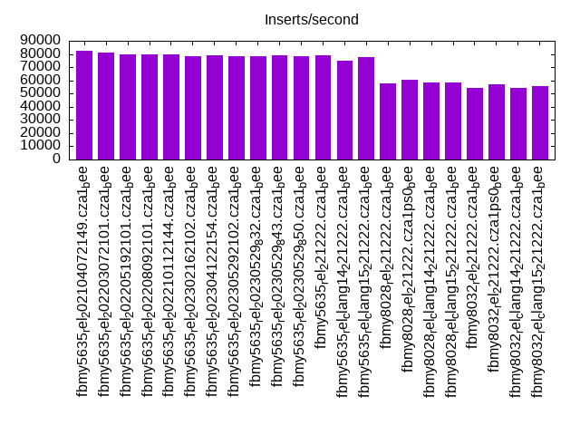
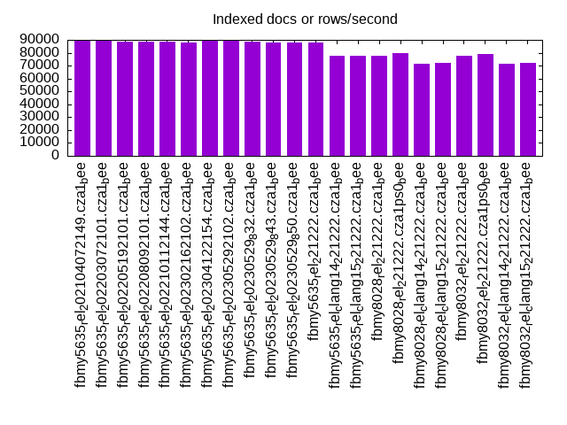
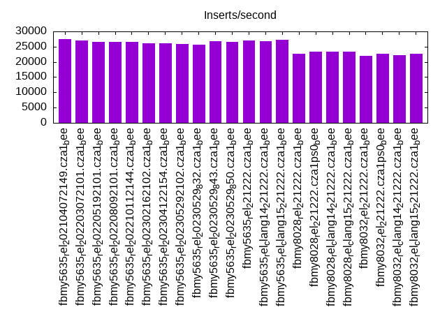
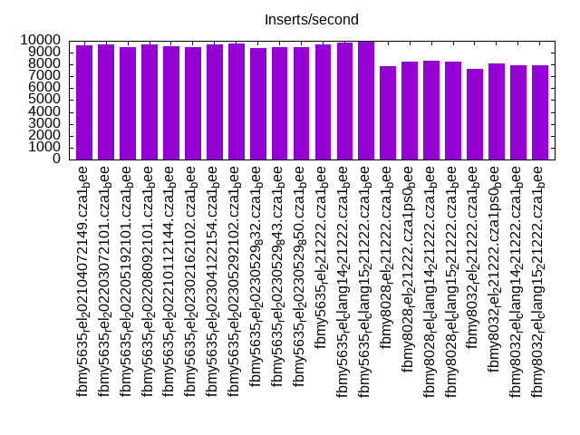
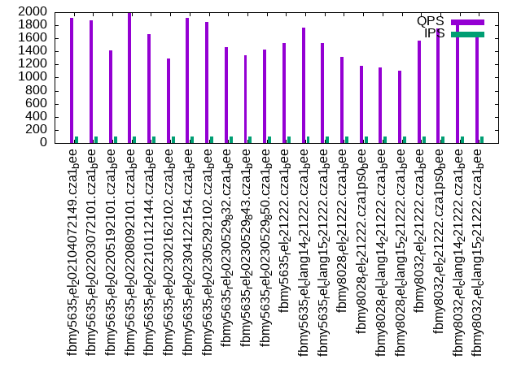
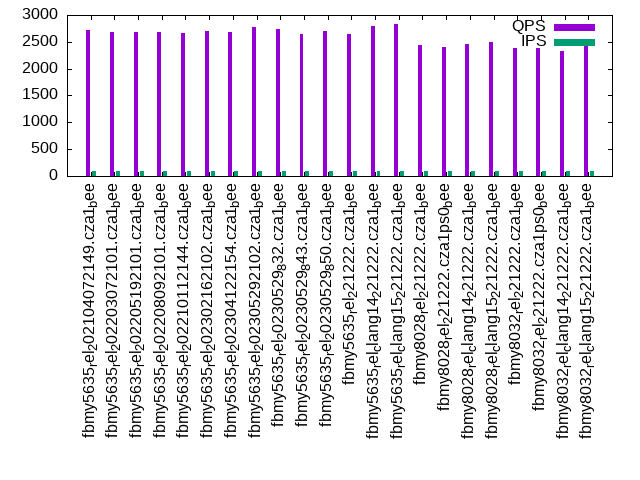
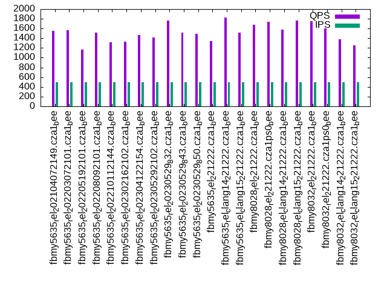
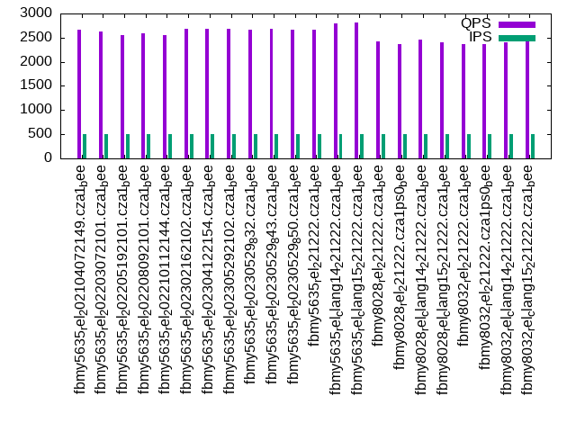
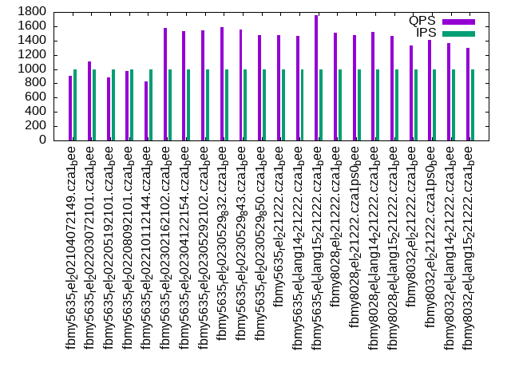
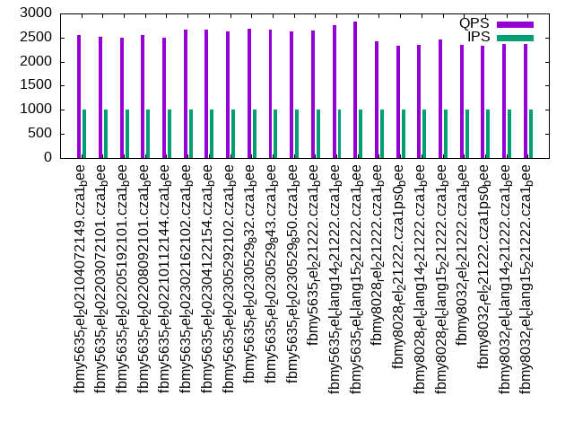

This is a report for the insert benchmark with 30M docs and 1 client(s). It is generated by scripts (bash, awk, sed) and Tufte might not be impressed. An overview of the insert benchmark is here and a short update is here. Below, by DBMS, I mean DBMS+version.config. An example is my8020.c10b40 where my means MySQL, 8020 is version 8.0.20 and c10b40 is the name for the configuration file.
The test server has a Beelink SER4 with 8 AMD cores, 16G RAM and an NVMe SSD. It is described here. The benchmark was run with 1 client and there were 1 or 3 connections per client (1 for queries or inserts without rate limits, 1+1 for rate limited inserts+deletes). It uses 1 table. It loads 30M rows per table without secondary indexes, creates 3 secondary indexes per table, then inserts 50m+50m rows per table with a delete per insert to avoid growing the table. It then does 6 read+write tests for 1800s each that do queries as fast as possible with 100,100,500,500,1000,1000 inserts/s and the same for deletes/s per client concurrent with the queries. The database is cached in memory. Clients and the DBMS share one server. The per-database configs are in the per-database subdirectories here.
The tested DBMS are:
The numbers are inserts/s for l.i0, l.i1 and l.i2, indexed docs (or rows) /s for l.x and queries/s for qr100, qp100 thru qr1000, qp1000" The values are the average rate over the entire test for inserts (IPS) and queries (QPS). The range of values for IPS and QPS is split into 3 parts: bottom 25%, middle 50%, top 25%. Values in the bottom 25% have a red background, values in the top 25% have a green background and values in the middle have no color. A gray background is used for values that can be ignored because the DBMS did not sustain the target insert rate. Red backgrounds are not used when the minimum value is within 80% of the max value.
| dbms | l.i0 | l.x | l.i1 | l.i2 | qr100 | qp100 | qr500 | qp500 | qr1000 | qp1000 |
|---|---|---|---|---|---|---|---|---|---|---|
| fbmy5635_rel_202104072149.cza1_bee | 82418 | 89552 | 27435 | 9652 | 1908 | 2721 | 1555 | 2664 | 908 | 2555 |
| fbmy5635_rel_202203072101.cza1_bee | 80862 | 89821 | 27064 | 9709 | 1875 | 2686 | 1561 | 2624 | 1109 | 2524 |
| fbmy5635_rel_202205192101.cza1_bee | 80000 | 88758 | 26525 | 9488 | 1411 | 2692 | 1164 | 2558 | 888 | 2498 |
| fbmy5635_rel_202208092101.cza1_bee | 79787 | 88496 | 26543 | 9662 | 1996 | 2682 | 1515 | 2584 | 972 | 2548 |
| fbmy5635_rel_202210112144.cza1_bee | 79365 | 88496 | 26543 | 9533 | 1663 | 2658 | 1322 | 2545 | 823 | 2488 |
| fbmy5635_rel_202302162102.cza1_bee | 78534 | 87977 | 26195 | 9470 | 1296 | 2710 | 1329 | 2675 | 1578 | 2661 |
| fbmy5635_rel_202304122154.cza1_bee | 78740 | 89021 | 26144 | 9728 | 1918 | 2677 | 1463 | 2677 | 1528 | 2656 |
| fbmy5635_rel_202305292102.cza1_bee | 78534 | 89552 | 25856 | 9775 | 1845 | 2770 | 1416 | 2680 | 1543 | 2630 |
| fbmy5635_rel_20230529_832.cza1_bee | 78534 | 88496 | 25592 | 9407 | 1472 | 2733 | 1766 | 2663 | 1586 | 2676 |
| fbmy5635_rel_20230529_843.cza1_bee | 78947 | 87977 | 26756 | 9497 | 1342 | 2646 | 1517 | 2687 | 1554 | 2668 |
| fbmy5635_rel_20230529_850.cza1_bee | 78329 | 87977 | 26667 | 9443 | 1428 | 2696 | 1486 | 2656 | 1477 | 2632 |
| fbmy5635_rel_221222.cza1_bee | 79156 | 87720 | 27045 | 9671 | 1525 | 2650 | 1338 | 2666 | 1479 | 2638 |
| fbmy5635_rel_clang14_221222.cza1_bee | 75188 | 77320 | 26846 | 9881 | 1770 | 2791 | 1831 | 2800 | 1465 | 2752 |
| fbmy5635_rel_clang15_221222.cza1_bee | 77320 | 77720 | 27192 | 9911 | 1526 | 2824 | 1520 | 2822 | 1752 | 2829 |
| fbmy8028_rel_221222.cza1_bee | 57803 | 77922 | 22612 | 7837 | 1314 | 2450 | 1681 | 2418 | 1505 | 2414 |
| fbmy8028_rel_221222.cza1ps0_bee | 60120 | 79576 | 23310 | 8244 | 1185 | 2395 | 1743 | 2373 | 1477 | 2333 |
| fbmy8028_rel_clang14_221222.cza1_bee | 58480 | 71429 | 23337 | 8285 | 1151 | 2454 | 1575 | 2453 | 1519 | 2356 |
| fbmy8028_rel_clang15_221222.cza1_bee | 58366 | 71943 | 23392 | 8264 | 1106 | 2495 | 1760 | 2410 | 1469 | 2460 |
| fbmy8032_rel_221222.cza1_bee | 53957 | 77320 | 21954 | 7669 | 1562 | 2394 | 1746 | 2374 | 1333 | 2354 |
| fbmy8032_rel_221222.cza1ps0_bee | 56926 | 79156 | 22779 | 8091 | 1748 | 2384 | 1601 | 2368 | 1410 | 2338 |
| fbmy8032_rel_clang14_221222.cza1_bee | 54054 | 71259 | 22321 | 7974 | 1870 | 2338 | 1382 | 2396 | 1369 | 2361 |
| fbmy8032_rel_clang15_221222.cza1_bee | 55350 | 71943 | 22740 | 7962 | 1671 | 2438 | 1250 | 2422 | 1299 | 2372 |
This table has relative throughput, throughput for the DBMS relative to the DBMS in the first line, using the absolute throughput from the previous table. Values less than 0.95 have a yellow background. Values greater than 1.05 have a blue background.
| dbms | l.i0 | l.x | l.i1 | l.i2 | qr100 | qp100 | qr500 | qp500 | qr1000 | qp1000 |
|---|---|---|---|---|---|---|---|---|---|---|
| fbmy5635_rel_202104072149.cza1_bee | 1.00 | 1.00 | 1.00 | 1.00 | 1.00 | 1.00 | 1.00 | 1.00 | 1.00 | 1.00 |
| fbmy5635_rel_202203072101.cza1_bee | 0.98 | 1.00 | 0.99 | 1.01 | 0.98 | 0.99 | 1.00 | 0.98 | 1.22 | 0.99 |
| fbmy5635_rel_202205192101.cza1_bee | 0.97 | 0.99 | 0.97 | 0.98 | 0.74 | 0.99 | 0.75 | 0.96 | 0.98 | 0.98 |
| fbmy5635_rel_202208092101.cza1_bee | 0.97 | 0.99 | 0.97 | 1.00 | 1.05 | 0.99 | 0.97 | 0.97 | 1.07 | 1.00 |
| fbmy5635_rel_202210112144.cza1_bee | 0.96 | 0.99 | 0.97 | 0.99 | 0.87 | 0.98 | 0.85 | 0.96 | 0.91 | 0.97 |
| fbmy5635_rel_202302162102.cza1_bee | 0.95 | 0.98 | 0.95 | 0.98 | 0.68 | 1.00 | 0.85 | 1.00 | 1.74 | 1.04 |
| fbmy5635_rel_202304122154.cza1_bee | 0.96 | 0.99 | 0.95 | 1.01 | 1.01 | 0.98 | 0.94 | 1.00 | 1.68 | 1.04 |
| fbmy5635_rel_202305292102.cza1_bee | 0.95 | 1.00 | 0.94 | 1.01 | 0.97 | 1.02 | 0.91 | 1.01 | 1.70 | 1.03 |
| fbmy5635_rel_20230529_832.cza1_bee | 0.95 | 0.99 | 0.93 | 0.97 | 0.77 | 1.00 | 1.14 | 1.00 | 1.75 | 1.05 |
| fbmy5635_rel_20230529_843.cza1_bee | 0.96 | 0.98 | 0.98 | 0.98 | 0.70 | 0.97 | 0.98 | 1.01 | 1.71 | 1.04 |
| fbmy5635_rel_20230529_850.cza1_bee | 0.95 | 0.98 | 0.97 | 0.98 | 0.75 | 0.99 | 0.96 | 1.00 | 1.63 | 1.03 |
| fbmy5635_rel_221222.cza1_bee | 0.96 | 0.98 | 0.99 | 1.00 | 0.80 | 0.97 | 0.86 | 1.00 | 1.63 | 1.03 |
| fbmy5635_rel_clang14_221222.cza1_bee | 0.91 | 0.86 | 0.98 | 1.02 | 0.93 | 1.03 | 1.18 | 1.05 | 1.61 | 1.08 |
| fbmy5635_rel_clang15_221222.cza1_bee | 0.94 | 0.87 | 0.99 | 1.03 | 0.80 | 1.04 | 0.98 | 1.06 | 1.93 | 1.11 |
| fbmy8028_rel_221222.cza1_bee | 0.70 | 0.87 | 0.82 | 0.81 | 0.69 | 0.90 | 1.08 | 0.91 | 1.66 | 0.94 |
| fbmy8028_rel_221222.cza1ps0_bee | 0.73 | 0.89 | 0.85 | 0.85 | 0.62 | 0.88 | 1.12 | 0.89 | 1.63 | 0.91 |
| fbmy8028_rel_clang14_221222.cza1_bee | 0.71 | 0.80 | 0.85 | 0.86 | 0.60 | 0.90 | 1.01 | 0.92 | 1.67 | 0.92 |
| fbmy8028_rel_clang15_221222.cza1_bee | 0.71 | 0.80 | 0.85 | 0.86 | 0.58 | 0.92 | 1.13 | 0.90 | 1.62 | 0.96 |
| fbmy8032_rel_221222.cza1_bee | 0.65 | 0.86 | 0.80 | 0.79 | 0.82 | 0.88 | 1.12 | 0.89 | 1.47 | 0.92 |
| fbmy8032_rel_221222.cza1ps0_bee | 0.69 | 0.88 | 0.83 | 0.84 | 0.92 | 0.88 | 1.03 | 0.89 | 1.55 | 0.92 |
| fbmy8032_rel_clang14_221222.cza1_bee | 0.66 | 0.80 | 0.81 | 0.83 | 0.98 | 0.86 | 0.89 | 0.90 | 1.51 | 0.92 |
| fbmy8032_rel_clang15_221222.cza1_bee | 0.67 | 0.80 | 0.83 | 0.82 | 0.88 | 0.90 | 0.80 | 0.91 | 1.43 | 0.93 |
This lists the average rate of inserts/s for the tests that do inserts concurrent with queries. For such tests the query rate is listed in the table above. The read+write tests are setup so that the insert rate should match the target rate every second. Cells that are not at least 95% of the target have a red background to indicate a failure to satisfy the target.
| dbms | qr100.L1 | qp100.L2 | qr500.L3 | qp500.L4 | qr1000.L5 | qp1000.L6 |
|---|---|---|---|---|---|---|
| fbmy5635_rel_202104072149.cza1_bee | 100 | 100 | 499 | 499 | 998 | 998 |
| fbmy5635_rel_202203072101.cza1_bee | 100 | 100 | 499 | 499 | 997 | 997 |
| fbmy5635_rel_202205192101.cza1_bee | 100 | 100 | 499 | 499 | 997 | 998 |
| fbmy5635_rel_202208092101.cza1_bee | 100 | 100 | 499 | 499 | 997 | 998 |
| fbmy5635_rel_202210112144.cza1_bee | 100 | 100 | 499 | 499 | 998 | 998 |
| fbmy5635_rel_202302162102.cza1_bee | 100 | 100 | 499 | 499 | 998 | 998 |
| fbmy5635_rel_202304122154.cza1_bee | 100 | 100 | 499 | 499 | 997 | 998 |
| fbmy5635_rel_202305292102.cza1_bee | 100 | 100 | 499 | 499 | 998 | 998 |
| fbmy5635_rel_20230529_832.cza1_bee | 100 | 100 | 499 | 498 | 997 | 998 |
| fbmy5635_rel_20230529_843.cza1_bee | 100 | 100 | 499 | 499 | 998 | 997 |
| fbmy5635_rel_20230529_850.cza1_bee | 100 | 100 | 499 | 499 | 998 | 998 |
| fbmy5635_rel_221222.cza1_bee | 100 | 100 | 499 | 499 | 998 | 998 |
| fbmy5635_rel_clang14_221222.cza1_bee | 100 | 100 | 499 | 499 | 997 | 998 |
| fbmy5635_rel_clang15_221222.cza1_bee | 100 | 100 | 499 | 499 | 997 | 998 |
| fbmy8028_rel_221222.cza1_bee | 100 | 100 | 499 | 499 | 998 | 998 |
| fbmy8028_rel_221222.cza1ps0_bee | 100 | 100 | 499 | 499 | 998 | 998 |
| fbmy8028_rel_clang14_221222.cza1_bee | 100 | 100 | 499 | 499 | 998 | 997 |
| fbmy8028_rel_clang15_221222.cza1_bee | 100 | 100 | 499 | 499 | 998 | 998 |
| fbmy8032_rel_221222.cza1_bee | 100 | 100 | 499 | 499 | 998 | 998 |
| fbmy8032_rel_221222.cza1ps0_bee | 100 | 100 | 499 | 499 | 998 | 998 |
| fbmy8032_rel_clang14_221222.cza1_bee | 100 | 100 | 499 | 499 | 998 | 998 |
| fbmy8032_rel_clang15_221222.cza1_bee | 100 | 100 | 499 | 499 | 998 | 998 |
| target | 100 | 100 | 500 | 500 | 1000 | 1000 |
l.i0: load without secondary indexes. Graphs for performance per 1-second interval are here.
Average throughput:
Insert response time histogram: each cell has the percentage of responses that take <= the time in the header and max is the max response time in seconds. For the max column values in the top 25% of the range have a red background and in the bottom 25% of the range have a green background. The red background is not used when the min value is within 80% of the max value.
| dbms | 256us | 1ms | 4ms | 16ms | 64ms | 256ms | 1s | 4s | 16s | gt | max |
|---|---|---|---|---|---|---|---|---|---|---|---|
| fbmy5635_rel_202104072149.cza1_bee | 0.019 | 99.857 | 0.121 | 0.003 | 0.001 | 0.102 | |||||
| fbmy5635_rel_202203072101.cza1_bee | 0.001 | 99.872 | 0.123 | 0.003 | 0.001 | 0.103 | |||||
| fbmy5635_rel_202205192101.cza1_bee | 99.872 | 0.124 | 0.003 | nonzero | 0.098 | ||||||
| fbmy5635_rel_202208092101.cza1_bee | 99.872 | 0.124 | 0.003 | 0.001 | 0.070 | ||||||
| fbmy5635_rel_202210112144.cza1_bee | 99.872 | 0.125 | 0.003 | 0.001 | 0.102 | ||||||
| fbmy5635_rel_202302162102.cza1_bee | 99.870 | 0.126 | 0.004 | 0.055 | |||||||
| fbmy5635_rel_202304122154.cza1_bee | 99.870 | 0.126 | 0.004 | nonzero | 0.100 | ||||||
| fbmy5635_rel_202305292102.cza1_bee | 99.869 | 0.127 | 0.004 | nonzero | 0.089 | ||||||
| fbmy5635_rel_20230529_832.cza1_bee | 99.869 | 0.127 | 0.004 | 0.055 | |||||||
| fbmy5635_rel_20230529_843.cza1_bee | 99.870 | 0.126 | 0.004 | 0.001 | 0.100 | ||||||
| fbmy5635_rel_20230529_850.cza1_bee | 99.869 | 0.127 | 0.004 | 0.058 | |||||||
| fbmy5635_rel_221222.cza1_bee | 99.871 | 0.125 | 0.004 | 0.057 | |||||||
| fbmy5635_rel_clang14_221222.cza1_bee | 99.864 | 0.131 | 0.004 | 0.062 | |||||||
| fbmy5635_rel_clang15_221222.cza1_bee | 99.868 | 0.128 | 0.003 | 0.001 | 0.098 | ||||||
| fbmy8028_rel_221222.cza1_bee | 99.723 | 0.203 | 0.071 | 0.003 | 0.082 | ||||||
| fbmy8028_rel_221222.cza1ps0_bee | 99.730 | 0.196 | 0.071 | 0.003 | 0.073 | ||||||
| fbmy8028_rel_clang14_221222.cza1_bee | 99.726 | 0.195 | 0.076 | 0.003 | 0.082 | ||||||
| fbmy8028_rel_clang15_221222.cza1_bee | 99.726 | 0.196 | 0.074 | 0.003 | 0.080 | ||||||
| fbmy8032_rel_221222.cza1_bee | 99.712 | 0.208 | 0.078 | 0.002 | 0.070 | ||||||
| fbmy8032_rel_221222.cza1ps0_bee | 99.719 | 0.203 | 0.076 | 0.001 | 0.072 | ||||||
| fbmy8032_rel_clang14_221222.cza1_bee | 99.712 | 0.206 | 0.080 | 0.002 | 0.073 | ||||||
| fbmy8032_rel_clang15_221222.cza1_bee | 99.717 | 0.201 | 0.080 | 0.003 | 0.074 |
Performance metrics for the DBMS listed above. Some are normalized by throughput, others are not. Legend for results is here.
ips qps rps rmbps wps wmbps rpq rkbpq wpi wkbpi csps cpups cspq cpupq dbgb1 dbgb2 rss maxop p50 p99 tag 82418 0 0 0.0 37.3 13.9 0.000 0.000 0.000 0.173 8057 22.7 0.098 22 1.0 2.5 0.3 0.102 82943 74014 fbmy5635_rel_202104072149.cza1_bee 80862 0 0 0.0 37.0 13.9 0.000 0.000 0.000 0.177 7946 22.4 0.098 22 1.0 2.5 0.3 0.103 81466 74816 fbmy5635_rel_202203072101.cza1_bee 80000 0 0 0.0 35.9 13.5 0.000 0.000 0.000 0.173 7871 22.7 0.098 23 1.0 2.5 0.3 0.098 80806 73198 fbmy5635_rel_202205192101.cza1_bee 79787 0 0 0.0 38.8 13.8 0.000 0.000 0.000 0.177 7828 22.7 0.098 23 1.0 2.5 0.3 0.070 80500 73616 fbmy5635_rel_202208092101.cza1_bee 79365 0 0 0.0 38.8 13.3 0.000 0.000 0.000 0.172 7827 22.6 0.099 23 1.0 2.5 0.3 0.102 79813 73116 fbmy5635_rel_202210112144.cza1_bee 78534 0 0 0.0 35.9 13.6 0.000 0.000 0.000 0.177 7710 22.8 0.098 23 1.0 2.5 0.3 0.055 79107 72720 fbmy5635_rel_202302162102.cza1_bee 78740 0 0 0.0 36.4 13.6 0.000 0.000 0.000 0.176 7743 22.8 0.098 23 1.0 2.5 0.3 0.100 79225 73402 fbmy5635_rel_202304122154.cza1_bee 78534 0 0 0.0 36.9 13.2 0.000 0.000 0.000 0.172 7728 23.1 0.098 24 1.0 2.5 0.3 0.089 79015 70551 fbmy5635_rel_202305292102.cza1_bee 78534 0 0 0.0 35.7 13.3 0.000 0.000 0.000 0.173 7721 23.2 0.098 24 1.0 2.5 0.3 0.055 79054 71420 fbmy5635_rel_20230529_832.cza1_bee 78947 0 0 0.0 35.8 13.3 0.000 0.000 0.000 0.173 7759 23.0 0.098 23 1.0 2.5 0.3 0.100 79509 70920 fbmy5635_rel_20230529_843.cza1_bee 78329 0 0 0.0 35.7 13.2 0.000 0.000 0.000 0.172 7682 22.9 0.098 23 1.0 2.5 0.3 0.058 78811 70343 fbmy5635_rel_20230529_850.cza1_bee 79156 0 0 0.0 35.9 13.3 0.000 0.000 0.000 0.172 7778 22.9 0.098 23 1.0 2.5 0.3 0.057 79812 71308 fbmy5635_rel_221222.cza1_bee 75188 0 0 0.0 35.3 12.9 0.000 0.000 0.000 0.176 7449 22.0 0.099 23 1.0 2.5 0.3 0.062 75817 68541 fbmy5635_rel_clang14_221222.cza1_bee 77320 0 0 0.0 35.1 13.0 0.000 0.000 0.000 0.172 7612 22.9 0.098 24 1.0 2.5 0.3 0.098 77863 68994 fbmy5635_rel_clang15_221222.cza1_bee 57803 0 0 0.0 36.3 11.9 0.000 0.000 0.001 0.211 6068 22.6 0.105 31 0.9 2.7 0.6 0.082 58037 51263 fbmy8028_rel_221222.cza1_bee 60120 0 0 0.0 37.6 12.3 0.000 0.000 0.001 0.210 6275 22.7 0.104 30 0.9 2.7 0.4 0.073 60503 54555 fbmy8028_rel_221222.cza1ps0_bee 58480 0 0 0.0 36.8 12.0 0.000 0.000 0.001 0.211 6138 22.6 0.105 31 0.9 2.7 0.6 0.082 58658 52969 fbmy8028_rel_clang14_221222.cza1_bee 58366 0 0 0.0 36.5 12.0 0.000 0.000 0.001 0.211 6116 22.5 0.105 31 0.9 2.7 0.6 0.080 58634 52940 fbmy8028_rel_clang15_221222.cza1_bee 53957 0 0 0.0 34.8 11.1 0.000 0.000 0.001 0.210 5839 21.7 0.108 32 0.9 2.7 0.6 0.070 54139 49644 fbmy8032_rel_221222.cza1_bee 56926 0 0 0.0 36.7 11.7 0.000 0.000 0.001 0.211 6112 22.0 0.107 31 0.9 2.7 0.4 0.072 57138 51942 fbmy8032_rel_221222.cza1ps0_bee 54054 0 0 0.0 34.9 11.1 0.000 0.000 0.001 0.210 5835 21.6 0.108 32 0.9 2.7 0.6 0.073 54180 49461 fbmy8032_rel_clang14_221222.cza1_bee 55350 0 0 0.0 35.6 11.4 0.000 0.000 0.001 0.210 5974 21.8 0.108 32 0.9 2.7 0.6 0.074 55535 50039 fbmy8032_rel_clang15_221222.cza1_bee
l.x: create secondary indexes.
Average throughput:
Performance metrics for the DBMS listed above. Some are normalized by throughput, others are not. Legend for results is here.
ips qps rps rmbps wps wmbps rpq rkbpq wpi wkbpi csps cpups cspq cpupq dbgb1 dbgb2 rss maxop p50 p99 tag 89552 0 0 0.0 35.7 13.8 0.000 0.000 0.000 0.158 238 11.7 0.003 10 2.1 3.6 2.0 0.002 NA NA fbmy5635_rel_202104072149.cza1_bee 89821 0 0 0.0 36.7 14.6 0.000 0.000 0.000 0.166 227 11.8 0.003 11 2.0 3.6 2.3 0.002 NA NA fbmy5635_rel_202203072101.cza1_bee 88758 0 0 0.0 36.0 14.4 0.000 0.000 0.000 0.167 204 11.8 0.002 11 2.0 3.6 2.4 0.002 NA NA fbmy5635_rel_202205192101.cza1_bee 88496 0 0 0.0 38.0 14.4 0.000 0.000 0.000 0.167 245 11.8 0.003 11 2.0 3.6 2.4 0.002 NA NA fbmy5635_rel_202208092101.cza1_bee 88496 0 0 0.0 37.9 14.4 0.000 0.000 0.000 0.167 284 11.8 0.003 11 2.0 3.6 2.4 0.002 NA NA fbmy5635_rel_202210112144.cza1_bee 87977 0 0 0.0 35.9 14.4 0.000 0.000 0.000 0.168 189 11.8 0.002 11 2.0 3.6 2.4 0.002 NA NA fbmy5635_rel_202302162102.cza1_bee 89021 0 0 0.0 36.2 14.5 0.000 0.000 0.000 0.167 202 11.8 0.002 11 2.0 3.6 2.3 0.002 NA NA fbmy5635_rel_202304122154.cza1_bee 89552 0 0 0.0 37.2 14.6 0.000 0.000 0.000 0.167 244 11.8 0.003 11 2.0 3.6 2.3 0.002 NA NA fbmy5635_rel_202305292102.cza1_bee 88496 0 0 0.0 36.4 14.4 0.000 0.000 0.000 0.167 203 11.8 0.002 11 2.0 3.6 2.3 0.002 NA NA fbmy5635_rel_20230529_832.cza1_bee 87977 0 0 0.0 36.2 14.4 0.000 0.000 0.000 0.168 238 11.9 0.003 11 2.0 3.6 2.4 0.002 NA NA fbmy5635_rel_20230529_843.cza1_bee 87977 0 0 0.0 36.3 14.4 0.000 0.000 0.000 0.167 212 11.8 0.002 11 2.0 3.6 2.4 0.002 NA NA fbmy5635_rel_20230529_850.cza1_bee 87720 0 0 0.0 36.1 14.3 0.000 0.000 0.000 0.167 217 11.8 0.002 11 2.0 3.6 2.4 0.002 NA NA fbmy5635_rel_221222.cza1_bee 77320 0 0 0.0 31.7 12.6 0.000 0.000 0.000 0.166 213 11.9 0.003 12 2.0 3.6 2.2 0.002 NA NA fbmy5635_rel_clang14_221222.cza1_bee 77720 0 0 0.0 31.9 12.7 0.000 0.000 0.000 0.167 206 11.9 0.003 12 2.0 3.6 2.2 0.002 NA NA fbmy5635_rel_clang15_221222.cza1_bee 77922 0 0 0.0 31.2 12.1 0.000 0.000 0.000 0.159 357 11.7 0.005 12 2.0 3.8 2.7 0.003 NA NA fbmy8028_rel_221222.cza1_bee 79576 0 0 0.0 32.0 12.3 0.000 0.000 0.000 0.158 384 11.7 0.005 12 2.0 3.8 2.5 0.003 NA NA fbmy8028_rel_221222.cza1ps0_bee 71429 0 0 0.0 28.7 11.0 0.000 0.000 0.000 0.158 342 11.7 0.005 13 2.0 3.8 2.7 0.003 NA NA fbmy8028_rel_clang14_221222.cza1_bee 71943 0 0 0.0 28.9 11.1 0.000 0.000 0.000 0.158 350 11.8 0.005 13 2.0 3.8 2.7 0.003 NA NA fbmy8028_rel_clang15_221222.cza1_bee 77320 0 0 0.0 30.9 11.9 0.000 0.000 0.000 0.158 582 11.8 0.008 12 2.0 3.8 2.7 0.003 NA NA fbmy8032_rel_221222.cza1_bee 79156 0 0 0.0 31.5 12.2 0.000 0.000 0.000 0.158 584 11.7 0.007 12 2.0 3.8 2.5 0.003 NA NA fbmy8032_rel_221222.cza1ps0_bee 71259 0 0 0.0 28.6 11.0 0.000 0.000 0.000 0.159 566 11.7 0.008 13 2.0 3.8 2.7 0.003 NA NA fbmy8032_rel_clang14_221222.cza1_bee 71943 0 0 0.0 28.9 11.1 0.000 0.000 0.000 0.158 580 11.8 0.008 13 2.0 3.8 2.7 0.003 NA NA fbmy8032_rel_clang15_221222.cza1_bee
l.i1: continue load after secondary indexes created with 50 inserts per transaction. Graphs for performance per 1-second interval are here.
Average throughput:
Insert response time histogram: each cell has the percentage of responses that take <= the time in the header and max is the max response time in seconds. For the max column values in the top 25% of the range have a red background and in the bottom 25% of the range have a green background. The red background is not used when the min value is within 80% of the max value.
| dbms | 256us | 1ms | 4ms | 16ms | 64ms | 256ms | 1s | 4s | 16s | gt | max |
|---|---|---|---|---|---|---|---|---|---|---|---|
| fbmy5635_rel_202104072149.cza1_bee | 99.813 | 0.182 | 0.003 | 0.001 | 0.098 | ||||||
| fbmy5635_rel_202203072101.cza1_bee | 99.810 | 0.185 | 0.003 | 0.001 | 0.082 | ||||||
| fbmy5635_rel_202205192101.cza1_bee | 99.806 | 0.189 | 0.003 | 0.002 | 0.093 | ||||||
| fbmy5635_rel_202208092101.cza1_bee | 99.808 | 0.186 | 0.003 | 0.003 | 0.090 | ||||||
| fbmy5635_rel_202210112144.cza1_bee | 99.807 | 0.187 | 0.003 | 0.003 | 0.083 | ||||||
| fbmy5635_rel_202302162102.cza1_bee | 99.806 | 0.188 | 0.004 | 0.002 | 0.085 | ||||||
| fbmy5635_rel_202304122154.cza1_bee | 99.804 | 0.191 | 0.003 | 0.002 | 0.092 | ||||||
| fbmy5635_rel_202305292102.cza1_bee | 99.802 | 0.194 | 0.003 | 0.002 | 0.077 | ||||||
| fbmy5635_rel_20230529_832.cza1_bee | 99.802 | 0.193 | 0.003 | 0.002 | 0.088 | ||||||
| fbmy5635_rel_20230529_843.cza1_bee | 99.808 | 0.186 | 0.004 | 0.002 | 0.078 | ||||||
| fbmy5635_rel_20230529_850.cza1_bee | 99.808 | 0.186 | 0.004 | 0.002 | 0.084 | ||||||
| fbmy5635_rel_221222.cza1_bee | 99.810 | 0.184 | 0.005 | 0.001 | 0.073 | ||||||
| fbmy5635_rel_clang14_221222.cza1_bee | 99.807 | 0.188 | 0.003 | 0.002 | 0.091 | ||||||
| fbmy5635_rel_clang15_221222.cza1_bee | 99.809 | 0.186 | 0.004 | 0.002 | 0.073 | ||||||
| fbmy8028_rel_221222.cza1_bee | 99.669 | 0.267 | 0.060 | 0.003 | 0.087 | ||||||
| fbmy8028_rel_221222.cza1ps0_bee | 99.675 | 0.256 | 0.065 | 0.003 | 0.093 | ||||||
| fbmy8028_rel_clang14_221222.cza1_bee | 99.675 | 0.263 | 0.059 | 0.003 | 0.090 | ||||||
| fbmy8028_rel_clang15_221222.cza1_bee | 99.674 | 0.263 | 0.060 | 0.003 | 0.091 | ||||||
| fbmy8032_rel_221222.cza1_bee | 99.660 | 0.272 | 0.067 | 0.002 | 0.079 | ||||||
| fbmy8032_rel_221222.cza1ps0_bee | 99.668 | 0.265 | 0.065 | 0.001 | 0.076 | ||||||
| fbmy8032_rel_clang14_221222.cza1_bee | 99.665 | 0.266 | 0.067 | 0.002 | 0.077 | ||||||
| fbmy8032_rel_clang15_221222.cza1_bee | 99.669 | 0.261 | 0.068 | 0.002 | 0.090 |
Delete response time histogram: each cell has the percentage of responses that take <= the time in the header and max is the max response time in seconds. For the max column values in the top 25% of the range have a red background and in the bottom 25% of the range have a green background. The red background is not used when the min value is within 80% of the max value.
| dbms | 256us | 1ms | 4ms | 16ms | 64ms | 256ms | 1s | 4s | 16s | gt | max |
|---|---|---|---|---|---|---|---|---|---|---|---|
| fbmy5635_rel_202104072149.cza1_bee | 99.806 | 0.185 | 0.008 | 0.001 | 0.108 | ||||||
| fbmy5635_rel_202203072101.cza1_bee | 99.806 | 0.185 | 0.007 | 0.002 | 0.105 | ||||||
| fbmy5635_rel_202205192101.cza1_bee | 99.800 | 0.190 | 0.008 | 0.002 | 0.098 | ||||||
| fbmy5635_rel_202208092101.cza1_bee | 99.800 | 0.189 | 0.007 | 0.004 | 0.103 | ||||||
| fbmy5635_rel_202210112144.cza1_bee | 99.803 | 0.188 | 0.006 | 0.003 | 0.099 | ||||||
| fbmy5635_rel_202302162102.cza1_bee | 99.799 | 0.193 | 0.005 | 0.003 | 0.093 | ||||||
| fbmy5635_rel_202304122154.cza1_bee | 99.798 | 0.194 | 0.006 | 0.003 | 0.093 | ||||||
| fbmy5635_rel_202305292102.cza1_bee | 99.796 | 0.196 | 0.005 | 0.003 | 0.096 | ||||||
| fbmy5635_rel_20230529_832.cza1_bee | 99.794 | 0.198 | 0.005 | 0.003 | 0.096 | ||||||
| fbmy5635_rel_20230529_843.cza1_bee | 99.800 | 0.191 | 0.008 | 0.002 | 0.079 | ||||||
| fbmy5635_rel_20230529_850.cza1_bee | 99.800 | 0.189 | 0.009 | 0.002 | 0.085 | ||||||
| fbmy5635_rel_221222.cza1_bee | 99.801 | 0.189 | 0.008 | 0.001 | 0.073 | ||||||
| fbmy5635_rel_clang14_221222.cza1_bee | 99.799 | 0.192 | 0.008 | 0.002 | 0.091 | ||||||
| fbmy5635_rel_clang15_221222.cza1_bee | 99.802 | 0.189 | 0.007 | 0.002 | 0.074 | ||||||
| fbmy8028_rel_221222.cza1_bee | 99.659 | 0.271 | 0.067 | 0.003 | 0.093 | ||||||
| fbmy8028_rel_221222.cza1ps0_bee | 99.664 | 0.260 | 0.072 | 0.003 | 0.088 | ||||||
| fbmy8028_rel_clang14_221222.cza1_bee | 99.668 | 0.264 | 0.065 | 0.003 | 0.088 | ||||||
| fbmy8028_rel_clang15_221222.cza1_bee | 99.666 | 0.264 | 0.068 | 0.003 | 0.089 | ||||||
| fbmy8032_rel_221222.cza1_bee | 99.650 | 0.273 | 0.075 | 0.002 | 0.089 | ||||||
| fbmy8032_rel_221222.cza1ps0_bee | 99.661 | 0.266 | 0.072 | 0.002 | 0.081 | ||||||
| fbmy8032_rel_clang14_221222.cza1_bee | 99.656 | 0.268 | 0.074 | 0.002 | 0.090 | ||||||
| fbmy8032_rel_clang15_221222.cza1_bee | 99.662 | 0.262 | 0.074 | 0.002 | 0.078 |
Performance metrics for the DBMS listed above. Some are normalized by throughput, others are not. Legend for results is here.
ips qps rps rmbps wps wmbps rpq rkbpq wpi wkbpi csps cpups cspq cpupq dbgb1 dbgb2 rss maxop p50 p99 tag 27435 0 6 0.8 131.7 51.1 0.000 0.028 0.005 1.908 11704 48.4 0.427 141 2.6 3.3 5.6 0.098 27420 24422 fbmy5635_rel_202104072149.cza1_bee 27064 0 6 0.8 125.6 49.3 0.000 0.029 0.005 1.865 11420 48.2 0.422 142 2.7 3.4 5.9 0.082 27069 24123 fbmy5635_rel_202203072101.cza1_bee 26525 0 6 0.7 126.4 50.0 0.000 0.028 0.005 1.931 11230 48.0 0.423 145 2.5 3.1 6.0 0.093 26521 23196 fbmy5635_rel_202205192101.cza1_bee 26543 0 6 0.7 129.4 50.1 0.000 0.028 0.005 1.932 11326 48.0 0.427 145 2.9 3.5 5.9 0.090 26527 23323 fbmy5635_rel_202208092101.cza1_bee 26543 0 6 0.7 127.8 49.5 0.000 0.028 0.005 1.908 11231 48.3 0.423 146 2.6 3.3 5.9 0.083 26533 23624 fbmy5635_rel_202210112144.cza1_bee 26195 0 29 0.9 107.6 42.4 0.001 0.034 0.004 1.658 11121 44.3 0.425 135 3.4 4.0 5.2 0.085 26119 23283 fbmy5635_rel_202302162102.cza1_bee 26144 0 26 0.9 107.4 42.8 0.001 0.034 0.004 1.677 11111 44.2 0.425 135 3.3 3.9 5.2 0.092 26040 23274 fbmy5635_rel_202304122154.cza1_bee 25856 0 44 0.9 107.4 42.3 0.002 0.037 0.004 1.676 10995 44.5 0.425 138 2.7 3.4 5.2 0.077 25721 23029 fbmy5635_rel_202305292102.cza1_bee 25592 0 49 1.0 106.6 42.1 0.002 0.039 0.004 1.684 10928 44.3 0.427 138 3.0 3.6 5.4 0.088 25472 22775 fbmy5635_rel_20230529_832.cza1_bee 26756 0 16 0.8 117.0 46.7 0.001 0.032 0.004 1.786 11305 48.7 0.423 146 2.4 3.1 5.2 0.078 26730 23873 fbmy5635_rel_20230529_843.cza1_bee 26667 0 14 0.8 119.2 47.3 0.001 0.032 0.004 1.817 11291 47.8 0.423 143 2.8 3.5 5.2 0.084 26635 23873 fbmy5635_rel_20230529_850.cza1_bee 27045 0 151 0.8 120.5 48.0 0.006 0.032 0.004 1.817 11706 48.4 0.433 143 2.8 3.5 5.3 0.073 27021 24223 fbmy5635_rel_221222.cza1_bee 26846 0 153 0.8 117.4 46.9 0.006 0.032 0.004 1.787 11530 48.8 0.430 145 2.4 3.1 5.2 0.091 26779 24045 fbmy5635_rel_clang14_221222.cza1_bee 27192 0 165 0.9 120.4 48.0 0.006 0.034 0.004 1.808 11671 49.0 0.429 144 2.4 3.1 5.2 0.073 27169 24224 fbmy5635_rel_clang15_221222.cza1_bee 22612 0 139 0.8 107.7 41.3 0.006 0.035 0.005 1.868 10151 46.1 0.449 163 2.6 3.5 5.3 0.087 22575 20126 fbmy8028_rel_221222.cza1_bee 23310 0 129 0.7 110.0 41.9 0.006 0.031 0.005 1.840 10427 46.1 0.447 158 2.4 3.2 5.1 0.093 23272 20835 fbmy8028_rel_221222.cza1ps0_bee 23337 0 142 0.8 110.2 41.8 0.006 0.034 0.005 1.835 10425 46.6 0.447 160 3.0 3.8 5.4 0.090 23274 20575 fbmy8028_rel_clang14_221222.cza1_bee 23392 0 138 0.8 111.2 42.6 0.006 0.033 0.005 1.863 10458 46.5 0.447 159 2.4 3.2 5.4 0.091 23333 20927 fbmy8028_rel_clang15_221222.cza1_bee 21954 0 122 0.7 103.9 39.5 0.006 0.032 0.005 1.841 10003 45.6 0.456 166 2.3 3.1 5.3 0.079 21925 19382 fbmy8032_rel_221222.cza1_bee 22779 0 137 0.8 107.7 40.8 0.006 0.034 0.005 1.834 10387 46.1 0.456 162 2.3 3.1 5.1 0.076 22723 20577 fbmy8032_rel_221222.cza1ps0_bee 22321 0 126 0.7 105.5 39.9 0.006 0.032 0.005 1.833 10141 45.8 0.454 164 2.5 3.4 5.3 0.077 22275 19994 fbmy8032_rel_clang14_221222.cza1_bee 22740 0 130 0.7 106.3 40.3 0.006 0.033 0.005 1.816 10361 46.1 0.456 162 2.7 3.5 5.3 0.090 22675 20427 fbmy8032_rel_clang15_221222.cza1_bee
l.i2: continue load after secondary indexes created with 5 inserts per transaction. Graphs for performance per 1-second interval are here.
Average throughput:
Insert response time histogram: each cell has the percentage of responses that take <= the time in the header and max is the max response time in seconds. For the max column values in the top 25% of the range have a red background and in the bottom 25% of the range have a green background. The red background is not used when the min value is within 80% of the max value.
| dbms | 256us | 1ms | 4ms | 16ms | 64ms | 256ms | 1s | 4s | 16s | gt | max |
|---|---|---|---|---|---|---|---|---|---|---|---|
| fbmy5635_rel_202104072149.cza1_bee | 0.057 | 99.875 | 0.016 | 0.052 | 0.001 | nonzero | 0.064 | ||||
| fbmy5635_rel_202203072101.cza1_bee | 0.031 | 99.905 | 0.012 | 0.051 | 0.001 | 0.060 | |||||
| fbmy5635_rel_202205192101.cza1_bee | 0.006 | 99.925 | 0.016 | 0.052 | 0.001 | nonzero | 0.065 | ||||
| fbmy5635_rel_202208092101.cza1_bee | 0.019 | 99.918 | 0.011 | 0.051 | 0.001 | nonzero | 0.069 | ||||
| fbmy5635_rel_202210112144.cza1_bee | 0.014 | 99.922 | 0.012 | 0.051 | 0.001 | nonzero | 0.075 | ||||
| fbmy5635_rel_202302162102.cza1_bee | 0.025 | 99.909 | 0.013 | 0.052 | 0.001 | 0.062 | |||||
| fbmy5635_rel_202304122154.cza1_bee | 0.019 | 99.919 | 0.011 | 0.051 | 0.001 | 0.062 | |||||
| fbmy5635_rel_202305292102.cza1_bee | 0.009 | 99.930 | 0.010 | 0.050 | 0.001 | nonzero | 0.089 | ||||
| fbmy5635_rel_20230529_832.cza1_bee | 0.008 | 99.926 | 0.014 | 0.052 | 0.001 | 0.064 | |||||
| fbmy5635_rel_20230529_843.cza1_bee | 0.011 | 99.922 | 0.013 | 0.053 | 0.001 | nonzero | 0.078 | ||||
| fbmy5635_rel_20230529_850.cza1_bee | 0.008 | 99.924 | 0.014 | 0.053 | 0.001 | nonzero | 0.074 | ||||
| fbmy5635_rel_221222.cza1_bee | 0.020 | 99.913 | 0.015 | 0.051 | 0.001 | 0.059 | |||||
| fbmy5635_rel_clang14_221222.cza1_bee | 0.037 | 99.901 | 0.011 | 0.049 | 0.001 | nonzero | 0.065 | ||||
| fbmy5635_rel_clang15_221222.cza1_bee | 0.075 | 99.862 | 0.011 | 0.050 | 0.001 | nonzero | 0.073 | ||||
| fbmy8028_rel_221222.cza1_bee | 99.826 | 0.089 | 0.082 | 0.002 | 0.001 | 0.096 | |||||
| fbmy8028_rel_221222.cza1ps0_bee | 99.847 | 0.072 | 0.078 | 0.002 | nonzero | 0.074 | |||||
| fbmy8028_rel_clang14_221222.cza1_bee | 99.866 | 0.053 | 0.078 | 0.003 | nonzero | 0.079 | |||||
| fbmy8028_rel_clang15_221222.cza1_bee | 99.845 | 0.073 | 0.079 | 0.002 | nonzero | 0.094 | |||||
| fbmy8032_rel_221222.cza1_bee | 99.808 | 0.106 | 0.083 | 0.003 | nonzero | 0.068 | |||||
| fbmy8032_rel_221222.cza1ps0_bee | 99.820 | 0.098 | 0.079 | 0.003 | nonzero | 0.068 | |||||
| fbmy8032_rel_clang14_221222.cza1_bee | 99.835 | 0.082 | 0.080 | 0.003 | nonzero | 0.081 | |||||
| fbmy8032_rel_clang15_221222.cza1_bee | 99.820 | 0.096 | 0.081 | 0.002 | nonzero | 0.071 |
Delete response time histogram: each cell has the percentage of responses that take <= the time in the header and max is the max response time in seconds. For the max column values in the top 25% of the range have a red background and in the bottom 25% of the range have a green background. The red background is not used when the min value is within 80% of the max value.
| dbms | 256us | 1ms | 4ms | 16ms | 64ms | 256ms | 1s | 4s | 16s | gt | max |
|---|---|---|---|---|---|---|---|---|---|---|---|
| fbmy5635_rel_202104072149.cza1_bee | 99.935 | 0.013 | 0.052 | 0.001 | nonzero | 0.064 | |||||
| fbmy5635_rel_202203072101.cza1_bee | 99.938 | 0.009 | 0.052 | 0.001 | 0.060 | ||||||
| fbmy5635_rel_202205192101.cza1_bee | 99.934 | 0.013 | 0.053 | 0.001 | nonzero | 0.065 | |||||
| fbmy5635_rel_202208092101.cza1_bee | 99.938 | 0.010 | 0.052 | 0.001 | nonzero | 0.069 | |||||
| fbmy5635_rel_202210112144.cza1_bee | 99.936 | 0.011 | 0.052 | 0.001 | nonzero | 0.075 | |||||
| fbmy5635_rel_202302162102.cza1_bee | 99.937 | 0.008 | 0.053 | 0.001 | 0.062 | ||||||
| fbmy5635_rel_202304122154.cza1_bee | 99.939 | 0.009 | 0.051 | 0.001 | 0.063 | ||||||
| fbmy5635_rel_202305292102.cza1_bee | 99.940 | 0.008 | 0.051 | 0.001 | nonzero | 0.089 | |||||
| fbmy5635_rel_20230529_832.cza1_bee | 99.934 | 0.011 | 0.054 | 0.001 | 0.064 | ||||||
| fbmy5635_rel_20230529_843.cza1_bee | 99.934 | 0.011 | 0.054 | 0.001 | nonzero | 0.078 | |||||
| fbmy5635_rel_20230529_850.cza1_bee | 99.934 | 0.011 | 0.054 | 0.001 | nonzero | 0.074 | |||||
| fbmy5635_rel_221222.cza1_bee | 99.933 | 0.014 | 0.052 | 0.002 | 0.059 | ||||||
| fbmy5635_rel_clang14_221222.cza1_bee | 99.938 | 0.010 | 0.051 | 0.001 | nonzero | 0.065 | |||||
| fbmy5635_rel_clang15_221222.cza1_bee | 99.935 | 0.013 | 0.051 | 0.001 | nonzero | 0.073 | |||||
| fbmy8028_rel_221222.cza1_bee | 99.780 | 0.133 | 0.084 | 0.003 | nonzero | 0.083 | |||||
| fbmy8028_rel_221222.cza1ps0_bee | 99.828 | 0.089 | 0.080 | 0.003 | nonzero | 0.081 | |||||
| fbmy8028_rel_clang14_221222.cza1_bee | 99.836 | 0.080 | 0.080 | 0.003 | nonzero | 0.080 | |||||
| fbmy8028_rel_clang15_221222.cza1_bee | 99.815 | 0.102 | 0.081 | 0.002 | nonzero | 0.090 | |||||
| fbmy8032_rel_221222.cza1_bee | 99.751 | 0.162 | 0.084 | 0.003 | nonzero | 0.068 | |||||
| fbmy8032_rel_221222.cza1ps0_bee | 99.784 | 0.131 | 0.082 | 0.003 | nonzero | 0.065 | |||||
| fbmy8032_rel_clang14_221222.cza1_bee | 99.777 | 0.137 | 0.082 | 0.003 | nonzero | 0.073 | |||||
| fbmy8032_rel_clang15_221222.cza1_bee | 99.762 | 0.152 | 0.083 | 0.003 | nonzero | 0.084 |
Performance metrics for the DBMS listed above. Some are normalized by throughput, others are not. Legend for results is here.
ips qps rps rmbps wps wmbps rpq rkbpq wpi wkbpi csps cpups cspq cpupq dbgb1 dbgb2 rss maxop p50 p99 tag 9652 0 0 0.0 97.8 35.8 0.000 0.002 0.010 3.796 39967 42.7 4.141 354 2.5 2.7 6.9 0.064 9604 8101 fbmy5635_rel_202104072149.cza1_bee 9709 0 0 0.0 94.7 35.0 0.000 0.000 0.010 3.691 40087 42.9 4.129 354 2.3 2.4 7.1 0.060 9628 8011 fbmy5635_rel_202203072101.cza1_bee 9488 0 0 0.0 96.5 36.0 0.000 0.000 0.010 3.882 39094 42.5 4.121 358 2.4 2.5 7.3 0.065 9385 7895 fbmy5635_rel_202205192101.cza1_bee 9662 0 0 0.0 96.7 35.2 0.000 0.000 0.010 3.726 39830 42.6 4.122 353 3.2 3.4 7.2 0.069 9500 7946 fbmy5635_rel_202208092101.cza1_bee 9533 0 0 0.0 93.1 34.0 0.000 0.000 0.010 3.654 39417 42.5 4.135 357 2.2 2.4 7.1 0.075 9420 7927 fbmy5635_rel_202210112144.cza1_bee 9470 0 9 0.1 85.5 30.5 0.001 0.015 0.009 3.303 39118 41.3 4.131 349 2.3 2.5 6.8 0.062 9464 7926 fbmy5635_rel_202302162102.cza1_bee 9728 0 14 0.2 87.0 30.9 0.001 0.020 0.009 3.257 40158 41.7 4.128 343 2.4 2.5 6.9 0.062 9658 7681 fbmy5635_rel_202304122154.cza1_bee 9775 0 6 0.1 84.5 30.2 0.001 0.009 0.009 3.158 40170 41.7 4.109 341 2.4 2.5 6.8 0.089 9629 7969 fbmy5635_rel_202305292102.cza1_bee 9407 0 11 0.3 82.5 29.8 0.001 0.029 0.009 3.244 38851 41.2 4.130 350 2.3 2.5 6.9 0.064 9415 7791 fbmy5635_rel_20230529_832.cza1_bee 9497 0 4 0.1 102.9 38.3 0.000 0.013 0.011 4.129 39042 45.9 4.111 387 2.2 2.3 7.2 0.078 9380 7899 fbmy5635_rel_20230529_843.cza1_bee 9443 0 22 0.1 104.1 38.4 0.002 0.013 0.011 4.169 38799 44.8 4.109 380 2.1 2.3 7.2 0.074 9375 8006 fbmy5635_rel_20230529_850.cza1_bee 9671 0 29 0.2 106.2 39.6 0.003 0.017 0.011 4.193 39876 45.5 4.123 376 2.2 2.4 7.2 0.059 9554 8080 fbmy5635_rel_221222.cza1_bee 9881 0 23 0.1 103.4 38.1 0.002 0.013 0.010 3.949 40413 45.8 4.090 371 2.2 2.4 7.1 0.065 9884 8271 fbmy5635_rel_clang14_221222.cza1_bee 9911 0 22 0.1 107.0 39.5 0.002 0.013 0.011 4.083 40476 46.0 4.084 371 2.4 2.5 7.2 0.073 9982 8491 fbmy5635_rel_clang15_221222.cza1_bee 7837 0 26 0.1 96.1 34.8 0.003 0.019 0.012 4.553 32754 43.0 4.179 439 2.2 2.6 7.5 0.096 7826 6852 fbmy8028_rel_221222.cza1_bee 8244 0 0 0.0 97.4 35.4 0.000 0.000 0.012 4.396 34125 43.4 4.139 421 2.3 2.7 7.2 0.074 8191 7262 fbmy8028_rel_221222.cza1ps0_bee 8285 0 26 0.1 93.7 34.3 0.003 0.017 0.011 4.242 34213 43.5 4.129 420 2.3 2.6 7.3 0.079 8246 7272 fbmy8028_rel_clang14_221222.cza1_bee 8264 0 27 0.2 98.2 35.4 0.003 0.019 0.012 4.390 34339 43.8 4.155 424 2.2 2.5 7.5 0.094 8246 7332 fbmy8028_rel_clang15_221222.cza1_bee 7669 0 14 0.1 92.5 33.9 0.002 0.010 0.012 4.525 32196 42.9 4.198 448 2.2 2.5 7.4 0.068 7626 6742 fbmy8032_rel_221222.cza1_bee 8091 0 21 0.1 99.8 36.2 0.003 0.015 0.012 4.586 33826 43.7 4.181 432 2.2 2.5 7.3 0.068 8086 7111 fbmy8032_rel_221222.cza1ps0_bee 7974 0 26 0.1 94.9 34.6 0.003 0.019 0.012 4.448 33304 43.6 4.176 437 2.2 2.5 7.4 0.081 7968 6864 fbmy8032_rel_clang14_221222.cza1_bee 7962 0 16 0.1 96.8 35.0 0.002 0.011 0.012 4.501 33354 43.7 4.189 439 2.2 2.5 7.4 0.071 7956 7007 fbmy8032_rel_clang15_221222.cza1_bee
qr100.L1: range queries with 100 insert/s per client. Graphs for performance per 1-second interval are here.
Average throughput:
Query response time histogram: each cell has the percentage of responses that take <= the time in the header and max is the max response time in seconds. For max values in the top 25% of the range have a red background and in the bottom 25% of the range have a green background. The red background is not used when the min value is within 80% of the max value.
| dbms | 256us | 1ms | 4ms | 16ms | 64ms | 256ms | 1s | 4s | 16s | gt | max |
|---|---|---|---|---|---|---|---|---|---|---|---|
| fbmy5635_rel_202104072149.cza1_bee | 16.484 | 77.383 | 6.133 | nonzero | 0.021 | ||||||
| fbmy5635_rel_202203072101.cza1_bee | 19.090 | 67.669 | 13.222 | 0.019 | nonzero | nonzero | 0.182 | ||||
| fbmy5635_rel_202205192101.cza1_bee | 14.505 | 68.170 | 17.324 | 0.001 | nonzero | 0.179 | |||||
| fbmy5635_rel_202208092101.cza1_bee | 20.740 | 66.102 | 13.140 | 0.018 | 0.005 | ||||||
| fbmy5635_rel_202210112144.cza1_bee | 15.220 | 51.526 | 33.254 | 0.003 | |||||||
| fbmy5635_rel_202302162102.cza1_bee | 12.751 | 64.766 | 22.483 | nonzero | nonzero | 0.040 | |||||
| fbmy5635_rel_202304122154.cza1_bee | 14.804 | 70.555 | 14.641 | nonzero | 0.023 | ||||||
| fbmy5635_rel_202305292102.cza1_bee | 15.929 | 64.478 | 19.594 | nonzero | nonzero | 0.028 | |||||
| fbmy5635_rel_20230529_832.cza1_bee | 13.598 | 57.169 | 29.232 | nonzero | nonzero | 0.032 | |||||
| fbmy5635_rel_20230529_843.cza1_bee | 13.668 | 57.822 | 28.509 | 0.001 | nonzero | 0.027 | |||||
| fbmy5635_rel_20230529_850.cza1_bee | 15.140 | 59.567 | 25.293 | 0.001 | nonzero | 0.030 | |||||
| fbmy5635_rel_221222.cza1_bee | 14.460 | 66.014 | 19.515 | 0.011 | nonzero | 0.026 | |||||
| fbmy5635_rel_clang14_221222.cza1_bee | 19.620 | 69.579 | 10.798 | 0.003 | nonzero | 0.029 | |||||
| fbmy5635_rel_clang15_221222.cza1_bee | 16.868 | 63.213 | 19.916 | 0.004 | nonzero | 0.031 | |||||
| fbmy8028_rel_221222.cza1_bee | 5.684 | 61.043 | 33.273 | nonzero | nonzero | 0.028 | |||||
| fbmy8028_rel_221222.cza1ps0_bee | 6.346 | 60.352 | 33.301 | 0.001 | nonzero | 0.029 | |||||
| fbmy8028_rel_clang14_221222.cza1_bee | 3.223 | 64.211 | 32.566 | nonzero | nonzero | 0.031 | |||||
| fbmy8028_rel_clang15_221222.cza1_bee | 4.463 | 63.100 | 32.437 | nonzero | nonzero | 0.029 | |||||
| fbmy8032_rel_221222.cza1_bee | 8.397 | 72.433 | 19.170 | nonzero | nonzero | 0.024 | |||||
| fbmy8032_rel_221222.cza1ps0_bee | 9.377 | 76.696 | 13.927 | nonzero | nonzero | 0.032 | |||||
| fbmy8032_rel_clang14_221222.cza1_bee | 8.886 | 78.192 | 12.921 | nonzero | nonzero | 0.028 | |||||
| fbmy8032_rel_clang15_221222.cza1_bee | 9.654 | 77.545 | 12.800 | nonzero | nonzero | 0.028 |
Insert response time histogram: each cell has the percentage of responses that take <= the time in the header and max is the max response time in seconds. For max values in the top 25% of the range have a red background and in the bottom 25% of the range have a green background. The red background is not used when the min value is within 80% of the max value.
| dbms | 256us | 1ms | 4ms | 16ms | 64ms | 256ms | 1s | 4s | 16s | gt | max |
|---|---|---|---|---|---|---|---|---|---|---|---|
| fbmy5635_rel_202104072149.cza1_bee | 99.722 | 0.278 | 0.008 | ||||||||
| fbmy5635_rel_202203072101.cza1_bee | 99.639 | 0.361 | 0.009 | ||||||||
| fbmy5635_rel_202205192101.cza1_bee | 99.806 | 0.194 | 0.008 | ||||||||
| fbmy5635_rel_202208092101.cza1_bee | 99.194 | 0.806 | 0.009 | ||||||||
| fbmy5635_rel_202210112144.cza1_bee | 99.500 | 0.500 | 0.009 | ||||||||
| fbmy5635_rel_202302162102.cza1_bee | 99.694 | 0.306 | 0.008 | ||||||||
| fbmy5635_rel_202304122154.cza1_bee | 99.389 | 0.611 | 0.009 | ||||||||
| fbmy5635_rel_202305292102.cza1_bee | 99.500 | 0.500 | 0.014 | ||||||||
| fbmy5635_rel_20230529_832.cza1_bee | 99.722 | 0.278 | 0.008 | ||||||||
| fbmy5635_rel_20230529_843.cza1_bee | 99.583 | 0.417 | 0.009 | ||||||||
| fbmy5635_rel_20230529_850.cza1_bee | 99.556 | 0.444 | 0.008 | ||||||||
| fbmy5635_rel_221222.cza1_bee | 99.361 | 0.639 | 0.009 | ||||||||
| fbmy5635_rel_clang14_221222.cza1_bee | 99.806 | 0.194 | 0.010 | ||||||||
| fbmy5635_rel_clang15_221222.cza1_bee | 99.611 | 0.389 | 0.009 | ||||||||
| fbmy8028_rel_221222.cza1_bee | 99.083 | 0.889 | 0.028 | 0.017 | |||||||
| fbmy8028_rel_221222.cza1ps0_bee | 99.611 | 0.333 | 0.056 | 0.017 | |||||||
| fbmy8028_rel_clang14_221222.cza1_bee | 99.500 | 0.444 | 0.056 | 0.018 | |||||||
| fbmy8028_rel_clang15_221222.cza1_bee | 99.611 | 0.306 | 0.083 | 0.018 | |||||||
| fbmy8032_rel_221222.cza1_bee | 99.417 | 0.556 | 0.028 | 0.018 | |||||||
| fbmy8032_rel_221222.cza1ps0_bee | 99.444 | 0.500 | 0.056 | 0.018 | |||||||
| fbmy8032_rel_clang14_221222.cza1_bee | 99.306 | 0.667 | 0.028 | 0.017 | |||||||
| fbmy8032_rel_clang15_221222.cza1_bee | 99.667 | 0.278 | 0.056 | 0.018 |
Delete response time histogram: each cell has the percentage of responses that take <= the time in the header and max is the max response time in seconds. For max values in the top 25% of the range have a red background and in the bottom 25% of the range have a green background. The red background is not used when the min value is within 80% of the max value.
| dbms | 256us | 1ms | 4ms | 16ms | 64ms | 256ms | 1s | 4s | 16s | gt | max |
|---|---|---|---|---|---|---|---|---|---|---|---|
| fbmy5635_rel_202104072149.cza1_bee | 99.778 | 0.222 | 0.007 | ||||||||
| fbmy5635_rel_202203072101.cza1_bee | 99.611 | 0.389 | 0.008 | ||||||||
| fbmy5635_rel_202205192101.cza1_bee | 99.861 | 0.139 | 0.008 | ||||||||
| fbmy5635_rel_202208092101.cza1_bee | 99.361 | 0.639 | 0.009 | ||||||||
| fbmy5635_rel_202210112144.cza1_bee | 99.583 | 0.417 | 0.009 | ||||||||
| fbmy5635_rel_202302162102.cza1_bee | 99.778 | 0.222 | 0.008 | ||||||||
| fbmy5635_rel_202304122154.cza1_bee | 99.472 | 0.528 | 0.008 | ||||||||
| fbmy5635_rel_202305292102.cza1_bee | 99.639 | 0.361 | 0.013 | ||||||||
| fbmy5635_rel_20230529_832.cza1_bee | 99.750 | 0.250 | 0.008 | ||||||||
| fbmy5635_rel_20230529_843.cza1_bee | 99.639 | 0.361 | 0.008 | ||||||||
| fbmy5635_rel_20230529_850.cza1_bee | 99.556 | 0.444 | 0.008 | ||||||||
| fbmy5635_rel_221222.cza1_bee | 99.389 | 0.611 | 0.008 | ||||||||
| fbmy5635_rel_clang14_221222.cza1_bee | 99.889 | 0.111 | 0.009 | ||||||||
| fbmy5635_rel_clang15_221222.cza1_bee | 99.694 | 0.306 | 0.008 | ||||||||
| fbmy8028_rel_221222.cza1_bee | 99.306 | 0.667 | 0.028 | 0.017 | |||||||
| fbmy8028_rel_221222.cza1ps0_bee | 99.667 | 0.306 | 0.028 | 0.017 | |||||||
| fbmy8028_rel_clang14_221222.cza1_bee | 99.556 | 0.389 | 0.056 | 0.017 | |||||||
| fbmy8028_rel_clang15_221222.cza1_bee | 99.722 | 0.222 | 0.056 | 0.018 | |||||||
| fbmy8032_rel_221222.cza1_bee | 99.556 | 0.417 | 0.028 | 0.018 | |||||||
| fbmy8032_rel_221222.cza1ps0_bee | 99.528 | 0.444 | 0.028 | 0.018 | |||||||
| fbmy8032_rel_clang14_221222.cza1_bee | 99.444 | 0.528 | 0.028 | 0.017 | |||||||
| fbmy8032_rel_clang15_221222.cza1_bee | 99.694 | 0.250 | 0.056 | 0.018 |
Performance metrics for the DBMS listed above. Some are normalized by throughput, others are not. Legend for results is here.
ips qps rps rmbps wps wmbps rpq rkbpq wpi wkbpi csps cpups cspq cpupq dbgb1 dbgb2 rss maxop p50 p99 tag 100 1908 0 0.0 7.8 1.9 0.000 0.000 0.078 19.222 7449 13.0 3.905 545 2.0 2.0 7.1 0.021 1950 1534 fbmy5635_rel_202104072149.cza1_bee 100 1875 0 0.0 7.9 1.9 0.000 0.000 0.079 19.971 7331 12.9 3.910 551 2.0 2.0 7.4 0.182 1884 1581 fbmy5635_rel_202203072101.cza1_bee 100 1411 0 0.0 8.5 2.1 0.000 0.000 0.085 21.906 5569 12.9 3.947 731 2.0 2.1 7.6 0.179 1407 1294 fbmy5635_rel_202205192101.cza1_bee 100 1996 0 0.0 10.0 1.9 0.000 0.000 0.101 19.804 7797 13.0 3.906 521 2.0 2.0 7.4 0.005 2008 1678 fbmy5635_rel_202208092101.cza1_bee 100 1663 0 0.0 10.7 2.3 0.000 0.000 0.107 23.280 6538 12.8 3.932 616 2.0 2.0 7.4 0.003 1663 1422 fbmy5635_rel_202210112144.cza1_bee 100 1296 0 0.0 4.7 0.5 0.000 0.000 0.047 5.485 5098 12.3 3.935 759 2.1 2.1 7.1 0.040 1295 1167 fbmy5635_rel_202302162102.cza1_bee 100 1918 0 0.0 4.5 0.5 0.000 0.000 0.045 4.782 7476 12.4 3.897 517 2.1 2.1 7.1 0.023 1949 1566 fbmy5635_rel_202304122154.cza1_bee 100 1845 0 0.0 4.5 0.5 0.000 0.000 0.045 4.839 7194 12.2 3.900 529 2.1 2.2 7.0 0.028 1855 1550 fbmy5635_rel_202305292102.cza1_bee 100 1472 0 0.0 4.6 0.5 0.000 0.018 0.046 4.945 5770 11.9 3.921 647 2.1 2.2 7.2 0.032 1470 1358 fbmy5635_rel_20230529_832.cza1_bee 100 1342 0 0.0 4.0 0.4 0.000 0.000 0.040 3.682 5285 12.2 3.939 727 2.1 2.2 7.4 0.027 1342 1229 fbmy5635_rel_20230529_843.cza1_bee 100 1428 0 0.0 4.2 0.5 0.000 0.000 0.043 5.071 5587 12.2 3.913 684 2.1 2.1 7.4 0.030 1582 1071 fbmy5635_rel_20230529_850.cza1_bee 100 1525 0 0.0 3.9 0.3 0.000 0.000 0.039 3.472 5977 11.9 3.919 624 2.1 2.2 7.5 0.026 1519 1392 fbmy5635_rel_221222.cza1_bee 100 1770 0 0.0 4.5 0.5 0.000 0.000 0.045 5.140 6918 12.3 3.909 556 2.1 2.1 7.3 0.029 1774 1597 fbmy5635_rel_clang14_221222.cza1_bee 100 1526 0 0.0 4.1 0.4 0.000 0.000 0.041 3.840 5967 12.4 3.912 650 2.1 2.2 7.4 0.031 1519 1390 fbmy5635_rel_clang15_221222.cza1_bee 100 1314 0 0.0 4.1 0.4 0.000 0.000 0.041 3.644 5306 12.6 4.038 767 2.1 2.3 7.8 0.028 1311 1215 fbmy8028_rel_221222.cza1_bee 100 1185 0 0.0 4.2 0.5 0.000 0.000 0.042 4.726 4823 12.7 4.070 857 2.1 2.3 7.5 0.029 1183 1087 fbmy8028_rel_221222.cza1ps0_bee 100 1151 0 0.0 4.5 0.5 0.000 0.000 0.045 5.139 4689 12.7 4.074 883 2.1 2.3 7.6 0.031 1151 1039 fbmy8028_rel_clang14_221222.cza1_bee 100 1106 0 0.0 4.3 0.4 0.000 0.000 0.043 4.360 4507 12.6 4.074 911 2.1 2.4 7.8 0.029 1095 1006 fbmy8028_rel_clang15_221222.cza1_bee 100 1562 0 0.0 4.1 0.3 0.000 0.000 0.041 3.439 6445 12.5 4.126 640 2.1 2.3 7.7 0.024 1566 1440 fbmy8032_rel_221222.cza1_bee 100 1748 0 0.0 4.5 0.5 0.000 0.000 0.045 4.698 7141 12.5 4.084 572 2.1 2.4 7.5 0.032 1742 1390 fbmy8032_rel_221222.cza1ps0_bee 100 1870 0 0.0 4.1 0.4 0.000 0.000 0.041 3.697 7612 12.7 4.069 543 2.1 2.4 7.6 0.028 1870 1614 fbmy8032_rel_clang14_221222.cza1_bee 100 1671 0 0.0 4.1 0.4 0.000 0.000 0.041 3.850 6851 12.5 4.100 598 2.1 2.4 7.6 0.028 1663 1519 fbmy8032_rel_clang15_221222.cza1_bee
qp100.L2: point queries with 100 insert/s per client. Graphs for performance per 1-second interval are here.
Average throughput:
Query response time histogram: each cell has the percentage of responses that take <= the time in the header and max is the max response time in seconds. For max values in the top 25% of the range have a red background and in the bottom 25% of the range have a green background. The red background is not used when the min value is within 80% of the max value.
| dbms | 256us | 1ms | 4ms | 16ms | 64ms | 256ms | 1s | 4s | 16s | gt | max |
|---|---|---|---|---|---|---|---|---|---|---|---|
| fbmy5635_rel_202104072149.cza1_bee | 8.991 | 91.007 | 0.002 | nonzero | 0.006 | ||||||
| fbmy5635_rel_202203072101.cza1_bee | 7.695 | 92.303 | 0.002 | nonzero | 0.006 | ||||||
| fbmy5635_rel_202205192101.cza1_bee | 10.268 | 89.730 | 0.001 | nonzero | 0.006 | ||||||
| fbmy5635_rel_202208092101.cza1_bee | 7.748 | 92.251 | 0.001 | nonzero | 0.005 | ||||||
| fbmy5635_rel_202210112144.cza1_bee | 7.575 | 92.423 | 0.003 | nonzero | 0.008 | ||||||
| fbmy5635_rel_202302162102.cza1_bee | 10.066 | 89.931 | 0.003 | 0.003 | |||||||
| fbmy5635_rel_202304122154.cza1_bee | 6.875 | 93.123 | 0.002 | nonzero | 0.007 | ||||||
| fbmy5635_rel_202305292102.cza1_bee | 14.633 | 85.365 | 0.002 | 0.003 | |||||||
| fbmy5635_rel_20230529_832.cza1_bee | 10.411 | 89.587 | 0.002 | nonzero | 0.007 | ||||||
| fbmy5635_rel_20230529_843.cza1_bee | 6.838 | 93.159 | 0.003 | nonzero | 0.005 | ||||||
| fbmy5635_rel_20230529_850.cza1_bee | 8.229 | 91.770 | 0.001 | nonzero | 0.005 | ||||||
| fbmy5635_rel_221222.cza1_bee | 8.474 | 91.523 | 0.003 | 0.004 | |||||||
| fbmy5635_rel_clang14_221222.cza1_bee | 10.330 | 89.668 | 0.002 | 0.003 | |||||||
| fbmy5635_rel_clang15_221222.cza1_bee | 9.852 | 90.145 | 0.003 | 0.003 | |||||||
| fbmy8028_rel_221222.cza1_bee | nonzero | 99.984 | 0.014 | 0.001 | 0.010 | ||||||
| fbmy8028_rel_221222.cza1ps0_bee | 0.003 | 99.994 | 0.003 | nonzero | 0.005 | ||||||
| fbmy8028_rel_clang14_221222.cza1_bee | 99.992 | 0.007 | 0.001 | 0.010 | |||||||
| fbmy8028_rel_clang15_221222.cza1_bee | nonzero | 99.991 | 0.008 | 0.001 | 0.010 | ||||||
| fbmy8032_rel_221222.cza1_bee | nonzero | 99.991 | 0.008 | 0.002 | 0.010 | ||||||
| fbmy8032_rel_221222.cza1ps0_bee | nonzero | 99.992 | 0.006 | 0.002 | 0.010 | ||||||
| fbmy8032_rel_clang14_221222.cza1_bee | 99.988 | 0.011 | 0.001 | 0.010 | |||||||
| fbmy8032_rel_clang15_221222.cza1_bee | 99.992 | 0.006 | 0.002 | 0.010 |
Insert response time histogram: each cell has the percentage of responses that take <= the time in the header and max is the max response time in seconds. For max values in the top 25% of the range have a red background and in the bottom 25% of the range have a green background. The red background is not used when the min value is within 80% of the max value.
| dbms | 256us | 1ms | 4ms | 16ms | 64ms | 256ms | 1s | 4s | 16s | gt | max |
|---|---|---|---|---|---|---|---|---|---|---|---|
| fbmy5635_rel_202104072149.cza1_bee | 99.750 | 0.250 | 0.010 | ||||||||
| fbmy5635_rel_202203072101.cza1_bee | 99.528 | 0.472 | 0.010 | ||||||||
| fbmy5635_rel_202205192101.cza1_bee | 99.528 | 0.472 | 0.009 | ||||||||
| fbmy5635_rel_202208092101.cza1_bee | 99.667 | 0.333 | 0.008 | ||||||||
| fbmy5635_rel_202210112144.cza1_bee | 99.333 | 0.667 | 0.014 | ||||||||
| fbmy5635_rel_202302162102.cza1_bee | 99.694 | 0.306 | 0.008 | ||||||||
| fbmy5635_rel_202304122154.cza1_bee | 99.611 | 0.389 | 0.009 | ||||||||
| fbmy5635_rel_202305292102.cza1_bee | 99.500 | 0.472 | 0.028 | 0.017 | |||||||
| fbmy5635_rel_20230529_832.cza1_bee | 99.472 | 0.528 | 0.009 | ||||||||
| fbmy5635_rel_20230529_843.cza1_bee | 99.361 | 0.639 | 0.009 | ||||||||
| fbmy5635_rel_20230529_850.cza1_bee | 99.778 | 0.222 | 0.010 | ||||||||
| fbmy5635_rel_221222.cza1_bee | 99.472 | 0.528 | 0.010 | ||||||||
| fbmy5635_rel_clang14_221222.cza1_bee | 99.639 | 0.361 | 0.009 | ||||||||
| fbmy5635_rel_clang15_221222.cza1_bee | 99.722 | 0.278 | 0.008 | ||||||||
| fbmy8028_rel_221222.cza1_bee | 99.694 | 0.278 | 0.028 | 0.018 | |||||||
| fbmy8028_rel_221222.cza1ps0_bee | 99.417 | 0.500 | 0.083 | 0.017 | |||||||
| fbmy8028_rel_clang14_221222.cza1_bee | 99.417 | 0.528 | 0.056 | 0.017 | |||||||
| fbmy8028_rel_clang15_221222.cza1_bee | 99.417 | 0.528 | 0.056 | 0.017 | |||||||
| fbmy8032_rel_221222.cza1_bee | 99.250 | 0.722 | 0.028 | 0.017 | |||||||
| fbmy8032_rel_221222.cza1ps0_bee | 99.472 | 0.500 | 0.028 | 0.018 | |||||||
| fbmy8032_rel_clang14_221222.cza1_bee | 99.583 | 0.333 | 0.083 | 0.017 | |||||||
| fbmy8032_rel_clang15_221222.cza1_bee | 99.361 | 0.583 | 0.056 | 0.017 |
Delete response time histogram: each cell has the percentage of responses that take <= the time in the header and max is the max response time in seconds. For max values in the top 25% of the range have a red background and in the bottom 25% of the range have a green background. The red background is not used when the min value is within 80% of the max value.
| dbms | 256us | 1ms | 4ms | 16ms | 64ms | 256ms | 1s | 4s | 16s | gt | max |
|---|---|---|---|---|---|---|---|---|---|---|---|
| fbmy5635_rel_202104072149.cza1_bee | 99.750 | 0.250 | 0.012 | ||||||||
| fbmy5635_rel_202203072101.cza1_bee | 99.444 | 0.556 | 0.010 | ||||||||
| fbmy5635_rel_202205192101.cza1_bee | 99.444 | 0.556 | 0.008 | ||||||||
| fbmy5635_rel_202208092101.cza1_bee | 99.750 | 0.250 | 0.010 | ||||||||
| fbmy5635_rel_202210112144.cza1_bee | 99.389 | 0.611 | 0.013 | ||||||||
| fbmy5635_rel_202302162102.cza1_bee | 99.778 | 0.222 | 0.008 | ||||||||
| fbmy5635_rel_202304122154.cza1_bee | 99.667 | 0.333 | 0.009 | ||||||||
| fbmy5635_rel_202305292102.cza1_bee | 99.583 | 0.417 | 0.016 | ||||||||
| fbmy5635_rel_20230529_832.cza1_bee | 99.611 | 0.389 | 0.008 | ||||||||
| fbmy5635_rel_20230529_843.cza1_bee | 99.556 | 0.444 | 0.008 | ||||||||
| fbmy5635_rel_20230529_850.cza1_bee | 99.750 | 0.250 | 0.009 | ||||||||
| fbmy5635_rel_221222.cza1_bee | 99.556 | 0.444 | 0.009 | ||||||||
| fbmy5635_rel_clang14_221222.cza1_bee | 99.667 | 0.333 | 0.009 | ||||||||
| fbmy5635_rel_clang15_221222.cza1_bee | 99.694 | 0.306 | 0.008 | ||||||||
| fbmy8028_rel_221222.cza1_bee | 99.806 | 0.167 | 0.028 | 0.017 | |||||||
| fbmy8028_rel_221222.cza1ps0_bee | 99.556 | 0.389 | 0.056 | 0.017 | |||||||
| fbmy8028_rel_clang14_221222.cza1_bee | 99.528 | 0.444 | 0.028 | 0.017 | |||||||
| fbmy8028_rel_clang15_221222.cza1_bee | 99.528 | 0.417 | 0.056 | 0.017 | |||||||
| fbmy8032_rel_221222.cza1_bee | 99.444 | 0.528 | 0.028 | 0.017 | |||||||
| fbmy8032_rel_221222.cza1ps0_bee | 99.611 | 0.389 | 0.009 | ||||||||
| fbmy8032_rel_clang14_221222.cza1_bee | 99.667 | 0.250 | 0.083 | 0.017 | |||||||
| fbmy8032_rel_clang15_221222.cza1_bee | 99.472 | 0.472 | 0.056 | 0.017 |
Performance metrics for the DBMS listed above. Some are normalized by throughput, others are not. Legend for results is here.
ips qps rps rmbps wps wmbps rpq rkbpq wpi wkbpi csps cpups cspq cpupq dbgb1 dbgb2 rss maxop p50 p99 tag 100 2721 0 0.0 7.7 1.9 0.000 0.013 0.077 19.844 11130 14.4 4.090 423 2.0 2.0 8.9 0.006 2652 2174 fbmy5635_rel_202104072149.cza1_bee 100 2686 0 0.0 7.6 1.9 0.000 0.000 0.076 19.861 10995 14.4 4.094 429 2.0 2.1 8.9 0.006 2621 2270 fbmy5635_rel_202203072101.cza1_bee 100 2692 0 0.0 7.7 2.0 0.000 0.000 0.077 20.304 11020 13.9 4.093 413 2.0 2.1 8.9 0.006 2604 2237 fbmy5635_rel_202205192101.cza1_bee 100 2682 0 0.0 9.5 1.9 0.000 0.000 0.095 19.626 10973 14.2 4.091 424 2.0 2.0 8.9 0.005 2621 2267 fbmy5635_rel_202208092101.cza1_bee 100 2658 0 0.0 9.7 1.9 0.000 0.000 0.097 19.956 10892 14.0 4.098 421 2.0 2.1 8.9 0.008 2589 2046 fbmy5635_rel_202210112144.cza1_bee 100 2710 0 0.0 4.1 0.4 0.000 0.000 0.041 3.868 11065 13.3 4.084 393 2.1 2.2 8.4 0.003 2621 2429 fbmy5635_rel_202302162102.cza1_bee 100 2677 0 0.0 4.0 0.3 0.000 0.000 0.040 3.562 10923 13.3 4.080 397 2.1 2.2 8.3 0.007 2621 2461 fbmy5635_rel_202304122154.cza1_bee 100 2770 0 0.0 4.5 0.5 0.000 0.000 0.045 5.434 11311 13.8 4.084 399 2.1 2.2 8.3 0.003 2636 2381 fbmy5635_rel_202305292102.cza1_bee 100 2733 0 0.0 4.2 0.4 0.000 0.000 0.042 4.057 11168 13.7 4.086 401 2.1 2.2 8.4 0.007 2637 2413 fbmy5635_rel_20230529_832.cza1_bee 100 2646 0 0.0 4.1 0.4 0.000 0.000 0.042 4.500 10800 13.4 4.081 405 2.1 2.2 8.4 0.005 2589 2414 fbmy5635_rel_20230529_843.cza1_bee 100 2696 0 0.0 4.0 0.3 0.000 0.000 0.040 3.548 11004 13.0 4.081 386 2.1 2.2 8.4 0.005 2607 2429 fbmy5635_rel_20230529_850.cza1_bee 100 2650 0 0.0 4.0 0.4 0.000 0.000 0.040 3.776 10815 13.2 4.080 398 2.1 2.2 8.5 0.004 2574 2364 fbmy5635_rel_221222.cza1_bee 100 2791 0 0.0 4.1 0.4 0.000 0.000 0.041 3.621 11395 13.0 4.083 373 2.1 2.2 8.4 0.003 2703 2495 fbmy5635_rel_clang14_221222.cza1_bee 100 2824 0 0.0 4.2 0.4 0.000 0.000 0.042 4.384 11522 13.3 4.080 377 2.1 2.2 8.4 0.003 2749 2333 fbmy5635_rel_clang15_221222.cza1_bee 100 2450 34 0.2 4.2 0.4 0.014 0.087 0.042 4.437 10237 13.6 4.178 444 2.1 2.4 8.9 0.010 2429 1902 fbmy8028_rel_221222.cza1_bee 100 2395 0 0.0 4.0 0.4 0.000 0.000 0.040 3.699 9969 13.1 4.163 438 2.1 2.4 8.6 0.005 2286 2047 fbmy8028_rel_221222.cza1ps0_bee 100 2454 24 0.1 3.9 0.4 0.010 0.060 0.039 3.653 10214 13.3 4.163 434 2.1 2.4 8.8 0.010 2413 1982 fbmy8028_rel_clang14_221222.cza1_bee 100 2495 25 0.2 4.2 0.4 0.010 0.063 0.042 4.329 10388 13.6 4.164 436 2.1 2.4 8.8 0.010 2461 2014 fbmy8028_rel_clang15_221222.cza1_bee 100 2394 17 0.1 4.0 0.4 0.007 0.044 0.040 3.733 10149 13.3 4.240 445 2.1 2.4 8.8 0.010 2366 1902 fbmy8032_rel_221222.cza1_bee 100 2384 26 0.2 4.4 0.5 0.011 0.069 0.044 4.964 10122 13.6 4.245 456 2.1 2.4 8.6 0.010 2237 2048 fbmy8032_rel_221222.cza1ps0_bee 100 2338 28 0.2 4.2 0.5 0.012 0.074 0.042 4.765 9949 13.5 4.255 462 2.1 2.4 8.8 0.010 2317 1918 fbmy8032_rel_clang14_221222.cza1_bee 100 2438 19 0.1 4.2 0.4 0.008 0.049 0.042 4.364 10333 13.7 4.238 449 2.1 2.4 8.8 0.010 2509 1870 fbmy8032_rel_clang15_221222.cza1_bee
qr500.L3: range queries with 500 insert/s per client. Graphs for performance per 1-second interval are here.
Average throughput:
Query response time histogram: each cell has the percentage of responses that take <= the time in the header and max is the max response time in seconds. For max values in the top 25% of the range have a red background and in the bottom 25% of the range have a green background. The red background is not used when the min value is within 80% of the max value.
| dbms | 256us | 1ms | 4ms | 16ms | 64ms | 256ms | 1s | 4s | 16s | gt | max |
|---|---|---|---|---|---|---|---|---|---|---|---|
| fbmy5635_rel_202104072149.cza1_bee | 15.381 | 51.643 | 32.965 | 0.011 | nonzero | 0.163 | |||||
| fbmy5635_rel_202203072101.cza1_bee | 16.862 | 68.399 | 14.671 | 0.068 | nonzero | 0.154 | |||||
| fbmy5635_rel_202205192101.cza1_bee | 12.539 | 57.725 | 29.714 | 0.022 | nonzero | nonzero | 0.170 | ||||
| fbmy5635_rel_202208092101.cza1_bee | 14.444 | 62.736 | 22.793 | 0.027 | nonzero | 0.165 | |||||
| fbmy5635_rel_202210112144.cza1_bee | 13.293 | 53.333 | 33.362 | 0.012 | nonzero | nonzero | 0.160 | ||||
| fbmy5635_rel_202302162102.cza1_bee | 13.772 | 61.631 | 24.595 | 0.002 | nonzero | 0.031 | |||||
| fbmy5635_rel_202304122154.cza1_bee | 13.494 | 60.426 | 26.079 | nonzero | nonzero | 0.035 | |||||
| fbmy5635_rel_202305292102.cza1_bee | 13.443 | 57.771 | 28.786 | nonzero | nonzero | 0.029 | |||||
| fbmy5635_rel_20230529_832.cza1_bee | 16.507 | 70.518 | 12.974 | nonzero | nonzero | 0.031 | |||||
| fbmy5635_rel_20230529_843.cza1_bee | 16.289 | 71.389 | 12.271 | 0.050 | nonzero | 0.036 | |||||
| fbmy5635_rel_20230529_850.cza1_bee | 14.583 | 65.884 | 19.533 | nonzero | nonzero | 0.031 | |||||
| fbmy5635_rel_221222.cza1_bee | 12.987 | 61.255 | 25.747 | 0.010 | nonzero | 0.031 | |||||
| fbmy5635_rel_clang14_221222.cza1_bee | 12.465 | 77.743 | 9.789 | 0.002 | nonzero | 0.034 | |||||
| fbmy5635_rel_clang15_221222.cza1_bee | 17.269 | 62.436 | 20.258 | 0.036 | nonzero | 0.030 | |||||
| fbmy8028_rel_221222.cza1_bee | 6.299 | 82.901 | 10.800 | nonzero | nonzero | 0.031 | |||||
| fbmy8028_rel_221222.cza1ps0_bee | 10.338 | 82.191 | 7.432 | 0.040 | nonzero | 0.030 | |||||
| fbmy8028_rel_clang14_221222.cza1_bee | 4.929 | 83.337 | 11.734 | nonzero | nonzero | 0.029 | |||||
| fbmy8028_rel_clang15_221222.cza1_bee | 8.201 | 82.772 | 9.016 | 0.011 | nonzero | 0.031 | |||||
| fbmy8032_rel_221222.cza1_bee | 8.304 | 79.883 | 11.812 | nonzero | nonzero | 0.033 | |||||
| fbmy8032_rel_221222.cza1ps0_bee | 13.296 | 65.527 | 21.177 | nonzero | nonzero | 0.028 | |||||
| fbmy8032_rel_clang14_221222.cza1_bee | 6.561 | 69.141 | 24.298 | nonzero | nonzero | 0.035 | |||||
| fbmy8032_rel_clang15_221222.cza1_bee | 6.663 | 68.226 | 25.110 | 0.001 | nonzero | 0.030 |
Insert response time histogram: each cell has the percentage of responses that take <= the time in the header and max is the max response time in seconds. For max values in the top 25% of the range have a red background and in the bottom 25% of the range have a green background. The red background is not used when the min value is within 80% of the max value.
| dbms | 256us | 1ms | 4ms | 16ms | 64ms | 256ms | 1s | 4s | 16s | gt | max |
|---|---|---|---|---|---|---|---|---|---|---|---|
| fbmy5635_rel_202104072149.cza1_bee | 99.750 | 0.250 | 0.009 | ||||||||
| fbmy5635_rel_202203072101.cza1_bee | 99.694 | 0.294 | 0.011 | 0.026 | |||||||
| fbmy5635_rel_202205192101.cza1_bee | 99.761 | 0.239 | 0.009 | ||||||||
| fbmy5635_rel_202208092101.cza1_bee | 99.733 | 0.267 | 0.013 | ||||||||
| fbmy5635_rel_202210112144.cza1_bee | 99.833 | 0.167 | 0.009 | ||||||||
| fbmy5635_rel_202302162102.cza1_bee | 99.817 | 0.183 | 0.009 | ||||||||
| fbmy5635_rel_202304122154.cza1_bee | 99.772 | 0.228 | 0.011 | ||||||||
| fbmy5635_rel_202305292102.cza1_bee | 99.822 | 0.178 | 0.009 | ||||||||
| fbmy5635_rel_20230529_832.cza1_bee | 99.767 | 0.233 | 0.009 | ||||||||
| fbmy5635_rel_20230529_843.cza1_bee | 99.706 | 0.294 | 0.009 | ||||||||
| fbmy5635_rel_20230529_850.cza1_bee | 99.756 | 0.244 | 0.015 | ||||||||
| fbmy5635_rel_221222.cza1_bee | 99.717 | 0.283 | 0.009 | ||||||||
| fbmy5635_rel_clang14_221222.cza1_bee | 99.783 | 0.217 | 0.008 | ||||||||
| fbmy5635_rel_clang15_221222.cza1_bee | 99.911 | 0.089 | 0.008 | ||||||||
| fbmy8028_rel_221222.cza1_bee | 99.689 | 0.228 | 0.083 | 0.018 | |||||||
| fbmy8028_rel_221222.cza1ps0_bee | 99.622 | 0.289 | 0.089 | 0.025 | |||||||
| fbmy8028_rel_clang14_221222.cza1_bee | 99.506 | 0.417 | 0.078 | 0.018 | |||||||
| fbmy8028_rel_clang15_221222.cza1_bee | 99.733 | 0.183 | 0.083 | 0.018 | |||||||
| fbmy8032_rel_221222.cza1_bee | 99.617 | 0.300 | 0.083 | 0.021 | |||||||
| fbmy8032_rel_221222.cza1ps0_bee | 99.567 | 0.350 | 0.083 | 0.018 | |||||||
| fbmy8032_rel_clang14_221222.cza1_bee | 99.511 | 0.417 | 0.072 | 0.018 | |||||||
| fbmy8032_rel_clang15_221222.cza1_bee | 99.706 | 0.206 | 0.089 | 0.018 |
Delete response time histogram: each cell has the percentage of responses that take <= the time in the header and max is the max response time in seconds. For max values in the top 25% of the range have a red background and in the bottom 25% of the range have a green background. The red background is not used when the min value is within 80% of the max value.
| dbms | 256us | 1ms | 4ms | 16ms | 64ms | 256ms | 1s | 4s | 16s | gt | max |
|---|---|---|---|---|---|---|---|---|---|---|---|
| fbmy5635_rel_202104072149.cza1_bee | 99.683 | 0.311 | 0.006 | 0.020 | |||||||
| fbmy5635_rel_202203072101.cza1_bee | 99.661 | 0.328 | 0.006 | 0.006 | 0.174 | ||||||
| fbmy5635_rel_202205192101.cza1_bee | 99.722 | 0.278 | 0.011 | ||||||||
| fbmy5635_rel_202208092101.cza1_bee | 99.600 | 0.394 | 0.006 | 0.018 | |||||||
| fbmy5635_rel_202210112144.cza1_bee | 99.689 | 0.306 | 0.006 | 0.020 | |||||||
| fbmy5635_rel_202302162102.cza1_bee | 99.783 | 0.217 | 0.009 | ||||||||
| fbmy5635_rel_202304122154.cza1_bee | 99.778 | 0.222 | 0.011 | ||||||||
| fbmy5635_rel_202305292102.cza1_bee | 99.811 | 0.189 | 0.009 | ||||||||
| fbmy5635_rel_20230529_832.cza1_bee | 99.811 | 0.189 | 0.009 | ||||||||
| fbmy5635_rel_20230529_843.cza1_bee | 99.717 | 0.283 | 0.009 | ||||||||
| fbmy5635_rel_20230529_850.cza1_bee | 99.767 | 0.233 | 0.015 | ||||||||
| fbmy5635_rel_221222.cza1_bee | 99.761 | 0.239 | 0.009 | ||||||||
| fbmy5635_rel_clang14_221222.cza1_bee | 99.817 | 0.183 | 0.008 | ||||||||
| fbmy5635_rel_clang15_221222.cza1_bee | 99.928 | 0.072 | 0.008 | ||||||||
| fbmy8028_rel_221222.cza1_bee | 99.711 | 0.211 | 0.078 | 0.018 | |||||||
| fbmy8028_rel_221222.cza1ps0_bee | 99.650 | 0.267 | 0.083 | 0.025 | |||||||
| fbmy8028_rel_clang14_221222.cza1_bee | 99.567 | 0.356 | 0.078 | 0.018 | |||||||
| fbmy8028_rel_clang15_221222.cza1_bee | 99.767 | 0.161 | 0.072 | 0.018 | |||||||
| fbmy8032_rel_221222.cza1_bee | 99.689 | 0.233 | 0.078 | 0.022 | |||||||
| fbmy8032_rel_221222.cza1ps0_bee | 99.556 | 0.350 | 0.094 | 0.039 | |||||||
| fbmy8032_rel_clang14_221222.cza1_bee | 99.567 | 0.378 | 0.056 | 0.018 | |||||||
| fbmy8032_rel_clang15_221222.cza1_bee | 99.750 | 0.178 | 0.072 | 0.018 |
Performance metrics for the DBMS listed above. Some are normalized by throughput, others are not. Legend for results is here.
ips qps rps rmbps wps wmbps rpq rkbpq wpi wkbpi csps cpups cspq cpupq dbgb1 dbgb2 rss maxop p50 p99 tag 499 1555 2 0.0 29.9 11.6 0.001 0.015 0.060 23.843 6356 17.9 4.088 921 2.0 2.3 8.8 0.163 1535 1327 fbmy5635_rel_202104072149.cza1_bee 499 1561 2 0.2 29.1 11.5 0.001 0.105 0.058 23.654 6391 18.1 4.095 928 3.1 3.4 8.9 0.154 1518 1279 fbmy5635_rel_202203072101.cza1_bee 499 1164 1 0.0 30.3 11.7 0.001 0.026 0.061 23.937 4896 17.7 4.207 1217 3.2 3.5 8.9 0.170 1167 975 fbmy5635_rel_202205192101.cza1_bee 499 1515 1 0.0 30.4 11.2 0.001 0.012 0.061 23.054 6206 17.8 4.098 940 3.1 3.4 8.9 0.165 1502 1278 fbmy5635_rel_202208092101.cza1_bee 499 1322 1 0.0 31.2 11.4 0.001 0.015 0.062 23.447 5495 17.9 4.156 1083 3.2 3.4 8.8 0.160 1326 1119 fbmy5635_rel_202210112144.cza1_bee 499 1329 0 0.0 8.8 2.5 0.000 0.000 0.018 5.044 5368 13.4 4.039 807 2.1 2.4 8.4 0.031 1358 1005 fbmy5635_rel_202302162102.cza1_bee 499 1463 0 0.0 8.9 2.4 0.000 0.000 0.018 4.882 5881 13.5 4.019 738 2.1 2.4 8.4 0.035 1454 1183 fbmy5635_rel_202304122154.cza1_bee 499 1416 0 0.0 8.4 2.3 0.000 0.000 0.017 4.699 5694 13.4 4.021 757 2.1 2.4 8.5 0.029 1406 1151 fbmy5635_rel_202305292102.cza1_bee 499 1766 0 0.0 9.2 2.6 0.000 0.000 0.018 5.350 7031 13.9 3.982 630 2.1 2.4 8.4 0.031 1742 1280 fbmy5635_rel_20230529_832.cza1_bee 499 1517 0 0.0 8.3 2.3 0.000 0.000 0.017 4.748 6081 13.6 4.008 717 2.1 2.4 8.4 0.036 1519 1103 fbmy5635_rel_20230529_843.cza1_bee 499 1486 0 0.0 8.8 2.4 0.000 0.000 0.018 4.859 5959 13.6 4.011 732 2.1 2.4 8.4 0.031 1422 1167 fbmy5635_rel_20230529_850.cza1_bee 499 1338 0 0.0 8.4 2.3 0.000 0.000 0.017 4.702 5402 13.4 4.036 801 2.1 2.4 8.4 0.031 1327 1167 fbmy5635_rel_221222.cza1_bee 499 1831 0 0.0 8.5 2.3 0.000 0.000 0.017 4.720 7275 13.8 3.973 603 2.1 2.4 8.4 0.034 1887 1296 fbmy5635_rel_clang14_221222.cza1_bee 499 1520 0 0.0 8.6 2.3 0.000 0.000 0.017 4.747 6102 13.4 4.014 705 2.1 2.4 8.5 0.030 1535 1166 fbmy5635_rel_clang15_221222.cza1_bee 499 1681 0 0.0 8.5 2.3 0.000 0.000 0.017 4.763 6853 13.6 4.076 647 2.1 2.6 8.9 0.031 1742 1071 fbmy8028_rel_221222.cza1_bee 499 1743 4 0.0 8.5 2.4 0.003 0.015 0.017 4.895 7091 13.6 4.068 624 2.1 2.6 8.7 0.030 1742 1055 fbmy8028_rel_221222.cza1ps0_bee 499 1575 0 0.0 8.4 2.3 0.000 0.000 0.017 4.690 6449 13.5 4.094 686 2.1 2.6 8.9 0.029 1567 1070 fbmy8028_rel_clang14_221222.cza1_bee 499 1760 0 0.0 8.6 2.3 0.000 0.000 0.017 4.748 7141 13.7 4.057 623 2.2 2.6 8.8 0.031 1819 1055 fbmy8028_rel_clang15_221222.cza1_bee 499 1746 0 0.0 8.7 2.4 0.000 0.000 0.017 4.845 7304 14.0 4.184 642 2.1 2.6 8.8 0.033 1806 1215 fbmy8032_rel_221222.cza1_bee 499 1601 0 0.0 8.4 2.3 0.000 0.000 0.017 4.632 6730 13.5 4.203 674 2.1 2.6 8.6 0.028 1582 1295 fbmy8032_rel_221222.cza1ps0_bee 499 1382 0 0.0 8.7 2.3 0.000 0.000 0.017 4.813 5899 13.6 4.267 787 2.1 2.6 8.8 0.035 1374 1135 fbmy8032_rel_clang14_221222.cza1_bee 499 1250 0 0.0 8.7 2.4 0.000 0.000 0.018 4.896 5395 13.7 4.318 877 2.1 2.6 8.9 0.030 1246 1038 fbmy8032_rel_clang15_221222.cza1_bee
qp500.L4: point queries with 500 insert/s per client. Graphs for performance per 1-second interval are here.
Average throughput:
Query response time histogram: each cell has the percentage of responses that take <= the time in the header and max is the max response time in seconds. For max values in the top 25% of the range have a red background and in the bottom 25% of the range have a green background. The red background is not used when the min value is within 80% of the max value.
| dbms | 256us | 1ms | 4ms | 16ms | 64ms | 256ms | 1s | 4s | 16s | gt | max |
|---|---|---|---|---|---|---|---|---|---|---|---|
| fbmy5635_rel_202104072149.cza1_bee | 7.013 | 92.981 | 0.005 | nonzero | 0.012 | ||||||
| fbmy5635_rel_202203072101.cza1_bee | 5.057 | 94.937 | 0.006 | nonzero | 0.011 | ||||||
| fbmy5635_rel_202205192101.cza1_bee | 2.748 | 97.245 | 0.006 | 0.001 | 0.009 | ||||||
| fbmy5635_rel_202208092101.cza1_bee | 3.424 | 96.566 | 0.009 | 0.001 | 0.009 | ||||||
| fbmy5635_rel_202210112144.cza1_bee | 2.523 | 97.472 | 0.004 | 0.001 | 0.009 | ||||||
| fbmy5635_rel_202302162102.cza1_bee | 6.617 | 93.380 | 0.003 | nonzero | 0.005 | ||||||
| fbmy5635_rel_202304122154.cza1_bee | 7.661 | 92.335 | 0.003 | nonzero | 0.005 | ||||||
| fbmy5635_rel_202305292102.cza1_bee | 8.079 | 91.918 | 0.003 | 0.003 | |||||||
| fbmy5635_rel_20230529_832.cza1_bee | 6.655 | 93.341 | 0.004 | nonzero | 0.005 | ||||||
| fbmy5635_rel_20230529_843.cza1_bee | 9.056 | 90.938 | 0.006 | nonzero | 0.005 | ||||||
| fbmy5635_rel_20230529_850.cza1_bee | 6.576 | 93.419 | 0.005 | nonzero | 0.004 | ||||||
| fbmy5635_rel_221222.cza1_bee | 6.788 | 93.208 | 0.004 | nonzero | 0.009 | ||||||
| fbmy5635_rel_clang14_221222.cza1_bee | 10.106 | 89.889 | 0.005 | 0.003 | |||||||
| fbmy5635_rel_clang15_221222.cza1_bee | 9.002 | 90.993 | 0.005 | nonzero | 0.007 | ||||||
| fbmy8028_rel_221222.cza1_bee | 0.002 | 99.993 | 0.005 | nonzero | 0.010 | ||||||
| fbmy8028_rel_221222.cza1ps0_bee | 0.003 | 99.992 | 0.005 | nonzero | 0.005 | ||||||
| fbmy8028_rel_clang14_221222.cza1_bee | 0.002 | 99.991 | 0.007 | 0.003 | |||||||
| fbmy8028_rel_clang15_221222.cza1_bee | 0.001 | 99.994 | 0.006 | 0.003 | |||||||
| fbmy8032_rel_221222.cza1_bee | 99.993 | 0.007 | 0.003 | ||||||||
| fbmy8032_rel_221222.cza1ps0_bee | nonzero | 99.994 | 0.006 | 0.003 | |||||||
| fbmy8032_rel_clang14_221222.cza1_bee | 99.995 | 0.005 | nonzero | 0.007 | |||||||
| fbmy8032_rel_clang15_221222.cza1_bee | 99.994 | 0.006 | 0.003 |
Insert response time histogram: each cell has the percentage of responses that take <= the time in the header and max is the max response time in seconds. For max values in the top 25% of the range have a red background and in the bottom 25% of the range have a green background. The red background is not used when the min value is within 80% of the max value.
| dbms | 256us | 1ms | 4ms | 16ms | 64ms | 256ms | 1s | 4s | 16s | gt | max |
|---|---|---|---|---|---|---|---|---|---|---|---|
| fbmy5635_rel_202104072149.cza1_bee | 99.456 | 0.544 | 0.009 | ||||||||
| fbmy5635_rel_202203072101.cza1_bee | 99.822 | 0.178 | 0.009 | ||||||||
| fbmy5635_rel_202205192101.cza1_bee | 99.611 | 0.389 | 0.012 | ||||||||
| fbmy5635_rel_202208092101.cza1_bee | 99.756 | 0.244 | 0.011 | ||||||||
| fbmy5635_rel_202210112144.cza1_bee | 99.517 | 0.478 | 0.006 | 0.029 | |||||||
| fbmy5635_rel_202302162102.cza1_bee | 99.861 | 0.139 | 0.009 | ||||||||
| fbmy5635_rel_202304122154.cza1_bee | 99.872 | 0.128 | 0.009 | ||||||||
| fbmy5635_rel_202305292102.cza1_bee | 99.706 | 0.289 | 0.006 | 0.018 | |||||||
| fbmy5635_rel_20230529_832.cza1_bee | 99.667 | 0.333 | 0.010 | ||||||||
| fbmy5635_rel_20230529_843.cza1_bee | 99.650 | 0.350 | 0.009 | ||||||||
| fbmy5635_rel_20230529_850.cza1_bee | 99.672 | 0.328 | 0.009 | ||||||||
| fbmy5635_rel_221222.cza1_bee | 99.533 | 0.467 | 0.012 | ||||||||
| fbmy5635_rel_clang14_221222.cza1_bee | 99.733 | 0.261 | 0.006 | 0.025 | |||||||
| fbmy5635_rel_clang15_221222.cza1_bee | 99.394 | 0.600 | 0.006 | 0.021 | |||||||
| fbmy8028_rel_221222.cza1_bee | 99.661 | 0.250 | 0.089 | 0.019 | |||||||
| fbmy8028_rel_221222.cza1ps0_bee | 99.378 | 0.539 | 0.083 | 0.018 | |||||||
| fbmy8028_rel_clang14_221222.cza1_bee | 99.544 | 0.372 | 0.083 | 0.018 | |||||||
| fbmy8028_rel_clang15_221222.cza1_bee | 99.589 | 0.328 | 0.083 | 0.018 | |||||||
| fbmy8032_rel_221222.cza1_bee | 99.500 | 0.411 | 0.089 | 0.018 | |||||||
| fbmy8032_rel_221222.cza1ps0_bee | 99.500 | 0.411 | 0.089 | 0.018 | |||||||
| fbmy8032_rel_clang14_221222.cza1_bee | 99.478 | 0.433 | 0.089 | 0.018 | |||||||
| fbmy8032_rel_clang15_221222.cza1_bee | 99.439 | 0.483 | 0.078 | 0.018 |
Delete response time histogram: each cell has the percentage of responses that take <= the time in the header and max is the max response time in seconds. For max values in the top 25% of the range have a red background and in the bottom 25% of the range have a green background. The red background is not used when the min value is within 80% of the max value.
| dbms | 256us | 1ms | 4ms | 16ms | 64ms | 256ms | 1s | 4s | 16s | gt | max |
|---|---|---|---|---|---|---|---|---|---|---|---|
| fbmy5635_rel_202104072149.cza1_bee | 99.444 | 0.556 | 0.010 | ||||||||
| fbmy5635_rel_202203072101.cza1_bee | 99.817 | 0.183 | 0.014 | ||||||||
| fbmy5635_rel_202205192101.cza1_bee | 99.600 | 0.394 | 0.006 | 0.164 | |||||||
| fbmy5635_rel_202208092101.cza1_bee | 99.739 | 0.250 | 0.011 | 0.027 | |||||||
| fbmy5635_rel_202210112144.cza1_bee | 99.383 | 0.611 | 0.006 | 0.030 | |||||||
| fbmy5635_rel_202302162102.cza1_bee | 99.850 | 0.150 | 0.008 | ||||||||
| fbmy5635_rel_202304122154.cza1_bee | 99.894 | 0.106 | 0.009 | ||||||||
| fbmy5635_rel_202305292102.cza1_bee | 99.728 | 0.267 | 0.006 | 0.018 | |||||||
| fbmy5635_rel_20230529_832.cza1_bee | 99.639 | 0.361 | 0.012 | ||||||||
| fbmy5635_rel_20230529_843.cza1_bee | 99.694 | 0.306 | 0.009 | ||||||||
| fbmy5635_rel_20230529_850.cza1_bee | 99.628 | 0.367 | 0.006 | 0.041 | |||||||
| fbmy5635_rel_221222.cza1_bee | 99.544 | 0.456 | 0.012 | ||||||||
| fbmy5635_rel_clang14_221222.cza1_bee | 99.739 | 0.250 | 0.011 | 0.026 | |||||||
| fbmy5635_rel_clang15_221222.cza1_bee | 99.450 | 0.544 | 0.006 | 0.021 | |||||||
| fbmy8028_rel_221222.cza1_bee | 99.717 | 0.200 | 0.083 | 0.019 | |||||||
| fbmy8028_rel_221222.cza1ps0_bee | 99.444 | 0.483 | 0.072 | 0.018 | |||||||
| fbmy8028_rel_clang14_221222.cza1_bee | 99.606 | 0.311 | 0.083 | 0.018 | |||||||
| fbmy8028_rel_clang15_221222.cza1_bee | 99.600 | 0.322 | 0.078 | 0.018 | |||||||
| fbmy8032_rel_221222.cza1_bee | 99.528 | 0.389 | 0.083 | 0.018 | |||||||
| fbmy8032_rel_221222.cza1ps0_bee | 99.567 | 0.367 | 0.067 | 0.022 | |||||||
| fbmy8032_rel_clang14_221222.cza1_bee | 99.500 | 0.411 | 0.089 | 0.018 | |||||||
| fbmy8032_rel_clang15_221222.cza1_bee | 99.461 | 0.472 | 0.067 | 0.023 |
Performance metrics for the DBMS listed above. Some are normalized by throughput, others are not. Legend for results is here.
ips qps rps rmbps wps wmbps rpq rkbpq wpi wkbpi csps cpups cspq cpupq dbgb1 dbgb2 rss maxop p50 p99 tag 499 2664 0 0.0 31.2 11.9 0.000 0.000 0.062 24.476 11127 19.0 4.176 570 2.1 2.5 9.0 0.012 2606 2141 fbmy5635_rel_202104072149.cza1_bee 499 2624 12 0.1 28.9 10.9 0.005 0.026 0.058 22.459 10964 18.8 4.178 573 2.0 2.5 9.3 0.011 2573 2045 fbmy5635_rel_202203072101.cza1_bee 499 2558 26 0.2 30.8 11.6 0.010 0.076 0.062 23.728 10731 18.7 4.195 585 2.1 2.6 9.1 0.009 2511 2029 fbmy5635_rel_202205192101.cza1_bee 499 2584 24 0.2 32.2 11.2 0.009 0.067 0.065 22.924 10845 18.6 4.197 576 2.1 2.5 9.5 0.009 2542 1998 fbmy5635_rel_202208092101.cza1_bee 499 2545 20 0.1 32.1 11.3 0.008 0.053 0.064 23.295 10679 18.9 4.196 594 2.1 2.6 9.2 0.009 2500 1998 fbmy5635_rel_202210112144.cza1_bee 499 2675 0 0.0 8.1 2.2 0.000 0.000 0.016 4.532 11038 14.3 4.126 428 2.1 2.6 8.5 0.005 2620 2461 fbmy5635_rel_202302162102.cza1_bee 499 2677 0 0.0 8.0 2.2 0.000 0.000 0.016 4.547 11065 14.5 4.133 433 2.1 2.6 8.6 0.005 2606 2413 fbmy5635_rel_202304122154.cza1_bee 499 2680 0 0.0 7.9 2.1 0.000 0.000 0.016 4.409 11060 14.2 4.127 424 2.1 2.6 8.5 0.003 2605 2441 fbmy5635_rel_202305292102.cza1_bee 498 2663 0 0.0 7.7 2.0 0.000 0.000 0.015 4.179 11004 14.6 4.132 439 2.1 2.6 8.6 0.005 2606 2429 fbmy5635_rel_20230529_832.cza1_bee 499 2687 0 0.0 8.0 2.1 0.000 0.000 0.016 4.339 11099 14.6 4.131 435 2.2 2.6 8.7 0.005 2601 2397 fbmy5635_rel_20230529_843.cza1_bee 499 2656 0 0.0 8.3 2.3 0.000 0.000 0.017 4.671 10972 15.0 4.131 452 2.1 2.6 8.7 0.004 2589 2413 fbmy5635_rel_20230529_850.cza1_bee 499 2666 3 0.0 8.4 2.3 0.001 0.006 0.017 4.768 11022 14.7 4.135 441 2.1 2.6 8.6 0.009 2603 2399 fbmy5635_rel_221222.cza1_bee 499 2800 0 0.0 8.1 2.2 0.000 0.000 0.016 4.615 11551 14.9 4.126 426 2.1 2.6 8.5 0.003 2717 2525 fbmy5635_rel_clang14_221222.cza1_bee 499 2822 0 0.0 8.4 2.3 0.000 0.000 0.017 4.783 11642 14.3 4.126 405 2.1 2.6 8.7 0.007 2764 2526 fbmy5635_rel_clang15_221222.cza1_bee 499 2418 12 0.1 8.6 2.3 0.005 0.028 0.017 4.773 10194 15.1 4.216 500 2.1 2.8 9.0 0.010 2397 2009 fbmy8028_rel_221222.cza1_bee 499 2373 9 0.1 8.3 2.3 0.004 0.022 0.017 4.632 9988 14.6 4.209 492 2.1 2.8 8.7 0.005 2269 2095 fbmy8028_rel_221222.cza1ps0_bee 499 2453 8 0.0 8.6 2.3 0.003 0.020 0.017 4.711 10304 14.7 4.201 479 2.1 2.8 9.1 0.003 2429 1983 fbmy8028_rel_clang14_221222.cza1_bee 499 2410 0 0.0 8.3 2.2 0.000 0.000 0.017 4.495 10116 14.7 4.198 488 2.1 2.8 9.0 0.003 2387 2013 fbmy8028_rel_clang15_221222.cza1_bee 499 2374 0 0.0 8.5 2.2 0.000 0.000 0.017 4.566 10163 15.0 4.282 506 2.1 2.8 8.9 0.003 2349 1932 fbmy8032_rel_221222.cza1_bee 499 2368 0 0.0 8.4 2.2 0.000 0.000 0.017 4.601 10137 14.8 4.281 500 2.2 2.8 8.6 0.003 2269 2062 fbmy8032_rel_221222.cza1ps0_bee 499 2396 1 0.0 8.5 2.2 0.000 0.002 0.017 4.535 10258 15.1 4.280 504 2.1 2.8 9.0 0.007 2397 1949 fbmy8032_rel_clang14_221222.cza1_bee 499 2422 0 0.0 8.4 2.2 0.000 0.000 0.017 4.604 10358 14.9 4.277 492 2.1 2.8 9.0 0.003 2429 1950 fbmy8032_rel_clang15_221222.cza1_bee
qr1000.L5: range queries with 1000 insert/s per client. Graphs for performance per 1-second interval are here.
Average throughput:
Query response time histogram: each cell has the percentage of responses that take <= the time in the header and max is the max response time in seconds. For max values in the top 25% of the range have a red background and in the bottom 25% of the range have a green background. The red background is not used when the min value is within 80% of the max value.
| dbms | 256us | 1ms | 4ms | 16ms | 64ms | 256ms | 1s | 4s | 16s | gt | max |
|---|---|---|---|---|---|---|---|---|---|---|---|
| fbmy5635_rel_202104072149.cza1_bee | 10.411 | 56.293 | 33.287 | 0.006 | 0.001 | 0.001 | 0.162 | ||||
| fbmy5635_rel_202203072101.cza1_bee | 12.298 | 55.606 | 31.775 | 0.319 | 0.001 | 0.001 | 0.173 | ||||
| fbmy5635_rel_202205192101.cza1_bee | 10.204 | 64.106 | 18.901 | 6.787 | 0.001 | 0.001 | 0.165 | ||||
| fbmy5635_rel_202208092101.cza1_bee | 11.060 | 61.254 | 26.887 | 0.797 | 0.001 | 0.001 | 0.175 | ||||
| fbmy5635_rel_202210112144.cza1_bee | 9.352 | 58.385 | 32.209 | 0.051 | 0.001 | 0.001 | 0.161 | ||||
| fbmy5635_rel_202302162102.cza1_bee | 12.477 | 64.684 | 22.839 | nonzero | nonzero | 0.045 | |||||
| fbmy5635_rel_202304122154.cza1_bee | 15.091 | 64.779 | 20.126 | 0.003 | nonzero | 0.032 | |||||
| fbmy5635_rel_202305292102.cza1_bee | 12.918 | 64.560 | 22.520 | nonzero | 0.001 | 0.034 | |||||
| fbmy5635_rel_20230529_832.cza1_bee | 14.986 | 66.756 | 18.236 | 0.021 | nonzero | 0.030 | |||||
| fbmy5635_rel_20230529_843.cza1_bee | 14.121 | 64.681 | 21.198 | 0.001 | nonzero | 0.031 | |||||
| fbmy5635_rel_20230529_850.cza1_bee | 13.204 | 64.298 | 22.498 | nonzero | nonzero | 0.032 | |||||
| fbmy5635_rel_221222.cza1_bee | 13.394 | 60.797 | 25.808 | 0.001 | nonzero | 0.030 | |||||
| fbmy5635_rel_clang14_221222.cza1_bee | 16.439 | 62.980 | 20.577 | 0.003 | 0.001 | 0.031 | |||||
| fbmy5635_rel_clang15_221222.cza1_bee | 15.660 | 67.029 | 17.310 | nonzero | nonzero | 0.041 | |||||
| fbmy8028_rel_221222.cza1_bee | 6.434 | 75.407 | 18.158 | 0.001 | nonzero | 0.031 | |||||
| fbmy8028_rel_221222.cza1ps0_bee | 8.888 | 70.183 | 20.923 | 0.006 | nonzero | 0.034 | |||||
| fbmy8028_rel_clang14_221222.cza1_bee | 4.849 | 77.392 | 17.748 | 0.011 | nonzero | 0.041 | |||||
| fbmy8028_rel_clang15_221222.cza1_bee | 6.380 | 74.081 | 19.538 | 0.001 | nonzero | 0.036 | |||||
| fbmy8032_rel_221222.cza1_bee | 7.520 | 70.915 | 21.558 | 0.007 | nonzero | 0.032 | |||||
| fbmy8032_rel_221222.cza1ps0_bee | 14.032 | 65.857 | 20.085 | 0.026 | nonzero | 0.032 | |||||
| fbmy8032_rel_clang14_221222.cza1_bee | 6.871 | 71.539 | 21.069 | 0.520 | 0.001 | 0.032 | |||||
| fbmy8032_rel_clang15_221222.cza1_bee | 7.410 | 67.796 | 24.774 | 0.019 | 0.001 | 0.035 |
Insert response time histogram: each cell has the percentage of responses that take <= the time in the header and max is the max response time in seconds. For max values in the top 25% of the range have a red background and in the bottom 25% of the range have a green background. The red background is not used when the min value is within 80% of the max value.
| dbms | 256us | 1ms | 4ms | 16ms | 64ms | 256ms | 1s | 4s | 16s | gt | max |
|---|---|---|---|---|---|---|---|---|---|---|---|
| fbmy5635_rel_202104072149.cza1_bee | 99.761 | 0.236 | 0.003 | 0.056 | |||||||
| fbmy5635_rel_202203072101.cza1_bee | 99.778 | 0.219 | 0.003 | 0.056 | |||||||
| fbmy5635_rel_202205192101.cza1_bee | 99.803 | 0.192 | 0.006 | 0.049 | |||||||
| fbmy5635_rel_202208092101.cza1_bee | 99.547 | 0.444 | 0.006 | 0.003 | 0.066 | ||||||
| fbmy5635_rel_202210112144.cza1_bee | 99.719 | 0.272 | 0.008 | 0.062 | |||||||
| fbmy5635_rel_202302162102.cza1_bee | 99.711 | 0.283 | 0.006 | 0.048 | |||||||
| fbmy5635_rel_202304122154.cza1_bee | 99.728 | 0.269 | 0.003 | 0.049 | |||||||
| fbmy5635_rel_202305292102.cza1_bee | 99.700 | 0.297 | 0.003 | 0.050 | |||||||
| fbmy5635_rel_20230529_832.cza1_bee | 99.811 | 0.186 | 0.003 | 0.048 | |||||||
| fbmy5635_rel_20230529_843.cza1_bee | 99.708 | 0.289 | 0.003 | 0.050 | |||||||
| fbmy5635_rel_20230529_850.cza1_bee | 99.653 | 0.342 | 0.006 | 0.049 | |||||||
| fbmy5635_rel_221222.cza1_bee | 99.803 | 0.192 | 0.006 | 0.040 | |||||||
| fbmy5635_rel_clang14_221222.cza1_bee | 99.772 | 0.225 | 0.003 | 0.048 | |||||||
| fbmy5635_rel_clang15_221222.cza1_bee | 99.633 | 0.361 | 0.006 | 0.048 | |||||||
| fbmy8028_rel_221222.cza1_bee | 99.436 | 0.497 | 0.067 | 0.050 | |||||||
| fbmy8028_rel_221222.cza1ps0_bee | 99.575 | 0.350 | 0.075 | 0.048 | |||||||
| fbmy8028_rel_clang14_221222.cza1_bee | 99.583 | 0.342 | 0.075 | 0.049 | |||||||
| fbmy8028_rel_clang15_221222.cza1_bee | 99.606 | 0.308 | 0.086 | 0.049 | |||||||
| fbmy8032_rel_221222.cza1_bee | 99.544 | 0.378 | 0.078 | 0.050 | |||||||
| fbmy8032_rel_221222.cza1ps0_bee | 99.567 | 0.356 | 0.078 | 0.033 | |||||||
| fbmy8032_rel_clang14_221222.cza1_bee | 99.531 | 0.389 | 0.081 | 0.050 | |||||||
| fbmy8032_rel_clang15_221222.cza1_bee | 99.722 | 0.192 | 0.086 | 0.042 |
Delete response time histogram: each cell has the percentage of responses that take <= the time in the header and max is the max response time in seconds. For max values in the top 25% of the range have a red background and in the bottom 25% of the range have a green background. The red background is not used when the min value is within 80% of the max value.
| dbms | 256us | 1ms | 4ms | 16ms | 64ms | 256ms | 1s | 4s | 16s | gt | max |
|---|---|---|---|---|---|---|---|---|---|---|---|
| fbmy5635_rel_202104072149.cza1_bee | 99.683 | 0.306 | 0.008 | 0.003 | 0.166 | ||||||
| fbmy5635_rel_202203072101.cza1_bee | 99.725 | 0.272 | 0.003 | 0.056 | |||||||
| fbmy5635_rel_202205192101.cza1_bee | 99.783 | 0.211 | 0.006 | 0.048 | |||||||
| fbmy5635_rel_202208092101.cza1_bee | 99.511 | 0.483 | 0.003 | 0.003 | 0.067 | ||||||
| fbmy5635_rel_202210112144.cza1_bee | 99.661 | 0.333 | 0.006 | 0.062 | |||||||
| fbmy5635_rel_202302162102.cza1_bee | 99.714 | 0.281 | 0.006 | 0.047 | |||||||
| fbmy5635_rel_202304122154.cza1_bee | 99.736 | 0.261 | 0.003 | 0.049 | |||||||
| fbmy5635_rel_202305292102.cza1_bee | 99.706 | 0.292 | 0.003 | 0.049 | |||||||
| fbmy5635_rel_20230529_832.cza1_bee | 99.808 | 0.186 | 0.006 | 0.048 | |||||||
| fbmy5635_rel_20230529_843.cza1_bee | 99.681 | 0.314 | 0.006 | 0.049 | |||||||
| fbmy5635_rel_20230529_850.cza1_bee | 99.672 | 0.322 | 0.006 | 0.048 | |||||||
| fbmy5635_rel_221222.cza1_bee | 99.806 | 0.189 | 0.006 | 0.040 | |||||||
| fbmy5635_rel_clang14_221222.cza1_bee | 99.756 | 0.242 | 0.003 | 0.047 | |||||||
| fbmy5635_rel_clang15_221222.cza1_bee | 99.631 | 0.367 | 0.003 | 0.049 | |||||||
| fbmy8028_rel_221222.cza1_bee | 99.436 | 0.492 | 0.069 | 0.003 | 0.065 | ||||||
| fbmy8028_rel_221222.cza1ps0_bee | 99.594 | 0.333 | 0.072 | 0.062 | |||||||
| fbmy8028_rel_clang14_221222.cza1_bee | 99.592 | 0.333 | 0.072 | 0.003 | 0.068 | ||||||
| fbmy8028_rel_clang15_221222.cza1_bee | 99.642 | 0.281 | 0.078 | 0.063 | |||||||
| fbmy8032_rel_221222.cza1_bee | 99.564 | 0.361 | 0.075 | 0.042 | |||||||
| fbmy8032_rel_221222.cza1ps0_bee | 99.592 | 0.336 | 0.072 | 0.047 | |||||||
| fbmy8032_rel_clang14_221222.cza1_bee | 99.586 | 0.336 | 0.078 | 0.041 | |||||||
| fbmy8032_rel_clang15_221222.cza1_bee | 99.728 | 0.186 | 0.086 | 0.034 |
Performance metrics for the DBMS listed above. Some are normalized by throughput, others are not. Legend for results is here.
ips qps rps rmbps wps wmbps rpq rkbpq wpi wkbpi csps cpups cspq cpupq dbgb1 dbgb2 rss maxop p50 p99 tag 998 908 4 0.1 60.7 24.3 0.004 0.090 0.061 24.932 4320 23.8 4.756 2096 3.0 3.9 8.7 0.162 895 735 fbmy5635_rel_202104072149.cza1_bee 997 1109 4 0.1 59.3 23.4 0.003 0.063 0.059 24.014 5071 24.2 4.572 1745 2.4 3.3 8.9 0.173 1103 861 fbmy5635_rel_202203072101.cza1_bee 997 888 6 0.2 61.2 24.1 0.007 0.257 0.061 24.792 4229 24.1 4.762 2171 2.5 3.3 8.9 0.165 879 735 fbmy5635_rel_202205192101.cza1_bee 997 972 6 0.2 61.5 23.6 0.006 0.228 0.062 24.282 4562 23.8 4.693 1959 2.4 3.3 8.9 0.175 975 783 fbmy5635_rel_202208092101.cza1_bee 998 823 5 0.2 62.4 24.1 0.006 0.188 0.062 24.767 3992 24.4 4.852 2372 2.4 3.3 8.8 0.161 816 671 fbmy5635_rel_202210112144.cza1_bee 998 1578 0 0.0 13.9 4.7 0.000 0.000 0.014 4.863 6529 15.1 4.138 766 2.1 3.0 8.5 0.045 1550 1085 fbmy5635_rel_202302162102.cza1_bee 997 1528 0 0.0 13.9 4.7 0.000 0.015 0.014 4.792 6336 15.1 4.146 790 2.1 3.0 8.6 0.032 1471 1103 fbmy5635_rel_202304122154.cza1_bee 998 1543 0 0.0 14.3 4.9 0.000 0.000 0.014 5.006 6405 15.3 4.151 793 2.1 3.0 8.5 0.034 1503 1210 fbmy5635_rel_202305292102.cza1_bee 997 1586 0 0.0 14.0 4.8 0.000 0.001 0.014 4.909 6567 15.2 4.140 767 2.1 3.0 8.5 0.030 1550 1230 fbmy5635_rel_20230529_832.cza1_bee 998 1554 1 0.1 14.3 4.8 0.001 0.067 0.014 4.880 6437 15.4 4.143 793 2.2 3.0 8.7 0.031 1487 1199 fbmy5635_rel_20230529_843.cza1_bee 998 1477 22 0.1 13.9 4.6 0.015 0.064 0.014 4.761 6187 15.1 4.190 818 2.3 3.2 8.7 0.032 1455 1183 fbmy5635_rel_20230529_850.cza1_bee 998 1479 7 0.0 14.2 4.7 0.005 0.027 0.014 4.800 6177 15.2 4.176 822 2.1 3.0 8.6 0.030 1486 1087 fbmy5635_rel_221222.cza1_bee 997 1465 13 0.1 13.9 4.7 0.009 0.050 0.014 4.819 6145 15.4 4.193 841 2.1 3.0 8.5 0.031 1484 1055 fbmy5635_rel_clang14_221222.cza1_bee 997 1752 4 0.0 13.7 4.5 0.002 0.014 0.014 4.650 7208 15.3 4.114 699 2.3 3.2 8.6 0.041 1726 1276 fbmy5635_rel_clang15_221222.cza1_bee 998 1505 52 0.3 14.2 4.5 0.034 0.199 0.014 4.659 6566 15.5 4.364 824 2.2 3.2 9.1 0.031 1359 1086 fbmy8028_rel_221222.cza1_bee 998 1477 46 0.3 14.4 4.8 0.031 0.184 0.014 4.912 6386 15.5 4.324 840 2.1 3.2 8.8 0.034 1470 1087 fbmy8028_rel_221222.cza1ps0_bee 998 1519 68 0.4 14.5 4.7 0.045 0.260 0.015 4.787 6590 15.6 4.338 821 2.1 3.2 9.0 0.041 1502 910 fbmy8028_rel_clang14_221222.cza1_bee 998 1469 22 0.1 14.5 4.7 0.015 0.088 0.015 4.855 6307 15.5 4.293 844 2.2 3.2 9.1 0.036 1391 1022 fbmy8028_rel_clang15_221222.cza1_bee 998 1333 16 0.1 14.4 4.7 0.012 0.075 0.014 4.821 5973 15.5 4.481 930 2.2 3.2 9.0 0.032 1295 1055 fbmy8032_rel_221222.cza1_bee 998 1410 42 0.2 14.7 4.7 0.030 0.171 0.015 4.855 6298 15.6 4.467 885 2.1 3.2 8.8 0.032 1388 975 fbmy8032_rel_221222.cza1ps0_bee 998 1369 35 0.2 14.2 4.6 0.026 0.155 0.014 4.672 6148 15.4 4.489 900 2.1 3.2 9.0 0.032 1375 1023 fbmy8032_rel_clang14_221222.cza1_bee 998 1299 30 0.2 14.6 4.7 0.023 0.142 0.015 4.854 5867 15.5 4.517 955 2.1 3.2 9.0 0.035 1295 943 fbmy8032_rel_clang15_221222.cza1_bee
qp1000.L6: point queries with 1000 insert/s per client. Graphs for performance per 1-second interval are here.
Average throughput:
Query response time histogram: each cell has the percentage of responses that take <= the time in the header and max is the max response time in seconds. For max values in the top 25% of the range have a red background and in the bottom 25% of the range have a green background. The red background is not used when the min value is within 80% of the max value.
| dbms | 256us | 1ms | 4ms | 16ms | 64ms | 256ms | 1s | 4s | 16s | gt | max |
|---|---|---|---|---|---|---|---|---|---|---|---|
| fbmy5635_rel_202104072149.cza1_bee | 2.419 | 97.568 | 0.009 | 0.003 | 0.010 | ||||||
| fbmy5635_rel_202203072101.cza1_bee | 1.070 | 98.915 | 0.013 | 0.002 | nonzero | 0.030 | |||||
| fbmy5635_rel_202205192101.cza1_bee | 0.717 | 99.270 | 0.010 | 0.003 | 0.010 | ||||||
| fbmy5635_rel_202208092101.cza1_bee | 1.137 | 98.846 | 0.016 | 0.001 | 0.010 | ||||||
| fbmy5635_rel_202210112144.cza1_bee | 0.519 | 99.464 | 0.013 | 0.004 | 0.010 | ||||||
| fbmy5635_rel_202302162102.cza1_bee | 6.522 | 93.472 | 0.005 | nonzero | 0.011 | ||||||
| fbmy5635_rel_202304122154.cza1_bee | 6.938 | 93.056 | 0.006 | nonzero | 0.009 | ||||||
| fbmy5635_rel_202305292102.cza1_bee | 5.956 | 94.038 | 0.006 | nonzero | 0.005 | ||||||
| fbmy5635_rel_20230529_832.cza1_bee | 7.786 | 92.209 | 0.005 | nonzero | 0.006 | ||||||
| fbmy5635_rel_20230529_843.cza1_bee | 7.273 | 92.722 | 0.005 | nonzero | 0.005 | ||||||
| fbmy5635_rel_20230529_850.cza1_bee | 5.147 | 94.847 | 0.006 | nonzero | 0.005 | ||||||
| fbmy5635_rel_221222.cza1_bee | 5.802 | 94.192 | 0.006 | nonzero | 0.013 | ||||||
| fbmy5635_rel_clang14_221222.cza1_bee | 7.643 | 92.351 | 0.006 | nonzero | 0.010 | ||||||
| fbmy5635_rel_clang15_221222.cza1_bee | 10.866 | 89.125 | 0.009 | nonzero | 0.005 | ||||||
| fbmy8028_rel_221222.cza1_bee | nonzero | 99.988 | 0.011 | 0.001 | 0.007 | ||||||
| fbmy8028_rel_221222.cza1ps0_bee | 0.003 | 99.987 | 0.010 | 0.003 | |||||||
| fbmy8028_rel_clang14_221222.cza1_bee | 99.991 | 0.009 | nonzero | 0.006 | |||||||
| fbmy8028_rel_clang15_221222.cza1_bee | 99.991 | 0.009 | nonzero | 0.006 | |||||||
| fbmy8032_rel_221222.cza1_bee | nonzero | 99.990 | 0.010 | nonzero | 0.005 | ||||||
| fbmy8032_rel_221222.cza1ps0_bee | 0.002 | 99.991 | 0.008 | nonzero | 0.005 | ||||||
| fbmy8032_rel_clang14_221222.cza1_bee | 99.991 | 0.009 | nonzero | 0.005 | |||||||
| fbmy8032_rel_clang15_221222.cza1_bee | 99.991 | 0.009 | nonzero | 0.005 |
Insert response time histogram: each cell has the percentage of responses that take <= the time in the header and max is the max response time in seconds. For max values in the top 25% of the range have a red background and in the bottom 25% of the range have a green background. The red background is not used when the min value is within 80% of the max value.
| dbms | 256us | 1ms | 4ms | 16ms | 64ms | 256ms | 1s | 4s | 16s | gt | max |
|---|---|---|---|---|---|---|---|---|---|---|---|
| fbmy5635_rel_202104072149.cza1_bee | 99.694 | 0.300 | 0.006 | 0.058 | |||||||
| fbmy5635_rel_202203072101.cza1_bee | 99.603 | 0.394 | 0.003 | 0.054 | |||||||
| fbmy5635_rel_202205192101.cza1_bee | 99.700 | 0.297 | 0.003 | 0.056 | |||||||
| fbmy5635_rel_202208092101.cza1_bee | 99.572 | 0.425 | 0.003 | 0.060 | |||||||
| fbmy5635_rel_202210112144.cza1_bee | 99.583 | 0.414 | 0.003 | 0.061 | |||||||
| fbmy5635_rel_202302162102.cza1_bee | 99.631 | 0.367 | 0.003 | 0.047 | |||||||
| fbmy5635_rel_202304122154.cza1_bee | 99.825 | 0.172 | 0.003 | 0.047 | |||||||
| fbmy5635_rel_202305292102.cza1_bee | 99.731 | 0.267 | 0.003 | 0.050 | |||||||
| fbmy5635_rel_20230529_832.cza1_bee | 99.667 | 0.325 | 0.008 | 0.048 | |||||||
| fbmy5635_rel_20230529_843.cza1_bee | 99.494 | 0.500 | 0.006 | 0.052 | |||||||
| fbmy5635_rel_20230529_850.cza1_bee | 99.697 | 0.300 | 0.003 | 0.048 | |||||||
| fbmy5635_rel_221222.cza1_bee | 99.647 | 0.350 | 0.003 | 0.048 | |||||||
| fbmy5635_rel_clang14_221222.cza1_bee | 99.789 | 0.208 | 0.003 | 0.048 | |||||||
| fbmy5635_rel_clang15_221222.cza1_bee | 99.772 | 0.222 | 0.006 | 0.050 | |||||||
| fbmy8028_rel_221222.cza1_bee | 99.558 | 0.356 | 0.083 | 0.003 | 0.067 | ||||||
| fbmy8028_rel_221222.cza1ps0_bee | 99.592 | 0.325 | 0.083 | 0.040 | |||||||
| fbmy8028_rel_clang14_221222.cza1_bee | 99.842 | 0.075 | 0.083 | 0.064 | |||||||
| fbmy8028_rel_clang15_221222.cza1_bee | 99.547 | 0.367 | 0.086 | 0.042 | |||||||
| fbmy8032_rel_221222.cza1_bee | 99.531 | 0.392 | 0.078 | 0.056 | |||||||
| fbmy8032_rel_221222.cza1ps0_bee | 99.447 | 0.481 | 0.072 | 0.051 | |||||||
| fbmy8032_rel_clang14_221222.cza1_bee | 99.706 | 0.208 | 0.086 | 0.041 | |||||||
| fbmy8032_rel_clang15_221222.cza1_bee | 99.575 | 0.339 | 0.086 | 0.033 |
Delete response time histogram: each cell has the percentage of responses that take <= the time in the header and max is the max response time in seconds. For max values in the top 25% of the range have a red background and in the bottom 25% of the range have a green background. The red background is not used when the min value is within 80% of the max value.
| dbms | 256us | 1ms | 4ms | 16ms | 64ms | 256ms | 1s | 4s | 16s | gt | max |
|---|---|---|---|---|---|---|---|---|---|---|---|
| fbmy5635_rel_202104072149.cza1_bee | 99.689 | 0.300 | 0.011 | 0.058 | |||||||
| fbmy5635_rel_202203072101.cza1_bee | 99.567 | 0.431 | 0.003 | 0.054 | |||||||
| fbmy5635_rel_202205192101.cza1_bee | 99.600 | 0.394 | 0.006 | 0.056 | |||||||
| fbmy5635_rel_202208092101.cza1_bee | 99.503 | 0.494 | 0.003 | 0.060 | |||||||
| fbmy5635_rel_202210112144.cza1_bee | 99.536 | 0.461 | 0.003 | 0.061 | |||||||
| fbmy5635_rel_202302162102.cza1_bee | 99.564 | 0.433 | 0.003 | 0.048 | |||||||
| fbmy5635_rel_202304122154.cza1_bee | 99.831 | 0.164 | 0.006 | 0.047 | |||||||
| fbmy5635_rel_202305292102.cza1_bee | 99.731 | 0.267 | 0.003 | 0.049 | |||||||
| fbmy5635_rel_20230529_832.cza1_bee | 99.603 | 0.389 | 0.008 | 0.049 | |||||||
| fbmy5635_rel_20230529_843.cza1_bee | 99.500 | 0.497 | 0.003 | 0.053 | |||||||
| fbmy5635_rel_20230529_850.cza1_bee | 99.714 | 0.283 | 0.003 | 0.050 | |||||||
| fbmy5635_rel_221222.cza1_bee | 99.619 | 0.372 | 0.008 | 0.049 | |||||||
| fbmy5635_rel_clang14_221222.cza1_bee | 99.789 | 0.208 | 0.003 | 0.048 | |||||||
| fbmy5635_rel_clang15_221222.cza1_bee | 99.775 | 0.219 | 0.006 | 0.050 | |||||||
| fbmy8028_rel_221222.cza1_bee | 99.592 | 0.325 | 0.083 | 0.052 | |||||||
| fbmy8028_rel_221222.cza1ps0_bee | 99.633 | 0.283 | 0.083 | 0.053 | |||||||
| fbmy8028_rel_clang14_221222.cza1_bee | 99.858 | 0.064 | 0.078 | 0.050 | |||||||
| fbmy8028_rel_clang15_221222.cza1_bee | 99.594 | 0.322 | 0.083 | 0.056 | |||||||
| fbmy8032_rel_221222.cza1_bee | 99.581 | 0.344 | 0.075 | 0.042 | |||||||
| fbmy8032_rel_221222.cza1ps0_bee | 99.514 | 0.414 | 0.072 | 0.043 | |||||||
| fbmy8032_rel_clang14_221222.cza1_bee | 99.742 | 0.178 | 0.081 | 0.055 | |||||||
| fbmy8032_rel_clang15_221222.cza1_bee | 99.581 | 0.336 | 0.083 | 0.047 |
Performance metrics for the DBMS listed above. Some are normalized by throughput, others are not. Legend for results is here.
ips qps rps rmbps wps wmbps rpq rkbpq wpi wkbpi csps cpups cspq cpupq dbgb1 dbgb2 rss maxop p50 p99 tag 998 2555 3 0.1 63.5 24.8 0.001 0.039 0.064 25.405 11058 25.2 4.327 789 2.7 3.9 8.8 0.010 2509 2014 fbmy5635_rel_202104072149.cza1_bee 997 2524 2 0.2 61.7 24.2 0.001 0.073 0.062 24.834 10943 25.3 4.336 802 3.1 4.3 8.7 0.030 2477 1966 fbmy5635_rel_202203072101.cza1_bee 998 2498 2 0.2 59.6 23.3 0.001 0.100 0.060 23.946 10793 24.7 4.322 791 3.0 4.3 8.8 0.010 2445 1981 fbmy5635_rel_202205192101.cza1_bee 998 2548 1 0.1 63.5 24.0 0.000 0.029 0.064 24.667 11051 24.9 4.337 782 3.1 4.3 8.7 0.010 2479 1982 fbmy5635_rel_202208092101.cza1_bee 998 2488 1 0.1 64.1 24.3 0.000 0.050 0.064 24.886 10799 25.5 4.340 820 2.8 4.1 8.9 0.010 2445 1950 fbmy5635_rel_202210112144.cza1_bee 998 2661 1 0.1 13.9 4.6 0.000 0.028 0.014 4.712 11210 16.3 4.213 490 2.2 3.4 8.8 0.011 2592 2398 fbmy5635_rel_202302162102.cza1_bee 998 2656 1 0.1 14.4 4.7 0.000 0.045 0.014 4.789 11180 16.1 4.209 485 2.1 3.4 8.7 0.009 2605 2398 fbmy5635_rel_202304122154.cza1_bee 998 2630 1 0.1 14.0 4.5 0.000 0.033 0.014 4.627 11087 16.2 4.216 493 2.1 3.4 8.8 0.005 2573 2362 fbmy5635_rel_202305292102.cza1_bee 998 2676 0 0.0 14.2 4.6 0.000 0.005 0.014 4.736 11257 16.1 4.207 481 2.1 3.4 8.8 0.006 2607 2413 fbmy5635_rel_20230529_832.cza1_bee 997 2668 1 0.1 14.2 4.6 0.000 0.055 0.014 4.760 11235 16.5 4.211 495 2.1 3.4 8.6 0.005 2600 2397 fbmy5635_rel_20230529_843.cza1_bee 998 2632 38 0.2 14.4 4.8 0.015 0.063 0.014 4.882 11148 16.1 4.236 489 2.1 3.4 8.9 0.005 2588 2397 fbmy5635_rel_20230529_850.cza1_bee 998 2638 38 0.2 14.0 4.6 0.015 0.086 0.014 4.707 11197 16.3 4.245 494 2.1 3.4 8.7 0.013 2573 2380 fbmy5635_rel_221222.cza1_bee 998 2752 19 0.1 14.2 4.7 0.007 0.040 0.014 4.820 11586 16.0 4.210 465 2.1 3.4 8.8 0.010 2701 2493 fbmy5635_rel_clang14_221222.cza1_bee 998 2829 25 0.1 14.1 4.7 0.009 0.051 0.014 4.834 11930 16.0 4.218 452 2.1 3.4 8.9 0.005 2749 2541 fbmy5635_rel_clang15_221222.cza1_bee 998 2414 67 0.4 14.3 4.7 0.028 0.161 0.014 4.783 10480 16.5 4.342 547 2.1 3.6 9.4 0.007 2397 1966 fbmy8028_rel_221222.cza1_bee 998 2333 35 0.2 14.4 4.7 0.015 0.088 0.014 4.823 10092 16.3 4.325 559 2.1 3.6 9.1 0.003 2238 2032 fbmy8028_rel_221222.cza1ps0_bee 997 2356 62 0.3 14.6 4.6 0.026 0.150 0.015 4.733 10238 16.4 4.347 557 2.2 3.6 9.3 0.006 2333 1934 fbmy8028_rel_clang14_221222.cza1_bee 998 2460 70 0.4 14.7 4.7 0.029 0.164 0.015 4.811 10673 16.6 4.338 540 2.1 3.6 9.3 0.006 2445 1999 fbmy8028_rel_clang15_221222.cza1_bee 998 2354 47 0.3 14.5 4.7 0.020 0.119 0.015 4.781 10402 16.7 4.418 567 2.2 3.6 9.2 0.005 2333 1934 fbmy8032_rel_221222.cza1_bee 998 2338 62 0.3 14.9 4.8 0.027 0.153 0.015 4.895 10369 16.5 4.435 565 2.1 3.6 9.1 0.005 2253 2030 fbmy8032_rel_221222.cza1ps0_bee 998 2361 55 0.3 14.5 4.7 0.023 0.134 0.015 4.797 10449 16.7 4.426 566 2.1 3.6 9.3 0.005 2349 1933 fbmy8032_rel_clang14_221222.cza1_bee 998 2372 43 0.2 14.5 4.6 0.018 0.103 0.014 4.762 10465 16.7 4.413 563 2.1 3.6 9.3 0.005 2366 1919 fbmy8032_rel_clang15_221222.cza1_bee
l.i0: load without secondary indexes
Performance metrics for all DBMS, not just the ones listed above. Some are normalized by throughput, others are not. Legend for results is here.
ips qps rps rmbps wps wmbps rpq rkbpq wpi wkbpi csps cpups cspq cpupq dbgb1 dbgb2 rss maxop p50 p99 tag 82418 0 0 0.0 37.3 13.9 0.000 0.000 0.000 0.173 8057 22.7 0.098 22 1.0 2.5 0.3 0.102 82943 74014 fbmy5635_rel_202104072149.cza1_bee 80862 0 0 0.0 37.0 13.9 0.000 0.000 0.000 0.177 7946 22.4 0.098 22 1.0 2.5 0.3 0.103 81466 74816 fbmy5635_rel_202203072101.cza1_bee 80000 0 0 0.0 35.9 13.5 0.000 0.000 0.000 0.173 7871 22.7 0.098 23 1.0 2.5 0.3 0.098 80806 73198 fbmy5635_rel_202205192101.cza1_bee 79787 0 0 0.0 38.8 13.8 0.000 0.000 0.000 0.177 7828 22.7 0.098 23 1.0 2.5 0.3 0.070 80500 73616 fbmy5635_rel_202208092101.cza1_bee 79365 0 0 0.0 38.8 13.3 0.000 0.000 0.000 0.172 7827 22.6 0.099 23 1.0 2.5 0.3 0.102 79813 73116 fbmy5635_rel_202210112144.cza1_bee 78534 0 0 0.0 35.9 13.6 0.000 0.000 0.000 0.177 7710 22.8 0.098 23 1.0 2.5 0.3 0.055 79107 72720 fbmy5635_rel_202302162102.cza1_bee 78740 0 0 0.0 36.4 13.6 0.000 0.000 0.000 0.176 7743 22.8 0.098 23 1.0 2.5 0.3 0.100 79225 73402 fbmy5635_rel_202304122154.cza1_bee 78534 0 0 0.0 36.9 13.2 0.000 0.000 0.000 0.172 7728 23.1 0.098 24 1.0 2.5 0.3 0.089 79015 70551 fbmy5635_rel_202305292102.cza1_bee 78534 0 0 0.0 35.7 13.3 0.000 0.000 0.000 0.173 7721 23.2 0.098 24 1.0 2.5 0.3 0.055 79054 71420 fbmy5635_rel_20230529_832.cza1_bee 78947 0 0 0.0 35.8 13.3 0.000 0.000 0.000 0.173 7759 23.0 0.098 23 1.0 2.5 0.3 0.100 79509 70920 fbmy5635_rel_20230529_843.cza1_bee 78329 0 0 0.0 35.7 13.2 0.000 0.000 0.000 0.172 7682 22.9 0.098 23 1.0 2.5 0.3 0.058 78811 70343 fbmy5635_rel_20230529_850.cza1_bee 79156 0 0 0.0 35.9 13.3 0.000 0.000 0.000 0.172 7778 22.9 0.098 23 1.0 2.5 0.3 0.057 79812 71308 fbmy5635_rel_221222.cza1_bee 75188 0 0 0.0 35.3 12.9 0.000 0.000 0.000 0.176 7449 22.0 0.099 23 1.0 2.5 0.3 0.062 75817 68541 fbmy5635_rel_clang14_221222.cza1_bee 77320 0 0 0.0 35.1 13.0 0.000 0.000 0.000 0.172 7612 22.9 0.098 24 1.0 2.5 0.3 0.098 77863 68994 fbmy5635_rel_clang15_221222.cza1_bee 57803 0 0 0.0 36.3 11.9 0.000 0.000 0.001 0.211 6068 22.6 0.105 31 0.9 2.7 0.6 0.082 58037 51263 fbmy8028_rel_221222.cza1_bee 60120 0 0 0.0 37.6 12.3 0.000 0.000 0.001 0.210 6275 22.7 0.104 30 0.9 2.7 0.4 0.073 60503 54555 fbmy8028_rel_221222.cza1ps0_bee 58480 0 0 0.0 36.8 12.0 0.000 0.000 0.001 0.211 6138 22.6 0.105 31 0.9 2.7 0.6 0.082 58658 52969 fbmy8028_rel_clang14_221222.cza1_bee 58366 0 0 0.0 36.5 12.0 0.000 0.000 0.001 0.211 6116 22.5 0.105 31 0.9 2.7 0.6 0.080 58634 52940 fbmy8028_rel_clang15_221222.cza1_bee 53957 0 0 0.0 34.8 11.1 0.000 0.000 0.001 0.210 5839 21.7 0.108 32 0.9 2.7 0.6 0.070 54139 49644 fbmy8032_rel_221222.cza1_bee 56926 0 0 0.0 36.7 11.7 0.000 0.000 0.001 0.211 6112 22.0 0.107 31 0.9 2.7 0.4 0.072 57138 51942 fbmy8032_rel_221222.cza1ps0_bee 54054 0 0 0.0 34.9 11.1 0.000 0.000 0.001 0.210 5835 21.6 0.108 32 0.9 2.7 0.6 0.073 54180 49461 fbmy8032_rel_clang14_221222.cza1_bee 55350 0 0 0.0 35.6 11.4 0.000 0.000 0.001 0.210 5974 21.8 0.108 32 0.9 2.7 0.6 0.074 55535 50039 fbmy8032_rel_clang15_221222.cza1_bee
l.x: create secondary indexes
Performance metrics for all DBMS, not just the ones listed above. Some are normalized by throughput, others are not. Legend for results is here.
ips qps rps rmbps wps wmbps rpq rkbpq wpi wkbpi csps cpups cspq cpupq dbgb1 dbgb2 rss maxop p50 p99 tag 89552 0 0 0.0 35.7 13.8 0.000 0.000 0.000 0.158 238 11.7 0.003 10 2.1 3.6 2.0 0.002 NA NA fbmy5635_rel_202104072149.cza1_bee 89821 0 0 0.0 36.7 14.6 0.000 0.000 0.000 0.166 227 11.8 0.003 11 2.0 3.6 2.3 0.002 NA NA fbmy5635_rel_202203072101.cza1_bee 88758 0 0 0.0 36.0 14.4 0.000 0.000 0.000 0.167 204 11.8 0.002 11 2.0 3.6 2.4 0.002 NA NA fbmy5635_rel_202205192101.cza1_bee 88496 0 0 0.0 38.0 14.4 0.000 0.000 0.000 0.167 245 11.8 0.003 11 2.0 3.6 2.4 0.002 NA NA fbmy5635_rel_202208092101.cza1_bee 88496 0 0 0.0 37.9 14.4 0.000 0.000 0.000 0.167 284 11.8 0.003 11 2.0 3.6 2.4 0.002 NA NA fbmy5635_rel_202210112144.cza1_bee 87977 0 0 0.0 35.9 14.4 0.000 0.000 0.000 0.168 189 11.8 0.002 11 2.0 3.6 2.4 0.002 NA NA fbmy5635_rel_202302162102.cza1_bee 89021 0 0 0.0 36.2 14.5 0.000 0.000 0.000 0.167 202 11.8 0.002 11 2.0 3.6 2.3 0.002 NA NA fbmy5635_rel_202304122154.cza1_bee 89552 0 0 0.0 37.2 14.6 0.000 0.000 0.000 0.167 244 11.8 0.003 11 2.0 3.6 2.3 0.002 NA NA fbmy5635_rel_202305292102.cza1_bee 88496 0 0 0.0 36.4 14.4 0.000 0.000 0.000 0.167 203 11.8 0.002 11 2.0 3.6 2.3 0.002 NA NA fbmy5635_rel_20230529_832.cza1_bee 87977 0 0 0.0 36.2 14.4 0.000 0.000 0.000 0.168 238 11.9 0.003 11 2.0 3.6 2.4 0.002 NA NA fbmy5635_rel_20230529_843.cza1_bee 87977 0 0 0.0 36.3 14.4 0.000 0.000 0.000 0.167 212 11.8 0.002 11 2.0 3.6 2.4 0.002 NA NA fbmy5635_rel_20230529_850.cza1_bee 87720 0 0 0.0 36.1 14.3 0.000 0.000 0.000 0.167 217 11.8 0.002 11 2.0 3.6 2.4 0.002 NA NA fbmy5635_rel_221222.cza1_bee 77320 0 0 0.0 31.7 12.6 0.000 0.000 0.000 0.166 213 11.9 0.003 12 2.0 3.6 2.2 0.002 NA NA fbmy5635_rel_clang14_221222.cza1_bee 77720 0 0 0.0 31.9 12.7 0.000 0.000 0.000 0.167 206 11.9 0.003 12 2.0 3.6 2.2 0.002 NA NA fbmy5635_rel_clang15_221222.cza1_bee 77922 0 0 0.0 31.2 12.1 0.000 0.000 0.000 0.159 357 11.7 0.005 12 2.0 3.8 2.7 0.003 NA NA fbmy8028_rel_221222.cza1_bee 79576 0 0 0.0 32.0 12.3 0.000 0.000 0.000 0.158 384 11.7 0.005 12 2.0 3.8 2.5 0.003 NA NA fbmy8028_rel_221222.cza1ps0_bee 71429 0 0 0.0 28.7 11.0 0.000 0.000 0.000 0.158 342 11.7 0.005 13 2.0 3.8 2.7 0.003 NA NA fbmy8028_rel_clang14_221222.cza1_bee 71943 0 0 0.0 28.9 11.1 0.000 0.000 0.000 0.158 350 11.8 0.005 13 2.0 3.8 2.7 0.003 NA NA fbmy8028_rel_clang15_221222.cza1_bee 77320 0 0 0.0 30.9 11.9 0.000 0.000 0.000 0.158 582 11.8 0.008 12 2.0 3.8 2.7 0.003 NA NA fbmy8032_rel_221222.cza1_bee 79156 0 0 0.0 31.5 12.2 0.000 0.000 0.000 0.158 584 11.7 0.007 12 2.0 3.8 2.5 0.003 NA NA fbmy8032_rel_221222.cza1ps0_bee 71259 0 0 0.0 28.6 11.0 0.000 0.000 0.000 0.159 566 11.7 0.008 13 2.0 3.8 2.7 0.003 NA NA fbmy8032_rel_clang14_221222.cza1_bee 71943 0 0 0.0 28.9 11.1 0.000 0.000 0.000 0.158 580 11.8 0.008 13 2.0 3.8 2.7 0.003 NA NA fbmy8032_rel_clang15_221222.cza1_bee
l.i1: continue load after secondary indexes created with 50 inserts per transaction
Performance metrics for all DBMS, not just the ones listed above. Some are normalized by throughput, others are not. Legend for results is here.
ips qps rps rmbps wps wmbps rpq rkbpq wpi wkbpi csps cpups cspq cpupq dbgb1 dbgb2 rss maxop p50 p99 tag 27435 0 6 0.8 131.7 51.1 0.000 0.028 0.005 1.908 11704 48.4 0.427 141 2.6 3.3 5.6 0.098 27420 24422 fbmy5635_rel_202104072149.cza1_bee 27064 0 6 0.8 125.6 49.3 0.000 0.029 0.005 1.865 11420 48.2 0.422 142 2.7 3.4 5.9 0.082 27069 24123 fbmy5635_rel_202203072101.cza1_bee 26525 0 6 0.7 126.4 50.0 0.000 0.028 0.005 1.931 11230 48.0 0.423 145 2.5 3.1 6.0 0.093 26521 23196 fbmy5635_rel_202205192101.cza1_bee 26543 0 6 0.7 129.4 50.1 0.000 0.028 0.005 1.932 11326 48.0 0.427 145 2.9 3.5 5.9 0.090 26527 23323 fbmy5635_rel_202208092101.cza1_bee 26543 0 6 0.7 127.8 49.5 0.000 0.028 0.005 1.908 11231 48.3 0.423 146 2.6 3.3 5.9 0.083 26533 23624 fbmy5635_rel_202210112144.cza1_bee 26195 0 29 0.9 107.6 42.4 0.001 0.034 0.004 1.658 11121 44.3 0.425 135 3.4 4.0 5.2 0.085 26119 23283 fbmy5635_rel_202302162102.cza1_bee 26144 0 26 0.9 107.4 42.8 0.001 0.034 0.004 1.677 11111 44.2 0.425 135 3.3 3.9 5.2 0.092 26040 23274 fbmy5635_rel_202304122154.cza1_bee 25856 0 44 0.9 107.4 42.3 0.002 0.037 0.004 1.676 10995 44.5 0.425 138 2.7 3.4 5.2 0.077 25721 23029 fbmy5635_rel_202305292102.cza1_bee 25592 0 49 1.0 106.6 42.1 0.002 0.039 0.004 1.684 10928 44.3 0.427 138 3.0 3.6 5.4 0.088 25472 22775 fbmy5635_rel_20230529_832.cza1_bee 26756 0 16 0.8 117.0 46.7 0.001 0.032 0.004 1.786 11305 48.7 0.423 146 2.4 3.1 5.2 0.078 26730 23873 fbmy5635_rel_20230529_843.cza1_bee 26667 0 14 0.8 119.2 47.3 0.001 0.032 0.004 1.817 11291 47.8 0.423 143 2.8 3.5 5.2 0.084 26635 23873 fbmy5635_rel_20230529_850.cza1_bee 27045 0 151 0.8 120.5 48.0 0.006 0.032 0.004 1.817 11706 48.4 0.433 143 2.8 3.5 5.3 0.073 27021 24223 fbmy5635_rel_221222.cza1_bee 26846 0 153 0.8 117.4 46.9 0.006 0.032 0.004 1.787 11530 48.8 0.430 145 2.4 3.1 5.2 0.091 26779 24045 fbmy5635_rel_clang14_221222.cza1_bee 27192 0 165 0.9 120.4 48.0 0.006 0.034 0.004 1.808 11671 49.0 0.429 144 2.4 3.1 5.2 0.073 27169 24224 fbmy5635_rel_clang15_221222.cza1_bee 22612 0 139 0.8 107.7 41.3 0.006 0.035 0.005 1.868 10151 46.1 0.449 163 2.6 3.5 5.3 0.087 22575 20126 fbmy8028_rel_221222.cza1_bee 23310 0 129 0.7 110.0 41.9 0.006 0.031 0.005 1.840 10427 46.1 0.447 158 2.4 3.2 5.1 0.093 23272 20835 fbmy8028_rel_221222.cza1ps0_bee 23337 0 142 0.8 110.2 41.8 0.006 0.034 0.005 1.835 10425 46.6 0.447 160 3.0 3.8 5.4 0.090 23274 20575 fbmy8028_rel_clang14_221222.cza1_bee 23392 0 138 0.8 111.2 42.6 0.006 0.033 0.005 1.863 10458 46.5 0.447 159 2.4 3.2 5.4 0.091 23333 20927 fbmy8028_rel_clang15_221222.cza1_bee 21954 0 122 0.7 103.9 39.5 0.006 0.032 0.005 1.841 10003 45.6 0.456 166 2.3 3.1 5.3 0.079 21925 19382 fbmy8032_rel_221222.cza1_bee 22779 0 137 0.8 107.7 40.8 0.006 0.034 0.005 1.834 10387 46.1 0.456 162 2.3 3.1 5.1 0.076 22723 20577 fbmy8032_rel_221222.cza1ps0_bee 22321 0 126 0.7 105.5 39.9 0.006 0.032 0.005 1.833 10141 45.8 0.454 164 2.5 3.4 5.3 0.077 22275 19994 fbmy8032_rel_clang14_221222.cza1_bee 22740 0 130 0.7 106.3 40.3 0.006 0.033 0.005 1.816 10361 46.1 0.456 162 2.7 3.5 5.3 0.090 22675 20427 fbmy8032_rel_clang15_221222.cza1_bee
l.i2: continue load after secondary indexes created with 5 inserts per transaction
Performance metrics for all DBMS, not just the ones listed above. Some are normalized by throughput, others are not. Legend for results is here.
ips qps rps rmbps wps wmbps rpq rkbpq wpi wkbpi csps cpups cspq cpupq dbgb1 dbgb2 rss maxop p50 p99 tag 9652 0 0 0.0 97.8 35.8 0.000 0.002 0.010 3.796 39967 42.7 4.141 354 2.5 2.7 6.9 0.064 9604 8101 fbmy5635_rel_202104072149.cza1_bee 9709 0 0 0.0 94.7 35.0 0.000 0.000 0.010 3.691 40087 42.9 4.129 354 2.3 2.4 7.1 0.060 9628 8011 fbmy5635_rel_202203072101.cza1_bee 9488 0 0 0.0 96.5 36.0 0.000 0.000 0.010 3.882 39094 42.5 4.121 358 2.4 2.5 7.3 0.065 9385 7895 fbmy5635_rel_202205192101.cza1_bee 9662 0 0 0.0 96.7 35.2 0.000 0.000 0.010 3.726 39830 42.6 4.122 353 3.2 3.4 7.2 0.069 9500 7946 fbmy5635_rel_202208092101.cza1_bee 9533 0 0 0.0 93.1 34.0 0.000 0.000 0.010 3.654 39417 42.5 4.135 357 2.2 2.4 7.1 0.075 9420 7927 fbmy5635_rel_202210112144.cza1_bee 9470 0 9 0.1 85.5 30.5 0.001 0.015 0.009 3.303 39118 41.3 4.131 349 2.3 2.5 6.8 0.062 9464 7926 fbmy5635_rel_202302162102.cza1_bee 9728 0 14 0.2 87.0 30.9 0.001 0.020 0.009 3.257 40158 41.7 4.128 343 2.4 2.5 6.9 0.062 9658 7681 fbmy5635_rel_202304122154.cza1_bee 9775 0 6 0.1 84.5 30.2 0.001 0.009 0.009 3.158 40170 41.7 4.109 341 2.4 2.5 6.8 0.089 9629 7969 fbmy5635_rel_202305292102.cza1_bee 9407 0 11 0.3 82.5 29.8 0.001 0.029 0.009 3.244 38851 41.2 4.130 350 2.3 2.5 6.9 0.064 9415 7791 fbmy5635_rel_20230529_832.cza1_bee 9497 0 4 0.1 102.9 38.3 0.000 0.013 0.011 4.129 39042 45.9 4.111 387 2.2 2.3 7.2 0.078 9380 7899 fbmy5635_rel_20230529_843.cza1_bee 9443 0 22 0.1 104.1 38.4 0.002 0.013 0.011 4.169 38799 44.8 4.109 380 2.1 2.3 7.2 0.074 9375 8006 fbmy5635_rel_20230529_850.cza1_bee 9671 0 29 0.2 106.2 39.6 0.003 0.017 0.011 4.193 39876 45.5 4.123 376 2.2 2.4 7.2 0.059 9554 8080 fbmy5635_rel_221222.cza1_bee 9881 0 23 0.1 103.4 38.1 0.002 0.013 0.010 3.949 40413 45.8 4.090 371 2.2 2.4 7.1 0.065 9884 8271 fbmy5635_rel_clang14_221222.cza1_bee 9911 0 22 0.1 107.0 39.5 0.002 0.013 0.011 4.083 40476 46.0 4.084 371 2.4 2.5 7.2 0.073 9982 8491 fbmy5635_rel_clang15_221222.cza1_bee 7837 0 26 0.1 96.1 34.8 0.003 0.019 0.012 4.553 32754 43.0 4.179 439 2.2 2.6 7.5 0.096 7826 6852 fbmy8028_rel_221222.cza1_bee 8244 0 0 0.0 97.4 35.4 0.000 0.000 0.012 4.396 34125 43.4 4.139 421 2.3 2.7 7.2 0.074 8191 7262 fbmy8028_rel_221222.cza1ps0_bee 8285 0 26 0.1 93.7 34.3 0.003 0.017 0.011 4.242 34213 43.5 4.129 420 2.3 2.6 7.3 0.079 8246 7272 fbmy8028_rel_clang14_221222.cza1_bee 8264 0 27 0.2 98.2 35.4 0.003 0.019 0.012 4.390 34339 43.8 4.155 424 2.2 2.5 7.5 0.094 8246 7332 fbmy8028_rel_clang15_221222.cza1_bee 7669 0 14 0.1 92.5 33.9 0.002 0.010 0.012 4.525 32196 42.9 4.198 448 2.2 2.5 7.4 0.068 7626 6742 fbmy8032_rel_221222.cza1_bee 8091 0 21 0.1 99.8 36.2 0.003 0.015 0.012 4.586 33826 43.7 4.181 432 2.2 2.5 7.3 0.068 8086 7111 fbmy8032_rel_221222.cza1ps0_bee 7974 0 26 0.1 94.9 34.6 0.003 0.019 0.012 4.448 33304 43.6 4.176 437 2.2 2.5 7.4 0.081 7968 6864 fbmy8032_rel_clang14_221222.cza1_bee 7962 0 16 0.1 96.8 35.0 0.002 0.011 0.012 4.501 33354 43.7 4.189 439 2.2 2.5 7.4 0.071 7956 7007 fbmy8032_rel_clang15_221222.cza1_bee
qr100.L1: range queries with 100 insert/s per client
Performance metrics for all DBMS, not just the ones listed above. Some are normalized by throughput, others are not. Legend for results is here.
ips qps rps rmbps wps wmbps rpq rkbpq wpi wkbpi csps cpups cspq cpupq dbgb1 dbgb2 rss maxop p50 p99 tag 100 1908 0 0.0 7.8 1.9 0.000 0.000 0.078 19.222 7449 13.0 3.905 545 2.0 2.0 7.1 0.021 1950 1534 fbmy5635_rel_202104072149.cza1_bee 100 1875 0 0.0 7.9 1.9 0.000 0.000 0.079 19.971 7331 12.9 3.910 551 2.0 2.0 7.4 0.182 1884 1581 fbmy5635_rel_202203072101.cza1_bee 100 1411 0 0.0 8.5 2.1 0.000 0.000 0.085 21.906 5569 12.9 3.947 731 2.0 2.1 7.6 0.179 1407 1294 fbmy5635_rel_202205192101.cza1_bee 100 1996 0 0.0 10.0 1.9 0.000 0.000 0.101 19.804 7797 13.0 3.906 521 2.0 2.0 7.4 0.005 2008 1678 fbmy5635_rel_202208092101.cza1_bee 100 1663 0 0.0 10.7 2.3 0.000 0.000 0.107 23.280 6538 12.8 3.932 616 2.0 2.0 7.4 0.003 1663 1422 fbmy5635_rel_202210112144.cza1_bee 100 1296 0 0.0 4.7 0.5 0.000 0.000 0.047 5.485 5098 12.3 3.935 759 2.1 2.1 7.1 0.040 1295 1167 fbmy5635_rel_202302162102.cza1_bee 100 1918 0 0.0 4.5 0.5 0.000 0.000 0.045 4.782 7476 12.4 3.897 517 2.1 2.1 7.1 0.023 1949 1566 fbmy5635_rel_202304122154.cza1_bee 100 1845 0 0.0 4.5 0.5 0.000 0.000 0.045 4.839 7194 12.2 3.900 529 2.1 2.2 7.0 0.028 1855 1550 fbmy5635_rel_202305292102.cza1_bee 100 1472 0 0.0 4.6 0.5 0.000 0.018 0.046 4.945 5770 11.9 3.921 647 2.1 2.2 7.2 0.032 1470 1358 fbmy5635_rel_20230529_832.cza1_bee 100 1342 0 0.0 4.0 0.4 0.000 0.000 0.040 3.682 5285 12.2 3.939 727 2.1 2.2 7.4 0.027 1342 1229 fbmy5635_rel_20230529_843.cza1_bee 100 1428 0 0.0 4.2 0.5 0.000 0.000 0.043 5.071 5587 12.2 3.913 684 2.1 2.1 7.4 0.030 1582 1071 fbmy5635_rel_20230529_850.cza1_bee 100 1525 0 0.0 3.9 0.3 0.000 0.000 0.039 3.472 5977 11.9 3.919 624 2.1 2.2 7.5 0.026 1519 1392 fbmy5635_rel_221222.cza1_bee 100 1770 0 0.0 4.5 0.5 0.000 0.000 0.045 5.140 6918 12.3 3.909 556 2.1 2.1 7.3 0.029 1774 1597 fbmy5635_rel_clang14_221222.cza1_bee 100 1526 0 0.0 4.1 0.4 0.000 0.000 0.041 3.840 5967 12.4 3.912 650 2.1 2.2 7.4 0.031 1519 1390 fbmy5635_rel_clang15_221222.cza1_bee 100 1314 0 0.0 4.1 0.4 0.000 0.000 0.041 3.644 5306 12.6 4.038 767 2.1 2.3 7.8 0.028 1311 1215 fbmy8028_rel_221222.cza1_bee 100 1185 0 0.0 4.2 0.5 0.000 0.000 0.042 4.726 4823 12.7 4.070 857 2.1 2.3 7.5 0.029 1183 1087 fbmy8028_rel_221222.cza1ps0_bee 100 1151 0 0.0 4.5 0.5 0.000 0.000 0.045 5.139 4689 12.7 4.074 883 2.1 2.3 7.6 0.031 1151 1039 fbmy8028_rel_clang14_221222.cza1_bee 100 1106 0 0.0 4.3 0.4 0.000 0.000 0.043 4.360 4507 12.6 4.074 911 2.1 2.4 7.8 0.029 1095 1006 fbmy8028_rel_clang15_221222.cza1_bee 100 1562 0 0.0 4.1 0.3 0.000 0.000 0.041 3.439 6445 12.5 4.126 640 2.1 2.3 7.7 0.024 1566 1440 fbmy8032_rel_221222.cza1_bee 100 1748 0 0.0 4.5 0.5 0.000 0.000 0.045 4.698 7141 12.5 4.084 572 2.1 2.4 7.5 0.032 1742 1390 fbmy8032_rel_221222.cza1ps0_bee 100 1870 0 0.0 4.1 0.4 0.000 0.000 0.041 3.697 7612 12.7 4.069 543 2.1 2.4 7.6 0.028 1870 1614 fbmy8032_rel_clang14_221222.cza1_bee 100 1671 0 0.0 4.1 0.4 0.000 0.000 0.041 3.850 6851 12.5 4.100 598 2.1 2.4 7.6 0.028 1663 1519 fbmy8032_rel_clang15_221222.cza1_bee
qp100.L2: point queries with 100 insert/s per client
Performance metrics for all DBMS, not just the ones listed above. Some are normalized by throughput, others are not. Legend for results is here.
ips qps rps rmbps wps wmbps rpq rkbpq wpi wkbpi csps cpups cspq cpupq dbgb1 dbgb2 rss maxop p50 p99 tag 100 2721 0 0.0 7.7 1.9 0.000 0.013 0.077 19.844 11130 14.4 4.090 423 2.0 2.0 8.9 0.006 2652 2174 fbmy5635_rel_202104072149.cza1_bee 100 2686 0 0.0 7.6 1.9 0.000 0.000 0.076 19.861 10995 14.4 4.094 429 2.0 2.1 8.9 0.006 2621 2270 fbmy5635_rel_202203072101.cza1_bee 100 2692 0 0.0 7.7 2.0 0.000 0.000 0.077 20.304 11020 13.9 4.093 413 2.0 2.1 8.9 0.006 2604 2237 fbmy5635_rel_202205192101.cza1_bee 100 2682 0 0.0 9.5 1.9 0.000 0.000 0.095 19.626 10973 14.2 4.091 424 2.0 2.0 8.9 0.005 2621 2267 fbmy5635_rel_202208092101.cza1_bee 100 2658 0 0.0 9.7 1.9 0.000 0.000 0.097 19.956 10892 14.0 4.098 421 2.0 2.1 8.9 0.008 2589 2046 fbmy5635_rel_202210112144.cza1_bee 100 2710 0 0.0 4.1 0.4 0.000 0.000 0.041 3.868 11065 13.3 4.084 393 2.1 2.2 8.4 0.003 2621 2429 fbmy5635_rel_202302162102.cza1_bee 100 2677 0 0.0 4.0 0.3 0.000 0.000 0.040 3.562 10923 13.3 4.080 397 2.1 2.2 8.3 0.007 2621 2461 fbmy5635_rel_202304122154.cza1_bee 100 2770 0 0.0 4.5 0.5 0.000 0.000 0.045 5.434 11311 13.8 4.084 399 2.1 2.2 8.3 0.003 2636 2381 fbmy5635_rel_202305292102.cza1_bee 100 2733 0 0.0 4.2 0.4 0.000 0.000 0.042 4.057 11168 13.7 4.086 401 2.1 2.2 8.4 0.007 2637 2413 fbmy5635_rel_20230529_832.cza1_bee 100 2646 0 0.0 4.1 0.4 0.000 0.000 0.042 4.500 10800 13.4 4.081 405 2.1 2.2 8.4 0.005 2589 2414 fbmy5635_rel_20230529_843.cza1_bee 100 2696 0 0.0 4.0 0.3 0.000 0.000 0.040 3.548 11004 13.0 4.081 386 2.1 2.2 8.4 0.005 2607 2429 fbmy5635_rel_20230529_850.cza1_bee 100 2650 0 0.0 4.0 0.4 0.000 0.000 0.040 3.776 10815 13.2 4.080 398 2.1 2.2 8.5 0.004 2574 2364 fbmy5635_rel_221222.cza1_bee 100 2791 0 0.0 4.1 0.4 0.000 0.000 0.041 3.621 11395 13.0 4.083 373 2.1 2.2 8.4 0.003 2703 2495 fbmy5635_rel_clang14_221222.cza1_bee 100 2824 0 0.0 4.2 0.4 0.000 0.000 0.042 4.384 11522 13.3 4.080 377 2.1 2.2 8.4 0.003 2749 2333 fbmy5635_rel_clang15_221222.cza1_bee 100 2450 34 0.2 4.2 0.4 0.014 0.087 0.042 4.437 10237 13.6 4.178 444 2.1 2.4 8.9 0.010 2429 1902 fbmy8028_rel_221222.cza1_bee 100 2395 0 0.0 4.0 0.4 0.000 0.000 0.040 3.699 9969 13.1 4.163 438 2.1 2.4 8.6 0.005 2286 2047 fbmy8028_rel_221222.cza1ps0_bee 100 2454 24 0.1 3.9 0.4 0.010 0.060 0.039 3.653 10214 13.3 4.163 434 2.1 2.4 8.8 0.010 2413 1982 fbmy8028_rel_clang14_221222.cza1_bee 100 2495 25 0.2 4.2 0.4 0.010 0.063 0.042 4.329 10388 13.6 4.164 436 2.1 2.4 8.8 0.010 2461 2014 fbmy8028_rel_clang15_221222.cza1_bee 100 2394 17 0.1 4.0 0.4 0.007 0.044 0.040 3.733 10149 13.3 4.240 445 2.1 2.4 8.8 0.010 2366 1902 fbmy8032_rel_221222.cza1_bee 100 2384 26 0.2 4.4 0.5 0.011 0.069 0.044 4.964 10122 13.6 4.245 456 2.1 2.4 8.6 0.010 2237 2048 fbmy8032_rel_221222.cza1ps0_bee 100 2338 28 0.2 4.2 0.5 0.012 0.074 0.042 4.765 9949 13.5 4.255 462 2.1 2.4 8.8 0.010 2317 1918 fbmy8032_rel_clang14_221222.cza1_bee 100 2438 19 0.1 4.2 0.4 0.008 0.049 0.042 4.364 10333 13.7 4.238 449 2.1 2.4 8.8 0.010 2509 1870 fbmy8032_rel_clang15_221222.cza1_bee
qr500.L3: range queries with 500 insert/s per client
Performance metrics for all DBMS, not just the ones listed above. Some are normalized by throughput, others are not. Legend for results is here.
ips qps rps rmbps wps wmbps rpq rkbpq wpi wkbpi csps cpups cspq cpupq dbgb1 dbgb2 rss maxop p50 p99 tag 499 1555 2 0.0 29.9 11.6 0.001 0.015 0.060 23.843 6356 17.9 4.088 921 2.0 2.3 8.8 0.163 1535 1327 fbmy5635_rel_202104072149.cza1_bee 499 1561 2 0.2 29.1 11.5 0.001 0.105 0.058 23.654 6391 18.1 4.095 928 3.1 3.4 8.9 0.154 1518 1279 fbmy5635_rel_202203072101.cza1_bee 499 1164 1 0.0 30.3 11.7 0.001 0.026 0.061 23.937 4896 17.7 4.207 1217 3.2 3.5 8.9 0.170 1167 975 fbmy5635_rel_202205192101.cza1_bee 499 1515 1 0.0 30.4 11.2 0.001 0.012 0.061 23.054 6206 17.8 4.098 940 3.1 3.4 8.9 0.165 1502 1278 fbmy5635_rel_202208092101.cza1_bee 499 1322 1 0.0 31.2 11.4 0.001 0.015 0.062 23.447 5495 17.9 4.156 1083 3.2 3.4 8.8 0.160 1326 1119 fbmy5635_rel_202210112144.cza1_bee 499 1329 0 0.0 8.8 2.5 0.000 0.000 0.018 5.044 5368 13.4 4.039 807 2.1 2.4 8.4 0.031 1358 1005 fbmy5635_rel_202302162102.cza1_bee 499 1463 0 0.0 8.9 2.4 0.000 0.000 0.018 4.882 5881 13.5 4.019 738 2.1 2.4 8.4 0.035 1454 1183 fbmy5635_rel_202304122154.cza1_bee 499 1416 0 0.0 8.4 2.3 0.000 0.000 0.017 4.699 5694 13.4 4.021 757 2.1 2.4 8.5 0.029 1406 1151 fbmy5635_rel_202305292102.cza1_bee 499 1766 0 0.0 9.2 2.6 0.000 0.000 0.018 5.350 7031 13.9 3.982 630 2.1 2.4 8.4 0.031 1742 1280 fbmy5635_rel_20230529_832.cza1_bee 499 1517 0 0.0 8.3 2.3 0.000 0.000 0.017 4.748 6081 13.6 4.008 717 2.1 2.4 8.4 0.036 1519 1103 fbmy5635_rel_20230529_843.cza1_bee 499 1486 0 0.0 8.8 2.4 0.000 0.000 0.018 4.859 5959 13.6 4.011 732 2.1 2.4 8.4 0.031 1422 1167 fbmy5635_rel_20230529_850.cza1_bee 499 1338 0 0.0 8.4 2.3 0.000 0.000 0.017 4.702 5402 13.4 4.036 801 2.1 2.4 8.4 0.031 1327 1167 fbmy5635_rel_221222.cza1_bee 499 1831 0 0.0 8.5 2.3 0.000 0.000 0.017 4.720 7275 13.8 3.973 603 2.1 2.4 8.4 0.034 1887 1296 fbmy5635_rel_clang14_221222.cza1_bee 499 1520 0 0.0 8.6 2.3 0.000 0.000 0.017 4.747 6102 13.4 4.014 705 2.1 2.4 8.5 0.030 1535 1166 fbmy5635_rel_clang15_221222.cza1_bee 499 1681 0 0.0 8.5 2.3 0.000 0.000 0.017 4.763 6853 13.6 4.076 647 2.1 2.6 8.9 0.031 1742 1071 fbmy8028_rel_221222.cza1_bee 499 1743 4 0.0 8.5 2.4 0.003 0.015 0.017 4.895 7091 13.6 4.068 624 2.1 2.6 8.7 0.030 1742 1055 fbmy8028_rel_221222.cza1ps0_bee 499 1575 0 0.0 8.4 2.3 0.000 0.000 0.017 4.690 6449 13.5 4.094 686 2.1 2.6 8.9 0.029 1567 1070 fbmy8028_rel_clang14_221222.cza1_bee 499 1760 0 0.0 8.6 2.3 0.000 0.000 0.017 4.748 7141 13.7 4.057 623 2.2 2.6 8.8 0.031 1819 1055 fbmy8028_rel_clang15_221222.cza1_bee 499 1746 0 0.0 8.7 2.4 0.000 0.000 0.017 4.845 7304 14.0 4.184 642 2.1 2.6 8.8 0.033 1806 1215 fbmy8032_rel_221222.cza1_bee 499 1601 0 0.0 8.4 2.3 0.000 0.000 0.017 4.632 6730 13.5 4.203 674 2.1 2.6 8.6 0.028 1582 1295 fbmy8032_rel_221222.cza1ps0_bee 499 1382 0 0.0 8.7 2.3 0.000 0.000 0.017 4.813 5899 13.6 4.267 787 2.1 2.6 8.8 0.035 1374 1135 fbmy8032_rel_clang14_221222.cza1_bee 499 1250 0 0.0 8.7 2.4 0.000 0.000 0.018 4.896 5395 13.7 4.318 877 2.1 2.6 8.9 0.030 1246 1038 fbmy8032_rel_clang15_221222.cza1_bee
qp500.L4: point queries with 500 insert/s per client
Performance metrics for all DBMS, not just the ones listed above. Some are normalized by throughput, others are not. Legend for results is here.
ips qps rps rmbps wps wmbps rpq rkbpq wpi wkbpi csps cpups cspq cpupq dbgb1 dbgb2 rss maxop p50 p99 tag 499 2664 0 0.0 31.2 11.9 0.000 0.000 0.062 24.476 11127 19.0 4.176 570 2.1 2.5 9.0 0.012 2606 2141 fbmy5635_rel_202104072149.cza1_bee 499 2624 12 0.1 28.9 10.9 0.005 0.026 0.058 22.459 10964 18.8 4.178 573 2.0 2.5 9.3 0.011 2573 2045 fbmy5635_rel_202203072101.cza1_bee 499 2558 26 0.2 30.8 11.6 0.010 0.076 0.062 23.728 10731 18.7 4.195 585 2.1 2.6 9.1 0.009 2511 2029 fbmy5635_rel_202205192101.cza1_bee 499 2584 24 0.2 32.2 11.2 0.009 0.067 0.065 22.924 10845 18.6 4.197 576 2.1 2.5 9.5 0.009 2542 1998 fbmy5635_rel_202208092101.cza1_bee 499 2545 20 0.1 32.1 11.3 0.008 0.053 0.064 23.295 10679 18.9 4.196 594 2.1 2.6 9.2 0.009 2500 1998 fbmy5635_rel_202210112144.cza1_bee 499 2675 0 0.0 8.1 2.2 0.000 0.000 0.016 4.532 11038 14.3 4.126 428 2.1 2.6 8.5 0.005 2620 2461 fbmy5635_rel_202302162102.cza1_bee 499 2677 0 0.0 8.0 2.2 0.000 0.000 0.016 4.547 11065 14.5 4.133 433 2.1 2.6 8.6 0.005 2606 2413 fbmy5635_rel_202304122154.cza1_bee 499 2680 0 0.0 7.9 2.1 0.000 0.000 0.016 4.409 11060 14.2 4.127 424 2.1 2.6 8.5 0.003 2605 2441 fbmy5635_rel_202305292102.cza1_bee 498 2663 0 0.0 7.7 2.0 0.000 0.000 0.015 4.179 11004 14.6 4.132 439 2.1 2.6 8.6 0.005 2606 2429 fbmy5635_rel_20230529_832.cza1_bee 499 2687 0 0.0 8.0 2.1 0.000 0.000 0.016 4.339 11099 14.6 4.131 435 2.2 2.6 8.7 0.005 2601 2397 fbmy5635_rel_20230529_843.cza1_bee 499 2656 0 0.0 8.3 2.3 0.000 0.000 0.017 4.671 10972 15.0 4.131 452 2.1 2.6 8.7 0.004 2589 2413 fbmy5635_rel_20230529_850.cza1_bee 499 2666 3 0.0 8.4 2.3 0.001 0.006 0.017 4.768 11022 14.7 4.135 441 2.1 2.6 8.6 0.009 2603 2399 fbmy5635_rel_221222.cza1_bee 499 2800 0 0.0 8.1 2.2 0.000 0.000 0.016 4.615 11551 14.9 4.126 426 2.1 2.6 8.5 0.003 2717 2525 fbmy5635_rel_clang14_221222.cza1_bee 499 2822 0 0.0 8.4 2.3 0.000 0.000 0.017 4.783 11642 14.3 4.126 405 2.1 2.6 8.7 0.007 2764 2526 fbmy5635_rel_clang15_221222.cza1_bee 499 2418 12 0.1 8.6 2.3 0.005 0.028 0.017 4.773 10194 15.1 4.216 500 2.1 2.8 9.0 0.010 2397 2009 fbmy8028_rel_221222.cza1_bee 499 2373 9 0.1 8.3 2.3 0.004 0.022 0.017 4.632 9988 14.6 4.209 492 2.1 2.8 8.7 0.005 2269 2095 fbmy8028_rel_221222.cza1ps0_bee 499 2453 8 0.0 8.6 2.3 0.003 0.020 0.017 4.711 10304 14.7 4.201 479 2.1 2.8 9.1 0.003 2429 1983 fbmy8028_rel_clang14_221222.cza1_bee 499 2410 0 0.0 8.3 2.2 0.000 0.000 0.017 4.495 10116 14.7 4.198 488 2.1 2.8 9.0 0.003 2387 2013 fbmy8028_rel_clang15_221222.cza1_bee 499 2374 0 0.0 8.5 2.2 0.000 0.000 0.017 4.566 10163 15.0 4.282 506 2.1 2.8 8.9 0.003 2349 1932 fbmy8032_rel_221222.cza1_bee 499 2368 0 0.0 8.4 2.2 0.000 0.000 0.017 4.601 10137 14.8 4.281 500 2.2 2.8 8.6 0.003 2269 2062 fbmy8032_rel_221222.cza1ps0_bee 499 2396 1 0.0 8.5 2.2 0.000 0.002 0.017 4.535 10258 15.1 4.280 504 2.1 2.8 9.0 0.007 2397 1949 fbmy8032_rel_clang14_221222.cza1_bee 499 2422 0 0.0 8.4 2.2 0.000 0.000 0.017 4.604 10358 14.9 4.277 492 2.1 2.8 9.0 0.003 2429 1950 fbmy8032_rel_clang15_221222.cza1_bee
qr1000.L5: range queries with 1000 insert/s per client
Performance metrics for all DBMS, not just the ones listed above. Some are normalized by throughput, others are not. Legend for results is here.
ips qps rps rmbps wps wmbps rpq rkbpq wpi wkbpi csps cpups cspq cpupq dbgb1 dbgb2 rss maxop p50 p99 tag 998 908 4 0.1 60.7 24.3 0.004 0.090 0.061 24.932 4320 23.8 4.756 2096 3.0 3.9 8.7 0.162 895 735 fbmy5635_rel_202104072149.cza1_bee 997 1109 4 0.1 59.3 23.4 0.003 0.063 0.059 24.014 5071 24.2 4.572 1745 2.4 3.3 8.9 0.173 1103 861 fbmy5635_rel_202203072101.cza1_bee 997 888 6 0.2 61.2 24.1 0.007 0.257 0.061 24.792 4229 24.1 4.762 2171 2.5 3.3 8.9 0.165 879 735 fbmy5635_rel_202205192101.cza1_bee 997 972 6 0.2 61.5 23.6 0.006 0.228 0.062 24.282 4562 23.8 4.693 1959 2.4 3.3 8.9 0.175 975 783 fbmy5635_rel_202208092101.cza1_bee 998 823 5 0.2 62.4 24.1 0.006 0.188 0.062 24.767 3992 24.4 4.852 2372 2.4 3.3 8.8 0.161 816 671 fbmy5635_rel_202210112144.cza1_bee 998 1578 0 0.0 13.9 4.7 0.000 0.000 0.014 4.863 6529 15.1 4.138 766 2.1 3.0 8.5 0.045 1550 1085 fbmy5635_rel_202302162102.cza1_bee 997 1528 0 0.0 13.9 4.7 0.000 0.015 0.014 4.792 6336 15.1 4.146 790 2.1 3.0 8.6 0.032 1471 1103 fbmy5635_rel_202304122154.cza1_bee 998 1543 0 0.0 14.3 4.9 0.000 0.000 0.014 5.006 6405 15.3 4.151 793 2.1 3.0 8.5 0.034 1503 1210 fbmy5635_rel_202305292102.cza1_bee 997 1586 0 0.0 14.0 4.8 0.000 0.001 0.014 4.909 6567 15.2 4.140 767 2.1 3.0 8.5 0.030 1550 1230 fbmy5635_rel_20230529_832.cza1_bee 998 1554 1 0.1 14.3 4.8 0.001 0.067 0.014 4.880 6437 15.4 4.143 793 2.2 3.0 8.7 0.031 1487 1199 fbmy5635_rel_20230529_843.cza1_bee 998 1477 22 0.1 13.9 4.6 0.015 0.064 0.014 4.761 6187 15.1 4.190 818 2.3 3.2 8.7 0.032 1455 1183 fbmy5635_rel_20230529_850.cza1_bee 998 1479 7 0.0 14.2 4.7 0.005 0.027 0.014 4.800 6177 15.2 4.176 822 2.1 3.0 8.6 0.030 1486 1087 fbmy5635_rel_221222.cza1_bee 997 1465 13 0.1 13.9 4.7 0.009 0.050 0.014 4.819 6145 15.4 4.193 841 2.1 3.0 8.5 0.031 1484 1055 fbmy5635_rel_clang14_221222.cza1_bee 997 1752 4 0.0 13.7 4.5 0.002 0.014 0.014 4.650 7208 15.3 4.114 699 2.3 3.2 8.6 0.041 1726 1276 fbmy5635_rel_clang15_221222.cza1_bee 998 1505 52 0.3 14.2 4.5 0.034 0.199 0.014 4.659 6566 15.5 4.364 824 2.2 3.2 9.1 0.031 1359 1086 fbmy8028_rel_221222.cza1_bee 998 1477 46 0.3 14.4 4.8 0.031 0.184 0.014 4.912 6386 15.5 4.324 840 2.1 3.2 8.8 0.034 1470 1087 fbmy8028_rel_221222.cza1ps0_bee 998 1519 68 0.4 14.5 4.7 0.045 0.260 0.015 4.787 6590 15.6 4.338 821 2.1 3.2 9.0 0.041 1502 910 fbmy8028_rel_clang14_221222.cza1_bee 998 1469 22 0.1 14.5 4.7 0.015 0.088 0.015 4.855 6307 15.5 4.293 844 2.2 3.2 9.1 0.036 1391 1022 fbmy8028_rel_clang15_221222.cza1_bee 998 1333 16 0.1 14.4 4.7 0.012 0.075 0.014 4.821 5973 15.5 4.481 930 2.2 3.2 9.0 0.032 1295 1055 fbmy8032_rel_221222.cza1_bee 998 1410 42 0.2 14.7 4.7 0.030 0.171 0.015 4.855 6298 15.6 4.467 885 2.1 3.2 8.8 0.032 1388 975 fbmy8032_rel_221222.cza1ps0_bee 998 1369 35 0.2 14.2 4.6 0.026 0.155 0.014 4.672 6148 15.4 4.489 900 2.1 3.2 9.0 0.032 1375 1023 fbmy8032_rel_clang14_221222.cza1_bee 998 1299 30 0.2 14.6 4.7 0.023 0.142 0.015 4.854 5867 15.5 4.517 955 2.1 3.2 9.0 0.035 1295 943 fbmy8032_rel_clang15_221222.cza1_bee
qp1000.L6: point queries with 1000 insert/s per client
Performance metrics for all DBMS, not just the ones listed above. Some are normalized by throughput, others are not. Legend for results is here.
ips qps rps rmbps wps wmbps rpq rkbpq wpi wkbpi csps cpups cspq cpupq dbgb1 dbgb2 rss maxop p50 p99 tag 998 2555 3 0.1 63.5 24.8 0.001 0.039 0.064 25.405 11058 25.2 4.327 789 2.7 3.9 8.8 0.010 2509 2014 fbmy5635_rel_202104072149.cza1_bee 997 2524 2 0.2 61.7 24.2 0.001 0.073 0.062 24.834 10943 25.3 4.336 802 3.1 4.3 8.7 0.030 2477 1966 fbmy5635_rel_202203072101.cza1_bee 998 2498 2 0.2 59.6 23.3 0.001 0.100 0.060 23.946 10793 24.7 4.322 791 3.0 4.3 8.8 0.010 2445 1981 fbmy5635_rel_202205192101.cza1_bee 998 2548 1 0.1 63.5 24.0 0.000 0.029 0.064 24.667 11051 24.9 4.337 782 3.1 4.3 8.7 0.010 2479 1982 fbmy5635_rel_202208092101.cza1_bee 998 2488 1 0.1 64.1 24.3 0.000 0.050 0.064 24.886 10799 25.5 4.340 820 2.8 4.1 8.9 0.010 2445 1950 fbmy5635_rel_202210112144.cza1_bee 998 2661 1 0.1 13.9 4.6 0.000 0.028 0.014 4.712 11210 16.3 4.213 490 2.2 3.4 8.8 0.011 2592 2398 fbmy5635_rel_202302162102.cza1_bee 998 2656 1 0.1 14.4 4.7 0.000 0.045 0.014 4.789 11180 16.1 4.209 485 2.1 3.4 8.7 0.009 2605 2398 fbmy5635_rel_202304122154.cza1_bee 998 2630 1 0.1 14.0 4.5 0.000 0.033 0.014 4.627 11087 16.2 4.216 493 2.1 3.4 8.8 0.005 2573 2362 fbmy5635_rel_202305292102.cza1_bee 998 2676 0 0.0 14.2 4.6 0.000 0.005 0.014 4.736 11257 16.1 4.207 481 2.1 3.4 8.8 0.006 2607 2413 fbmy5635_rel_20230529_832.cza1_bee 997 2668 1 0.1 14.2 4.6 0.000 0.055 0.014 4.760 11235 16.5 4.211 495 2.1 3.4 8.6 0.005 2600 2397 fbmy5635_rel_20230529_843.cza1_bee 998 2632 38 0.2 14.4 4.8 0.015 0.063 0.014 4.882 11148 16.1 4.236 489 2.1 3.4 8.9 0.005 2588 2397 fbmy5635_rel_20230529_850.cza1_bee 998 2638 38 0.2 14.0 4.6 0.015 0.086 0.014 4.707 11197 16.3 4.245 494 2.1 3.4 8.7 0.013 2573 2380 fbmy5635_rel_221222.cza1_bee 998 2752 19 0.1 14.2 4.7 0.007 0.040 0.014 4.820 11586 16.0 4.210 465 2.1 3.4 8.8 0.010 2701 2493 fbmy5635_rel_clang14_221222.cza1_bee 998 2829 25 0.1 14.1 4.7 0.009 0.051 0.014 4.834 11930 16.0 4.218 452 2.1 3.4 8.9 0.005 2749 2541 fbmy5635_rel_clang15_221222.cza1_bee 998 2414 67 0.4 14.3 4.7 0.028 0.161 0.014 4.783 10480 16.5 4.342 547 2.1 3.6 9.4 0.007 2397 1966 fbmy8028_rel_221222.cza1_bee 998 2333 35 0.2 14.4 4.7 0.015 0.088 0.014 4.823 10092 16.3 4.325 559 2.1 3.6 9.1 0.003 2238 2032 fbmy8028_rel_221222.cza1ps0_bee 997 2356 62 0.3 14.6 4.6 0.026 0.150 0.015 4.733 10238 16.4 4.347 557 2.2 3.6 9.3 0.006 2333 1934 fbmy8028_rel_clang14_221222.cza1_bee 998 2460 70 0.4 14.7 4.7 0.029 0.164 0.015 4.811 10673 16.6 4.338 540 2.1 3.6 9.3 0.006 2445 1999 fbmy8028_rel_clang15_221222.cza1_bee 998 2354 47 0.3 14.5 4.7 0.020 0.119 0.015 4.781 10402 16.7 4.418 567 2.2 3.6 9.2 0.005 2333 1934 fbmy8032_rel_221222.cza1_bee 998 2338 62 0.3 14.9 4.8 0.027 0.153 0.015 4.895 10369 16.5 4.435 565 2.1 3.6 9.1 0.005 2253 2030 fbmy8032_rel_221222.cza1ps0_bee 998 2361 55 0.3 14.5 4.7 0.023 0.134 0.015 4.797 10449 16.7 4.426 566 2.1 3.6 9.3 0.005 2349 1933 fbmy8032_rel_clang14_221222.cza1_bee 998 2372 43 0.2 14.5 4.6 0.018 0.103 0.014 4.762 10465 16.7 4.413 563 2.1 3.6 9.3 0.005 2366 1919 fbmy8032_rel_clang15_221222.cza1_bee
Insert response time histogram
256us 1ms 4ms 16ms 64ms 256ms 1s 4s 16s gt max tag 0.000 0.019 99.857 0.121 0.003 0.001 0.000 0.000 0.000 0.000 0.102 fbmy5635_rel_202104072149.cza1_bee 0.000 0.001 99.872 0.123 0.003 0.001 0.000 0.000 0.000 0.000 0.103 fbmy5635_rel_202203072101.cza1_bee 0.000 0.000 99.872 0.124 0.003 nonzero 0.000 0.000 0.000 0.000 0.098 fbmy5635_rel_202205192101.cza1_bee 0.000 0.000 99.872 0.124 0.003 0.001 0.000 0.000 0.000 0.000 0.070 fbmy5635_rel_202208092101.cza1_bee 0.000 0.000 99.872 0.125 0.003 0.001 0.000 0.000 0.000 0.000 0.102 fbmy5635_rel_202210112144.cza1_bee 0.000 0.000 99.870 0.126 0.004 0.000 0.000 0.000 0.000 0.000 0.055 fbmy5635_rel_202302162102.cza1_bee 0.000 0.000 99.870 0.126 0.004 nonzero 0.000 0.000 0.000 0.000 0.100 fbmy5635_rel_202304122154.cza1_bee 0.000 0.000 99.869 0.127 0.004 nonzero 0.000 0.000 0.000 0.000 0.089 fbmy5635_rel_202305292102.cza1_bee 0.000 0.000 99.869 0.127 0.004 0.000 0.000 0.000 0.000 0.000 0.055 fbmy5635_rel_20230529_832.cza1_bee 0.000 0.000 99.870 0.126 0.004 0.001 0.000 0.000 0.000 0.000 0.100 fbmy5635_rel_20230529_843.cza1_bee 0.000 0.000 99.869 0.127 0.004 0.000 0.000 0.000 0.000 0.000 0.058 fbmy5635_rel_20230529_850.cza1_bee 0.000 0.000 99.871 0.125 0.004 0.000 0.000 0.000 0.000 0.000 0.057 fbmy5635_rel_221222.cza1_bee 0.000 0.000 99.864 0.131 0.004 0.000 0.000 0.000 0.000 0.000 0.062 fbmy5635_rel_clang14_221222.cza1_bee 0.000 0.000 99.868 0.128 0.003 0.001 0.000 0.000 0.000 0.000 0.098 fbmy5635_rel_clang15_221222.cza1_bee 0.000 0.000 99.723 0.203 0.071 0.003 0.000 0.000 0.000 0.000 0.082 fbmy8028_rel_221222.cza1_bee 0.000 0.000 99.730 0.196 0.071 0.003 0.000 0.000 0.000 0.000 0.073 fbmy8028_rel_221222.cza1ps0_bee 0.000 0.000 99.726 0.195 0.076 0.003 0.000 0.000 0.000 0.000 0.082 fbmy8028_rel_clang14_221222.cza1_bee 0.000 0.000 99.726 0.196 0.074 0.003 0.000 0.000 0.000 0.000 0.080 fbmy8028_rel_clang15_221222.cza1_bee 0.000 0.000 99.712 0.208 0.078 0.002 0.000 0.000 0.000 0.000 0.070 fbmy8032_rel_221222.cza1_bee 0.000 0.000 99.719 0.203 0.076 0.001 0.000 0.000 0.000 0.000 0.072 fbmy8032_rel_221222.cza1ps0_bee 0.000 0.000 99.712 0.206 0.080 0.002 0.000 0.000 0.000 0.000 0.073 fbmy8032_rel_clang14_221222.cza1_bee 0.000 0.000 99.717 0.201 0.080 0.003 0.000 0.000 0.000 0.000 0.074 fbmy8032_rel_clang15_221222.cza1_bee
TODO - determine whether there is data for create index response time
Insert response time histogram
256us 1ms 4ms 16ms 64ms 256ms 1s 4s 16s gt max tag 0.000 0.000 99.813 0.182 0.003 0.001 0.000 0.000 0.000 0.000 0.098 fbmy5635_rel_202104072149.cza1_bee 0.000 0.000 99.810 0.185 0.003 0.001 0.000 0.000 0.000 0.000 0.082 fbmy5635_rel_202203072101.cza1_bee 0.000 0.000 99.806 0.189 0.003 0.002 0.000 0.000 0.000 0.000 0.093 fbmy5635_rel_202205192101.cza1_bee 0.000 0.000 99.808 0.186 0.003 0.003 0.000 0.000 0.000 0.000 0.090 fbmy5635_rel_202208092101.cza1_bee 0.000 0.000 99.807 0.187 0.003 0.003 0.000 0.000 0.000 0.000 0.083 fbmy5635_rel_202210112144.cza1_bee 0.000 0.000 99.806 0.188 0.004 0.002 0.000 0.000 0.000 0.000 0.085 fbmy5635_rel_202302162102.cza1_bee 0.000 0.000 99.804 0.191 0.003 0.002 0.000 0.000 0.000 0.000 0.092 fbmy5635_rel_202304122154.cza1_bee 0.000 0.000 99.802 0.194 0.003 0.002 0.000 0.000 0.000 0.000 0.077 fbmy5635_rel_202305292102.cza1_bee 0.000 0.000 99.802 0.193 0.003 0.002 0.000 0.000 0.000 0.000 0.088 fbmy5635_rel_20230529_832.cza1_bee 0.000 0.000 99.808 0.186 0.004 0.002 0.000 0.000 0.000 0.000 0.078 fbmy5635_rel_20230529_843.cza1_bee 0.000 0.000 99.808 0.186 0.004 0.002 0.000 0.000 0.000 0.000 0.084 fbmy5635_rel_20230529_850.cza1_bee 0.000 0.000 99.810 0.184 0.005 0.001 0.000 0.000 0.000 0.000 0.073 fbmy5635_rel_221222.cza1_bee 0.000 0.000 99.807 0.188 0.003 0.002 0.000 0.000 0.000 0.000 0.091 fbmy5635_rel_clang14_221222.cza1_bee 0.000 0.000 99.809 0.186 0.004 0.002 0.000 0.000 0.000 0.000 0.073 fbmy5635_rel_clang15_221222.cza1_bee 0.000 0.000 99.669 0.267 0.060 0.003 0.000 0.000 0.000 0.000 0.087 fbmy8028_rel_221222.cza1_bee 0.000 0.000 99.675 0.256 0.065 0.003 0.000 0.000 0.000 0.000 0.093 fbmy8028_rel_221222.cza1ps0_bee 0.000 0.000 99.675 0.263 0.059 0.003 0.000 0.000 0.000 0.000 0.090 fbmy8028_rel_clang14_221222.cza1_bee 0.000 0.000 99.674 0.263 0.060 0.003 0.000 0.000 0.000 0.000 0.091 fbmy8028_rel_clang15_221222.cza1_bee 0.000 0.000 99.660 0.272 0.067 0.002 0.000 0.000 0.000 0.000 0.079 fbmy8032_rel_221222.cza1_bee 0.000 0.000 99.668 0.265 0.065 0.001 0.000 0.000 0.000 0.000 0.076 fbmy8032_rel_221222.cza1ps0_bee 0.000 0.000 99.665 0.266 0.067 0.002 0.000 0.000 0.000 0.000 0.077 fbmy8032_rel_clang14_221222.cza1_bee 0.000 0.000 99.669 0.261 0.068 0.002 0.000 0.000 0.000 0.000 0.090 fbmy8032_rel_clang15_221222.cza1_bee
Delete response time histogram
256us 1ms 4ms 16ms 64ms 256ms 1s 4s 16s gt max tag 0.000 0.000 99.806 0.185 0.008 0.001 0.000 0.000 0.000 0.000 0.108 fbmy5635_rel_202104072149.cza1_bee 0.000 0.000 99.806 0.185 0.007 0.002 0.000 0.000 0.000 0.000 0.105 fbmy5635_rel_202203072101.cza1_bee 0.000 0.000 99.800 0.190 0.008 0.002 0.000 0.000 0.000 0.000 0.098 fbmy5635_rel_202205192101.cza1_bee 0.000 0.000 99.800 0.189 0.007 0.004 0.000 0.000 0.000 0.000 0.103 fbmy5635_rel_202208092101.cza1_bee 0.000 0.000 99.803 0.188 0.006 0.003 0.000 0.000 0.000 0.000 0.099 fbmy5635_rel_202210112144.cza1_bee 0.000 0.000 99.799 0.193 0.005 0.003 0.000 0.000 0.000 0.000 0.093 fbmy5635_rel_202302162102.cza1_bee 0.000 0.000 99.798 0.194 0.006 0.003 0.000 0.000 0.000 0.000 0.093 fbmy5635_rel_202304122154.cza1_bee 0.000 0.000 99.796 0.196 0.005 0.003 0.000 0.000 0.000 0.000 0.096 fbmy5635_rel_202305292102.cza1_bee 0.000 0.000 99.794 0.198 0.005 0.003 0.000 0.000 0.000 0.000 0.096 fbmy5635_rel_20230529_832.cza1_bee 0.000 0.000 99.800 0.191 0.008 0.002 0.000 0.000 0.000 0.000 0.079 fbmy5635_rel_20230529_843.cza1_bee 0.000 0.000 99.800 0.189 0.009 0.002 0.000 0.000 0.000 0.000 0.085 fbmy5635_rel_20230529_850.cza1_bee 0.000 0.000 99.801 0.189 0.008 0.001 0.000 0.000 0.000 0.000 0.073 fbmy5635_rel_221222.cza1_bee 0.000 0.000 99.799 0.192 0.008 0.002 0.000 0.000 0.000 0.000 0.091 fbmy5635_rel_clang14_221222.cza1_bee 0.000 0.000 99.802 0.189 0.007 0.002 0.000 0.000 0.000 0.000 0.074 fbmy5635_rel_clang15_221222.cza1_bee 0.000 0.000 99.659 0.271 0.067 0.003 0.000 0.000 0.000 0.000 0.093 fbmy8028_rel_221222.cza1_bee 0.000 0.000 99.664 0.260 0.072 0.003 0.000 0.000 0.000 0.000 0.088 fbmy8028_rel_221222.cza1ps0_bee 0.000 0.000 99.668 0.264 0.065 0.003 0.000 0.000 0.000 0.000 0.088 fbmy8028_rel_clang14_221222.cza1_bee 0.000 0.000 99.666 0.264 0.068 0.003 0.000 0.000 0.000 0.000 0.089 fbmy8028_rel_clang15_221222.cza1_bee 0.000 0.000 99.650 0.273 0.075 0.002 0.000 0.000 0.000 0.000 0.089 fbmy8032_rel_221222.cza1_bee 0.000 0.000 99.661 0.266 0.072 0.002 0.000 0.000 0.000 0.000 0.081 fbmy8032_rel_221222.cza1ps0_bee 0.000 0.000 99.656 0.268 0.074 0.002 0.000 0.000 0.000 0.000 0.090 fbmy8032_rel_clang14_221222.cza1_bee 0.000 0.000 99.662 0.262 0.074 0.002 0.000 0.000 0.000 0.000 0.078 fbmy8032_rel_clang15_221222.cza1_bee
Insert response time histogram
256us 1ms 4ms 16ms 64ms 256ms 1s 4s 16s gt max tag 0.057 99.875 0.016 0.052 0.001 nonzero 0.000 0.000 0.000 0.000 0.064 fbmy5635_rel_202104072149.cza1_bee 0.031 99.905 0.012 0.051 0.001 0.000 0.000 0.000 0.000 0.000 0.060 fbmy5635_rel_202203072101.cza1_bee 0.006 99.925 0.016 0.052 0.001 nonzero 0.000 0.000 0.000 0.000 0.065 fbmy5635_rel_202205192101.cza1_bee 0.019 99.918 0.011 0.051 0.001 nonzero 0.000 0.000 0.000 0.000 0.069 fbmy5635_rel_202208092101.cza1_bee 0.014 99.922 0.012 0.051 0.001 nonzero 0.000 0.000 0.000 0.000 0.075 fbmy5635_rel_202210112144.cza1_bee 0.025 99.909 0.013 0.052 0.001 0.000 0.000 0.000 0.000 0.000 0.062 fbmy5635_rel_202302162102.cza1_bee 0.019 99.919 0.011 0.051 0.001 0.000 0.000 0.000 0.000 0.000 0.062 fbmy5635_rel_202304122154.cza1_bee 0.009 99.930 0.010 0.050 0.001 nonzero 0.000 0.000 0.000 0.000 0.089 fbmy5635_rel_202305292102.cza1_bee 0.008 99.926 0.014 0.052 0.001 0.000 0.000 0.000 0.000 0.000 0.064 fbmy5635_rel_20230529_832.cza1_bee 0.011 99.922 0.013 0.053 0.001 nonzero 0.000 0.000 0.000 0.000 0.078 fbmy5635_rel_20230529_843.cza1_bee 0.008 99.924 0.014 0.053 0.001 nonzero 0.000 0.000 0.000 0.000 0.074 fbmy5635_rel_20230529_850.cza1_bee 0.020 99.913 0.015 0.051 0.001 0.000 0.000 0.000 0.000 0.000 0.059 fbmy5635_rel_221222.cza1_bee 0.037 99.901 0.011 0.049 0.001 nonzero 0.000 0.000 0.000 0.000 0.065 fbmy5635_rel_clang14_221222.cza1_bee 0.075 99.862 0.011 0.050 0.001 nonzero 0.000 0.000 0.000 0.000 0.073 fbmy5635_rel_clang15_221222.cza1_bee 0.000 99.826 0.089 0.082 0.002 0.001 0.000 0.000 0.000 0.000 0.096 fbmy8028_rel_221222.cza1_bee 0.000 99.847 0.072 0.078 0.002 nonzero 0.000 0.000 0.000 0.000 0.074 fbmy8028_rel_221222.cza1ps0_bee 0.000 99.866 0.053 0.078 0.003 nonzero 0.000 0.000 0.000 0.000 0.079 fbmy8028_rel_clang14_221222.cza1_bee 0.000 99.845 0.073 0.079 0.002 nonzero 0.000 0.000 0.000 0.000 0.094 fbmy8028_rel_clang15_221222.cza1_bee 0.000 99.808 0.106 0.083 0.003 nonzero 0.000 0.000 0.000 0.000 0.068 fbmy8032_rel_221222.cza1_bee 0.000 99.820 0.098 0.079 0.003 nonzero 0.000 0.000 0.000 0.000 0.068 fbmy8032_rel_221222.cza1ps0_bee 0.000 99.835 0.082 0.080 0.003 nonzero 0.000 0.000 0.000 0.000 0.081 fbmy8032_rel_clang14_221222.cza1_bee 0.000 99.820 0.096 0.081 0.002 nonzero 0.000 0.000 0.000 0.000 0.071 fbmy8032_rel_clang15_221222.cza1_bee
Delete response time histogram
256us 1ms 4ms 16ms 64ms 256ms 1s 4s 16s gt max tag 0.000 99.935 0.013 0.052 0.001 nonzero 0.000 0.000 0.000 0.000 0.064 fbmy5635_rel_202104072149.cza1_bee 0.000 99.938 0.009 0.052 0.001 0.000 0.000 0.000 0.000 0.000 0.060 fbmy5635_rel_202203072101.cza1_bee 0.000 99.934 0.013 0.053 0.001 nonzero 0.000 0.000 0.000 0.000 0.065 fbmy5635_rel_202205192101.cza1_bee 0.000 99.938 0.010 0.052 0.001 nonzero 0.000 0.000 0.000 0.000 0.069 fbmy5635_rel_202208092101.cza1_bee 0.000 99.936 0.011 0.052 0.001 nonzero 0.000 0.000 0.000 0.000 0.075 fbmy5635_rel_202210112144.cza1_bee 0.000 99.937 0.008 0.053 0.001 0.000 0.000 0.000 0.000 0.000 0.062 fbmy5635_rel_202302162102.cza1_bee 0.000 99.939 0.009 0.051 0.001 0.000 0.000 0.000 0.000 0.000 0.063 fbmy5635_rel_202304122154.cza1_bee 0.000 99.940 0.008 0.051 0.001 nonzero 0.000 0.000 0.000 0.000 0.089 fbmy5635_rel_202305292102.cza1_bee 0.000 99.934 0.011 0.054 0.001 0.000 0.000 0.000 0.000 0.000 0.064 fbmy5635_rel_20230529_832.cza1_bee 0.000 99.934 0.011 0.054 0.001 nonzero 0.000 0.000 0.000 0.000 0.078 fbmy5635_rel_20230529_843.cza1_bee 0.000 99.934 0.011 0.054 0.001 nonzero 0.000 0.000 0.000 0.000 0.074 fbmy5635_rel_20230529_850.cza1_bee 0.000 99.933 0.014 0.052 0.002 0.000 0.000 0.000 0.000 0.000 0.059 fbmy5635_rel_221222.cza1_bee 0.000 99.938 0.010 0.051 0.001 nonzero 0.000 0.000 0.000 0.000 0.065 fbmy5635_rel_clang14_221222.cza1_bee 0.000 99.935 0.013 0.051 0.001 nonzero 0.000 0.000 0.000 0.000 0.073 fbmy5635_rel_clang15_221222.cza1_bee 0.000 99.780 0.133 0.084 0.003 nonzero 0.000 0.000 0.000 0.000 0.083 fbmy8028_rel_221222.cza1_bee 0.000 99.828 0.089 0.080 0.003 nonzero 0.000 0.000 0.000 0.000 0.081 fbmy8028_rel_221222.cza1ps0_bee 0.000 99.836 0.080 0.080 0.003 nonzero 0.000 0.000 0.000 0.000 0.080 fbmy8028_rel_clang14_221222.cza1_bee 0.000 99.815 0.102 0.081 0.002 nonzero 0.000 0.000 0.000 0.000 0.090 fbmy8028_rel_clang15_221222.cza1_bee 0.000 99.751 0.162 0.084 0.003 nonzero 0.000 0.000 0.000 0.000 0.068 fbmy8032_rel_221222.cza1_bee 0.000 99.784 0.131 0.082 0.003 nonzero 0.000 0.000 0.000 0.000 0.065 fbmy8032_rel_221222.cza1ps0_bee 0.000 99.777 0.137 0.082 0.003 nonzero 0.000 0.000 0.000 0.000 0.073 fbmy8032_rel_clang14_221222.cza1_bee 0.000 99.762 0.152 0.083 0.003 nonzero 0.000 0.000 0.000 0.000 0.084 fbmy8032_rel_clang15_221222.cza1_bee
Query response time histogram
256us 1ms 4ms 16ms 64ms 256ms 1s 4s 16s gt max tag 16.484 77.383 6.133 0.000 nonzero 0.000 0.000 0.000 0.000 0.000 0.021 fbmy5635_rel_202104072149.cza1_bee 19.090 67.669 13.222 0.019 nonzero nonzero 0.000 0.000 0.000 0.000 0.182 fbmy5635_rel_202203072101.cza1_bee 14.505 68.170 17.324 0.001 0.000 nonzero 0.000 0.000 0.000 0.000 0.179 fbmy5635_rel_202205192101.cza1_bee 20.740 66.102 13.140 0.018 0.000 0.000 0.000 0.000 0.000 0.000 0.005 fbmy5635_rel_202208092101.cza1_bee 15.220 51.526 33.254 0.000 0.000 0.000 0.000 0.000 0.000 0.000 0.003 fbmy5635_rel_202210112144.cza1_bee 12.751 64.766 22.483 nonzero nonzero 0.000 0.000 0.000 0.000 0.000 0.040 fbmy5635_rel_202302162102.cza1_bee 14.804 70.555 14.641 0.000 nonzero 0.000 0.000 0.000 0.000 0.000 0.023 fbmy5635_rel_202304122154.cza1_bee 15.929 64.478 19.594 nonzero nonzero 0.000 0.000 0.000 0.000 0.000 0.028 fbmy5635_rel_202305292102.cza1_bee 13.598 57.169 29.232 nonzero nonzero 0.000 0.000 0.000 0.000 0.000 0.032 fbmy5635_rel_20230529_832.cza1_bee 13.668 57.822 28.509 0.001 nonzero 0.000 0.000 0.000 0.000 0.000 0.027 fbmy5635_rel_20230529_843.cza1_bee 15.140 59.567 25.293 0.001 nonzero 0.000 0.000 0.000 0.000 0.000 0.030 fbmy5635_rel_20230529_850.cza1_bee 14.460 66.014 19.515 0.011 nonzero 0.000 0.000 0.000 0.000 0.000 0.026 fbmy5635_rel_221222.cza1_bee 19.620 69.579 10.798 0.003 nonzero 0.000 0.000 0.000 0.000 0.000 0.029 fbmy5635_rel_clang14_221222.cza1_bee 16.868 63.213 19.916 0.004 nonzero 0.000 0.000 0.000 0.000 0.000 0.031 fbmy5635_rel_clang15_221222.cza1_bee 5.684 61.043 33.273 nonzero nonzero 0.000 0.000 0.000 0.000 0.000 0.028 fbmy8028_rel_221222.cza1_bee 6.346 60.352 33.301 0.001 nonzero 0.000 0.000 0.000 0.000 0.000 0.029 fbmy8028_rel_221222.cza1ps0_bee 3.223 64.211 32.566 nonzero nonzero 0.000 0.000 0.000 0.000 0.000 0.031 fbmy8028_rel_clang14_221222.cza1_bee 4.463 63.100 32.437 nonzero nonzero 0.000 0.000 0.000 0.000 0.000 0.029 fbmy8028_rel_clang15_221222.cza1_bee 8.397 72.433 19.170 nonzero nonzero 0.000 0.000 0.000 0.000 0.000 0.024 fbmy8032_rel_221222.cza1_bee 9.377 76.696 13.927 nonzero nonzero 0.000 0.000 0.000 0.000 0.000 0.032 fbmy8032_rel_221222.cza1ps0_bee 8.886 78.192 12.921 nonzero nonzero 0.000 0.000 0.000 0.000 0.000 0.028 fbmy8032_rel_clang14_221222.cza1_bee 9.654 77.545 12.800 nonzero nonzero 0.000 0.000 0.000 0.000 0.000 0.028 fbmy8032_rel_clang15_221222.cza1_bee
Insert response time histogram
256us 1ms 4ms 16ms 64ms 256ms 1s 4s 16s gt max tag 0.000 0.000 99.722 0.278 0.000 0.000 0.000 0.000 0.000 0.000 0.008 fbmy5635_rel_202104072149.cza1_bee 0.000 0.000 99.639 0.361 0.000 0.000 0.000 0.000 0.000 0.000 0.009 fbmy5635_rel_202203072101.cza1_bee 0.000 0.000 99.806 0.194 0.000 0.000 0.000 0.000 0.000 0.000 0.008 fbmy5635_rel_202205192101.cza1_bee 0.000 0.000 99.194 0.806 0.000 0.000 0.000 0.000 0.000 0.000 0.009 fbmy5635_rel_202208092101.cza1_bee 0.000 0.000 99.500 0.500 0.000 0.000 0.000 0.000 0.000 0.000 0.009 fbmy5635_rel_202210112144.cza1_bee 0.000 0.000 99.694 0.306 0.000 0.000 0.000 0.000 0.000 0.000 0.008 fbmy5635_rel_202302162102.cza1_bee 0.000 0.000 99.389 0.611 0.000 0.000 0.000 0.000 0.000 0.000 0.009 fbmy5635_rel_202304122154.cza1_bee 0.000 0.000 99.500 0.500 0.000 0.000 0.000 0.000 0.000 0.000 0.014 fbmy5635_rel_202305292102.cza1_bee 0.000 0.000 99.722 0.278 0.000 0.000 0.000 0.000 0.000 0.000 0.008 fbmy5635_rel_20230529_832.cza1_bee 0.000 0.000 99.583 0.417 0.000 0.000 0.000 0.000 0.000 0.000 0.009 fbmy5635_rel_20230529_843.cza1_bee 0.000 0.000 99.556 0.444 0.000 0.000 0.000 0.000 0.000 0.000 0.008 fbmy5635_rel_20230529_850.cza1_bee 0.000 0.000 99.361 0.639 0.000 0.000 0.000 0.000 0.000 0.000 0.009 fbmy5635_rel_221222.cza1_bee 0.000 0.000 99.806 0.194 0.000 0.000 0.000 0.000 0.000 0.000 0.010 fbmy5635_rel_clang14_221222.cza1_bee 0.000 0.000 99.611 0.389 0.000 0.000 0.000 0.000 0.000 0.000 0.009 fbmy5635_rel_clang15_221222.cza1_bee 0.000 0.000 99.083 0.889 0.028 0.000 0.000 0.000 0.000 0.000 0.017 fbmy8028_rel_221222.cza1_bee 0.000 0.000 99.611 0.333 0.056 0.000 0.000 0.000 0.000 0.000 0.017 fbmy8028_rel_221222.cza1ps0_bee 0.000 0.000 99.500 0.444 0.056 0.000 0.000 0.000 0.000 0.000 0.018 fbmy8028_rel_clang14_221222.cza1_bee 0.000 0.000 99.611 0.306 0.083 0.000 0.000 0.000 0.000 0.000 0.018 fbmy8028_rel_clang15_221222.cza1_bee 0.000 0.000 99.417 0.556 0.028 0.000 0.000 0.000 0.000 0.000 0.018 fbmy8032_rel_221222.cza1_bee 0.000 0.000 99.444 0.500 0.056 0.000 0.000 0.000 0.000 0.000 0.018 fbmy8032_rel_221222.cza1ps0_bee 0.000 0.000 99.306 0.667 0.028 0.000 0.000 0.000 0.000 0.000 0.017 fbmy8032_rel_clang14_221222.cza1_bee 0.000 0.000 99.667 0.278 0.056 0.000 0.000 0.000 0.000 0.000 0.018 fbmy8032_rel_clang15_221222.cza1_bee
Delete response time histogram
256us 1ms 4ms 16ms 64ms 256ms 1s 4s 16s gt max tag 0.000 0.000 99.778 0.222 0.000 0.000 0.000 0.000 0.000 0.000 0.007 fbmy5635_rel_202104072149.cza1_bee 0.000 0.000 99.611 0.389 0.000 0.000 0.000 0.000 0.000 0.000 0.008 fbmy5635_rel_202203072101.cza1_bee 0.000 0.000 99.861 0.139 0.000 0.000 0.000 0.000 0.000 0.000 0.008 fbmy5635_rel_202205192101.cza1_bee 0.000 0.000 99.361 0.639 0.000 0.000 0.000 0.000 0.000 0.000 0.009 fbmy5635_rel_202208092101.cza1_bee 0.000 0.000 99.583 0.417 0.000 0.000 0.000 0.000 0.000 0.000 0.009 fbmy5635_rel_202210112144.cza1_bee 0.000 0.000 99.778 0.222 0.000 0.000 0.000 0.000 0.000 0.000 0.008 fbmy5635_rel_202302162102.cza1_bee 0.000 0.000 99.472 0.528 0.000 0.000 0.000 0.000 0.000 0.000 0.008 fbmy5635_rel_202304122154.cza1_bee 0.000 0.000 99.639 0.361 0.000 0.000 0.000 0.000 0.000 0.000 0.013 fbmy5635_rel_202305292102.cza1_bee 0.000 0.000 99.750 0.250 0.000 0.000 0.000 0.000 0.000 0.000 0.008 fbmy5635_rel_20230529_832.cza1_bee 0.000 0.000 99.639 0.361 0.000 0.000 0.000 0.000 0.000 0.000 0.008 fbmy5635_rel_20230529_843.cza1_bee 0.000 0.000 99.556 0.444 0.000 0.000 0.000 0.000 0.000 0.000 0.008 fbmy5635_rel_20230529_850.cza1_bee 0.000 0.000 99.389 0.611 0.000 0.000 0.000 0.000 0.000 0.000 0.008 fbmy5635_rel_221222.cza1_bee 0.000 0.000 99.889 0.111 0.000 0.000 0.000 0.000 0.000 0.000 0.009 fbmy5635_rel_clang14_221222.cza1_bee 0.000 0.000 99.694 0.306 0.000 0.000 0.000 0.000 0.000 0.000 0.008 fbmy5635_rel_clang15_221222.cza1_bee 0.000 0.000 99.306 0.667 0.028 0.000 0.000 0.000 0.000 0.000 0.017 fbmy8028_rel_221222.cza1_bee 0.000 0.000 99.667 0.306 0.028 0.000 0.000 0.000 0.000 0.000 0.017 fbmy8028_rel_221222.cza1ps0_bee 0.000 0.000 99.556 0.389 0.056 0.000 0.000 0.000 0.000 0.000 0.017 fbmy8028_rel_clang14_221222.cza1_bee 0.000 0.000 99.722 0.222 0.056 0.000 0.000 0.000 0.000 0.000 0.018 fbmy8028_rel_clang15_221222.cza1_bee 0.000 0.000 99.556 0.417 0.028 0.000 0.000 0.000 0.000 0.000 0.018 fbmy8032_rel_221222.cza1_bee 0.000 0.000 99.528 0.444 0.028 0.000 0.000 0.000 0.000 0.000 0.018 fbmy8032_rel_221222.cza1ps0_bee 0.000 0.000 99.444 0.528 0.028 0.000 0.000 0.000 0.000 0.000 0.017 fbmy8032_rel_clang14_221222.cza1_bee 0.000 0.000 99.694 0.250 0.056 0.000 0.000 0.000 0.000 0.000 0.018 fbmy8032_rel_clang15_221222.cza1_bee
Query response time histogram
256us 1ms 4ms 16ms 64ms 256ms 1s 4s 16s gt max tag 8.991 91.007 0.002 nonzero 0.000 0.000 0.000 0.000 0.000 0.000 0.006 fbmy5635_rel_202104072149.cza1_bee 7.695 92.303 0.002 nonzero 0.000 0.000 0.000 0.000 0.000 0.000 0.006 fbmy5635_rel_202203072101.cza1_bee 10.268 89.730 0.001 nonzero 0.000 0.000 0.000 0.000 0.000 0.000 0.006 fbmy5635_rel_202205192101.cza1_bee 7.748 92.251 0.001 nonzero 0.000 0.000 0.000 0.000 0.000 0.000 0.005 fbmy5635_rel_202208092101.cza1_bee 7.575 92.423 0.003 nonzero 0.000 0.000 0.000 0.000 0.000 0.000 0.008 fbmy5635_rel_202210112144.cza1_bee 10.066 89.931 0.003 0.000 0.000 0.000 0.000 0.000 0.000 0.000 0.003 fbmy5635_rel_202302162102.cza1_bee 6.875 93.123 0.002 nonzero 0.000 0.000 0.000 0.000 0.000 0.000 0.007 fbmy5635_rel_202304122154.cza1_bee 14.633 85.365 0.002 0.000 0.000 0.000 0.000 0.000 0.000 0.000 0.003 fbmy5635_rel_202305292102.cza1_bee 10.411 89.587 0.002 nonzero 0.000 0.000 0.000 0.000 0.000 0.000 0.007 fbmy5635_rel_20230529_832.cza1_bee 6.838 93.159 0.003 nonzero 0.000 0.000 0.000 0.000 0.000 0.000 0.005 fbmy5635_rel_20230529_843.cza1_bee 8.229 91.770 0.001 nonzero 0.000 0.000 0.000 0.000 0.000 0.000 0.005 fbmy5635_rel_20230529_850.cza1_bee 8.474 91.523 0.003 0.000 0.000 0.000 0.000 0.000 0.000 0.000 0.004 fbmy5635_rel_221222.cza1_bee 10.330 89.668 0.002 0.000 0.000 0.000 0.000 0.000 0.000 0.000 0.003 fbmy5635_rel_clang14_221222.cza1_bee 9.852 90.145 0.003 0.000 0.000 0.000 0.000 0.000 0.000 0.000 0.003 fbmy5635_rel_clang15_221222.cza1_bee nonzero 99.984 0.014 0.001 0.000 0.000 0.000 0.000 0.000 0.000 0.010 fbmy8028_rel_221222.cza1_bee 0.003 99.994 0.003 nonzero 0.000 0.000 0.000 0.000 0.000 0.000 0.005 fbmy8028_rel_221222.cza1ps0_bee 0.000 99.992 0.007 0.001 0.000 0.000 0.000 0.000 0.000 0.000 0.010 fbmy8028_rel_clang14_221222.cza1_bee nonzero 99.991 0.008 0.001 0.000 0.000 0.000 0.000 0.000 0.000 0.010 fbmy8028_rel_clang15_221222.cza1_bee nonzero 99.991 0.008 0.002 0.000 0.000 0.000 0.000 0.000 0.000 0.010 fbmy8032_rel_221222.cza1_bee nonzero 99.992 0.006 0.002 0.000 0.000 0.000 0.000 0.000 0.000 0.010 fbmy8032_rel_221222.cza1ps0_bee 0.000 99.988 0.011 0.001 0.000 0.000 0.000 0.000 0.000 0.000 0.010 fbmy8032_rel_clang14_221222.cza1_bee 0.000 99.992 0.006 0.002 0.000 0.000 0.000 0.000 0.000 0.000 0.010 fbmy8032_rel_clang15_221222.cza1_bee
Insert response time histogram
256us 1ms 4ms 16ms 64ms 256ms 1s 4s 16s gt max tag 0.000 0.000 99.750 0.250 0.000 0.000 0.000 0.000 0.000 0.000 0.010 fbmy5635_rel_202104072149.cza1_bee 0.000 0.000 99.528 0.472 0.000 0.000 0.000 0.000 0.000 0.000 0.010 fbmy5635_rel_202203072101.cza1_bee 0.000 0.000 99.528 0.472 0.000 0.000 0.000 0.000 0.000 0.000 0.009 fbmy5635_rel_202205192101.cza1_bee 0.000 0.000 99.667 0.333 0.000 0.000 0.000 0.000 0.000 0.000 0.008 fbmy5635_rel_202208092101.cza1_bee 0.000 0.000 99.333 0.667 0.000 0.000 0.000 0.000 0.000 0.000 0.014 fbmy5635_rel_202210112144.cza1_bee 0.000 0.000 99.694 0.306 0.000 0.000 0.000 0.000 0.000 0.000 0.008 fbmy5635_rel_202302162102.cza1_bee 0.000 0.000 99.611 0.389 0.000 0.000 0.000 0.000 0.000 0.000 0.009 fbmy5635_rel_202304122154.cza1_bee 0.000 0.000 99.500 0.472 0.028 0.000 0.000 0.000 0.000 0.000 0.017 fbmy5635_rel_202305292102.cza1_bee 0.000 0.000 99.472 0.528 0.000 0.000 0.000 0.000 0.000 0.000 0.009 fbmy5635_rel_20230529_832.cza1_bee 0.000 0.000 99.361 0.639 0.000 0.000 0.000 0.000 0.000 0.000 0.009 fbmy5635_rel_20230529_843.cza1_bee 0.000 0.000 99.778 0.222 0.000 0.000 0.000 0.000 0.000 0.000 0.010 fbmy5635_rel_20230529_850.cza1_bee 0.000 0.000 99.472 0.528 0.000 0.000 0.000 0.000 0.000 0.000 0.010 fbmy5635_rel_221222.cza1_bee 0.000 0.000 99.639 0.361 0.000 0.000 0.000 0.000 0.000 0.000 0.009 fbmy5635_rel_clang14_221222.cza1_bee 0.000 0.000 99.722 0.278 0.000 0.000 0.000 0.000 0.000 0.000 0.008 fbmy5635_rel_clang15_221222.cza1_bee 0.000 0.000 99.694 0.278 0.028 0.000 0.000 0.000 0.000 0.000 0.018 fbmy8028_rel_221222.cza1_bee 0.000 0.000 99.417 0.500 0.083 0.000 0.000 0.000 0.000 0.000 0.017 fbmy8028_rel_221222.cza1ps0_bee 0.000 0.000 99.417 0.528 0.056 0.000 0.000 0.000 0.000 0.000 0.017 fbmy8028_rel_clang14_221222.cza1_bee 0.000 0.000 99.417 0.528 0.056 0.000 0.000 0.000 0.000 0.000 0.017 fbmy8028_rel_clang15_221222.cza1_bee 0.000 0.000 99.250 0.722 0.028 0.000 0.000 0.000 0.000 0.000 0.017 fbmy8032_rel_221222.cza1_bee 0.000 0.000 99.472 0.500 0.028 0.000 0.000 0.000 0.000 0.000 0.018 fbmy8032_rel_221222.cza1ps0_bee 0.000 0.000 99.583 0.333 0.083 0.000 0.000 0.000 0.000 0.000 0.017 fbmy8032_rel_clang14_221222.cza1_bee 0.000 0.000 99.361 0.583 0.056 0.000 0.000 0.000 0.000 0.000 0.017 fbmy8032_rel_clang15_221222.cza1_bee
Delete response time histogram
256us 1ms 4ms 16ms 64ms 256ms 1s 4s 16s gt max tag 0.000 0.000 99.750 0.250 0.000 0.000 0.000 0.000 0.000 0.000 0.012 fbmy5635_rel_202104072149.cza1_bee 0.000 0.000 99.444 0.556 0.000 0.000 0.000 0.000 0.000 0.000 0.010 fbmy5635_rel_202203072101.cza1_bee 0.000 0.000 99.444 0.556 0.000 0.000 0.000 0.000 0.000 0.000 0.008 fbmy5635_rel_202205192101.cza1_bee 0.000 0.000 99.750 0.250 0.000 0.000 0.000 0.000 0.000 0.000 0.010 fbmy5635_rel_202208092101.cza1_bee 0.000 0.000 99.389 0.611 0.000 0.000 0.000 0.000 0.000 0.000 0.013 fbmy5635_rel_202210112144.cza1_bee 0.000 0.000 99.778 0.222 0.000 0.000 0.000 0.000 0.000 0.000 0.008 fbmy5635_rel_202302162102.cza1_bee 0.000 0.000 99.667 0.333 0.000 0.000 0.000 0.000 0.000 0.000 0.009 fbmy5635_rel_202304122154.cza1_bee 0.000 0.000 99.583 0.417 0.000 0.000 0.000 0.000 0.000 0.000 0.016 fbmy5635_rel_202305292102.cza1_bee 0.000 0.000 99.611 0.389 0.000 0.000 0.000 0.000 0.000 0.000 0.008 fbmy5635_rel_20230529_832.cza1_bee 0.000 0.000 99.556 0.444 0.000 0.000 0.000 0.000 0.000 0.000 0.008 fbmy5635_rel_20230529_843.cza1_bee 0.000 0.000 99.750 0.250 0.000 0.000 0.000 0.000 0.000 0.000 0.009 fbmy5635_rel_20230529_850.cza1_bee 0.000 0.000 99.556 0.444 0.000 0.000 0.000 0.000 0.000 0.000 0.009 fbmy5635_rel_221222.cza1_bee 0.000 0.000 99.667 0.333 0.000 0.000 0.000 0.000 0.000 0.000 0.009 fbmy5635_rel_clang14_221222.cza1_bee 0.000 0.000 99.694 0.306 0.000 0.000 0.000 0.000 0.000 0.000 0.008 fbmy5635_rel_clang15_221222.cza1_bee 0.000 0.000 99.806 0.167 0.028 0.000 0.000 0.000 0.000 0.000 0.017 fbmy8028_rel_221222.cza1_bee 0.000 0.000 99.556 0.389 0.056 0.000 0.000 0.000 0.000 0.000 0.017 fbmy8028_rel_221222.cza1ps0_bee 0.000 0.000 99.528 0.444 0.028 0.000 0.000 0.000 0.000 0.000 0.017 fbmy8028_rel_clang14_221222.cza1_bee 0.000 0.000 99.528 0.417 0.056 0.000 0.000 0.000 0.000 0.000 0.017 fbmy8028_rel_clang15_221222.cza1_bee 0.000 0.000 99.444 0.528 0.028 0.000 0.000 0.000 0.000 0.000 0.017 fbmy8032_rel_221222.cza1_bee 0.000 0.000 99.611 0.389 0.000 0.000 0.000 0.000 0.000 0.000 0.009 fbmy8032_rel_221222.cza1ps0_bee 0.000 0.000 99.667 0.250 0.083 0.000 0.000 0.000 0.000 0.000 0.017 fbmy8032_rel_clang14_221222.cza1_bee 0.000 0.000 99.472 0.472 0.056 0.000 0.000 0.000 0.000 0.000 0.017 fbmy8032_rel_clang15_221222.cza1_bee
Query response time histogram
256us 1ms 4ms 16ms 64ms 256ms 1s 4s 16s gt max tag 15.381 51.643 32.965 0.011 0.000 nonzero 0.000 0.000 0.000 0.000 0.163 fbmy5635_rel_202104072149.cza1_bee 16.862 68.399 14.671 0.068 0.000 nonzero 0.000 0.000 0.000 0.000 0.154 fbmy5635_rel_202203072101.cza1_bee 12.539 57.725 29.714 0.022 nonzero nonzero 0.000 0.000 0.000 0.000 0.170 fbmy5635_rel_202205192101.cza1_bee 14.444 62.736 22.793 0.027 0.000 nonzero 0.000 0.000 0.000 0.000 0.165 fbmy5635_rel_202208092101.cza1_bee 13.293 53.333 33.362 0.012 nonzero nonzero 0.000 0.000 0.000 0.000 0.160 fbmy5635_rel_202210112144.cza1_bee 13.772 61.631 24.595 0.002 nonzero 0.000 0.000 0.000 0.000 0.000 0.031 fbmy5635_rel_202302162102.cza1_bee 13.494 60.426 26.079 nonzero nonzero 0.000 0.000 0.000 0.000 0.000 0.035 fbmy5635_rel_202304122154.cza1_bee 13.443 57.771 28.786 nonzero nonzero 0.000 0.000 0.000 0.000 0.000 0.029 fbmy5635_rel_202305292102.cza1_bee 16.507 70.518 12.974 nonzero nonzero 0.000 0.000 0.000 0.000 0.000 0.031 fbmy5635_rel_20230529_832.cza1_bee 16.289 71.389 12.271 0.050 nonzero 0.000 0.000 0.000 0.000 0.000 0.036 fbmy5635_rel_20230529_843.cza1_bee 14.583 65.884 19.533 nonzero nonzero 0.000 0.000 0.000 0.000 0.000 0.031 fbmy5635_rel_20230529_850.cza1_bee 12.987 61.255 25.747 0.010 nonzero 0.000 0.000 0.000 0.000 0.000 0.031 fbmy5635_rel_221222.cza1_bee 12.465 77.743 9.789 0.002 nonzero 0.000 0.000 0.000 0.000 0.000 0.034 fbmy5635_rel_clang14_221222.cza1_bee 17.269 62.436 20.258 0.036 nonzero 0.000 0.000 0.000 0.000 0.000 0.030 fbmy5635_rel_clang15_221222.cza1_bee 6.299 82.901 10.800 nonzero nonzero 0.000 0.000 0.000 0.000 0.000 0.031 fbmy8028_rel_221222.cza1_bee 10.338 82.191 7.432 0.040 nonzero 0.000 0.000 0.000 0.000 0.000 0.030 fbmy8028_rel_221222.cza1ps0_bee 4.929 83.337 11.734 nonzero nonzero 0.000 0.000 0.000 0.000 0.000 0.029 fbmy8028_rel_clang14_221222.cza1_bee 8.201 82.772 9.016 0.011 nonzero 0.000 0.000 0.000 0.000 0.000 0.031 fbmy8028_rel_clang15_221222.cza1_bee 8.304 79.883 11.812 nonzero nonzero 0.000 0.000 0.000 0.000 0.000 0.033 fbmy8032_rel_221222.cza1_bee 13.296 65.527 21.177 nonzero nonzero 0.000 0.000 0.000 0.000 0.000 0.028 fbmy8032_rel_221222.cza1ps0_bee 6.561 69.141 24.298 nonzero nonzero 0.000 0.000 0.000 0.000 0.000 0.035 fbmy8032_rel_clang14_221222.cza1_bee 6.663 68.226 25.110 0.001 nonzero 0.000 0.000 0.000 0.000 0.000 0.030 fbmy8032_rel_clang15_221222.cza1_bee
Insert response time histogram
256us 1ms 4ms 16ms 64ms 256ms 1s 4s 16s gt max tag 0.000 0.000 99.750 0.250 0.000 0.000 0.000 0.000 0.000 0.000 0.009 fbmy5635_rel_202104072149.cza1_bee 0.000 0.000 99.694 0.294 0.011 0.000 0.000 0.000 0.000 0.000 0.026 fbmy5635_rel_202203072101.cza1_bee 0.000 0.000 99.761 0.239 0.000 0.000 0.000 0.000 0.000 0.000 0.009 fbmy5635_rel_202205192101.cza1_bee 0.000 0.000 99.733 0.267 0.000 0.000 0.000 0.000 0.000 0.000 0.013 fbmy5635_rel_202208092101.cza1_bee 0.000 0.000 99.833 0.167 0.000 0.000 0.000 0.000 0.000 0.000 0.009 fbmy5635_rel_202210112144.cza1_bee 0.000 0.000 99.817 0.183 0.000 0.000 0.000 0.000 0.000 0.000 0.009 fbmy5635_rel_202302162102.cza1_bee 0.000 0.000 99.772 0.228 0.000 0.000 0.000 0.000 0.000 0.000 0.011 fbmy5635_rel_202304122154.cza1_bee 0.000 0.000 99.822 0.178 0.000 0.000 0.000 0.000 0.000 0.000 0.009 fbmy5635_rel_202305292102.cza1_bee 0.000 0.000 99.767 0.233 0.000 0.000 0.000 0.000 0.000 0.000 0.009 fbmy5635_rel_20230529_832.cza1_bee 0.000 0.000 99.706 0.294 0.000 0.000 0.000 0.000 0.000 0.000 0.009 fbmy5635_rel_20230529_843.cza1_bee 0.000 0.000 99.756 0.244 0.000 0.000 0.000 0.000 0.000 0.000 0.015 fbmy5635_rel_20230529_850.cza1_bee 0.000 0.000 99.717 0.283 0.000 0.000 0.000 0.000 0.000 0.000 0.009 fbmy5635_rel_221222.cza1_bee 0.000 0.000 99.783 0.217 0.000 0.000 0.000 0.000 0.000 0.000 0.008 fbmy5635_rel_clang14_221222.cza1_bee 0.000 0.000 99.911 0.089 0.000 0.000 0.000 0.000 0.000 0.000 0.008 fbmy5635_rel_clang15_221222.cza1_bee 0.000 0.000 99.689 0.228 0.083 0.000 0.000 0.000 0.000 0.000 0.018 fbmy8028_rel_221222.cza1_bee 0.000 0.000 99.622 0.289 0.089 0.000 0.000 0.000 0.000 0.000 0.025 fbmy8028_rel_221222.cza1ps0_bee 0.000 0.000 99.506 0.417 0.078 0.000 0.000 0.000 0.000 0.000 0.018 fbmy8028_rel_clang14_221222.cza1_bee 0.000 0.000 99.733 0.183 0.083 0.000 0.000 0.000 0.000 0.000 0.018 fbmy8028_rel_clang15_221222.cza1_bee 0.000 0.000 99.617 0.300 0.083 0.000 0.000 0.000 0.000 0.000 0.021 fbmy8032_rel_221222.cza1_bee 0.000 0.000 99.567 0.350 0.083 0.000 0.000 0.000 0.000 0.000 0.018 fbmy8032_rel_221222.cza1ps0_bee 0.000 0.000 99.511 0.417 0.072 0.000 0.000 0.000 0.000 0.000 0.018 fbmy8032_rel_clang14_221222.cza1_bee 0.000 0.000 99.706 0.206 0.089 0.000 0.000 0.000 0.000 0.000 0.018 fbmy8032_rel_clang15_221222.cza1_bee
Delete response time histogram
256us 1ms 4ms 16ms 64ms 256ms 1s 4s 16s gt max tag 0.000 0.000 99.683 0.311 0.006 0.000 0.000 0.000 0.000 0.000 0.020 fbmy5635_rel_202104072149.cza1_bee 0.000 0.000 99.661 0.328 0.006 0.006 0.000 0.000 0.000 0.000 0.174 fbmy5635_rel_202203072101.cza1_bee 0.000 0.000 99.722 0.278 0.000 0.000 0.000 0.000 0.000 0.000 0.011 fbmy5635_rel_202205192101.cza1_bee 0.000 0.000 99.600 0.394 0.006 0.000 0.000 0.000 0.000 0.000 0.018 fbmy5635_rel_202208092101.cza1_bee 0.000 0.000 99.689 0.306 0.006 0.000 0.000 0.000 0.000 0.000 0.020 fbmy5635_rel_202210112144.cza1_bee 0.000 0.000 99.783 0.217 0.000 0.000 0.000 0.000 0.000 0.000 0.009 fbmy5635_rel_202302162102.cza1_bee 0.000 0.000 99.778 0.222 0.000 0.000 0.000 0.000 0.000 0.000 0.011 fbmy5635_rel_202304122154.cza1_bee 0.000 0.000 99.811 0.189 0.000 0.000 0.000 0.000 0.000 0.000 0.009 fbmy5635_rel_202305292102.cza1_bee 0.000 0.000 99.811 0.189 0.000 0.000 0.000 0.000 0.000 0.000 0.009 fbmy5635_rel_20230529_832.cza1_bee 0.000 0.000 99.717 0.283 0.000 0.000 0.000 0.000 0.000 0.000 0.009 fbmy5635_rel_20230529_843.cza1_bee 0.000 0.000 99.767 0.233 0.000 0.000 0.000 0.000 0.000 0.000 0.015 fbmy5635_rel_20230529_850.cza1_bee 0.000 0.000 99.761 0.239 0.000 0.000 0.000 0.000 0.000 0.000 0.009 fbmy5635_rel_221222.cza1_bee 0.000 0.000 99.817 0.183 0.000 0.000 0.000 0.000 0.000 0.000 0.008 fbmy5635_rel_clang14_221222.cza1_bee 0.000 0.000 99.928 0.072 0.000 0.000 0.000 0.000 0.000 0.000 0.008 fbmy5635_rel_clang15_221222.cza1_bee 0.000 0.000 99.711 0.211 0.078 0.000 0.000 0.000 0.000 0.000 0.018 fbmy8028_rel_221222.cza1_bee 0.000 0.000 99.650 0.267 0.083 0.000 0.000 0.000 0.000 0.000 0.025 fbmy8028_rel_221222.cza1ps0_bee 0.000 0.000 99.567 0.356 0.078 0.000 0.000 0.000 0.000 0.000 0.018 fbmy8028_rel_clang14_221222.cza1_bee 0.000 0.000 99.767 0.161 0.072 0.000 0.000 0.000 0.000 0.000 0.018 fbmy8028_rel_clang15_221222.cza1_bee 0.000 0.000 99.689 0.233 0.078 0.000 0.000 0.000 0.000 0.000 0.022 fbmy8032_rel_221222.cza1_bee 0.000 0.000 99.556 0.350 0.094 0.000 0.000 0.000 0.000 0.000 0.039 fbmy8032_rel_221222.cza1ps0_bee 0.000 0.000 99.567 0.378 0.056 0.000 0.000 0.000 0.000 0.000 0.018 fbmy8032_rel_clang14_221222.cza1_bee 0.000 0.000 99.750 0.178 0.072 0.000 0.000 0.000 0.000 0.000 0.018 fbmy8032_rel_clang15_221222.cza1_bee
Query response time histogram
256us 1ms 4ms 16ms 64ms 256ms 1s 4s 16s gt max tag 7.013 92.981 0.005 nonzero 0.000 0.000 0.000 0.000 0.000 0.000 0.012 fbmy5635_rel_202104072149.cza1_bee 5.057 94.937 0.006 nonzero 0.000 0.000 0.000 0.000 0.000 0.000 0.011 fbmy5635_rel_202203072101.cza1_bee 2.748 97.245 0.006 0.001 0.000 0.000 0.000 0.000 0.000 0.000 0.009 fbmy5635_rel_202205192101.cza1_bee 3.424 96.566 0.009 0.001 0.000 0.000 0.000 0.000 0.000 0.000 0.009 fbmy5635_rel_202208092101.cza1_bee 2.523 97.472 0.004 0.001 0.000 0.000 0.000 0.000 0.000 0.000 0.009 fbmy5635_rel_202210112144.cza1_bee 6.617 93.380 0.003 nonzero 0.000 0.000 0.000 0.000 0.000 0.000 0.005 fbmy5635_rel_202302162102.cza1_bee 7.661 92.335 0.003 nonzero 0.000 0.000 0.000 0.000 0.000 0.000 0.005 fbmy5635_rel_202304122154.cza1_bee 8.079 91.918 0.003 0.000 0.000 0.000 0.000 0.000 0.000 0.000 0.003 fbmy5635_rel_202305292102.cza1_bee 6.655 93.341 0.004 nonzero 0.000 0.000 0.000 0.000 0.000 0.000 0.005 fbmy5635_rel_20230529_832.cza1_bee 9.056 90.938 0.006 nonzero 0.000 0.000 0.000 0.000 0.000 0.000 0.005 fbmy5635_rel_20230529_843.cza1_bee 6.576 93.419 0.005 nonzero 0.000 0.000 0.000 0.000 0.000 0.000 0.004 fbmy5635_rel_20230529_850.cza1_bee 6.788 93.208 0.004 nonzero 0.000 0.000 0.000 0.000 0.000 0.000 0.009 fbmy5635_rel_221222.cza1_bee 10.106 89.889 0.005 0.000 0.000 0.000 0.000 0.000 0.000 0.000 0.003 fbmy5635_rel_clang14_221222.cza1_bee 9.002 90.993 0.005 nonzero 0.000 0.000 0.000 0.000 0.000 0.000 0.007 fbmy5635_rel_clang15_221222.cza1_bee 0.002 99.993 0.005 nonzero 0.000 0.000 0.000 0.000 0.000 0.000 0.010 fbmy8028_rel_221222.cza1_bee 0.003 99.992 0.005 nonzero 0.000 0.000 0.000 0.000 0.000 0.000 0.005 fbmy8028_rel_221222.cza1ps0_bee 0.002 99.991 0.007 0.000 0.000 0.000 0.000 0.000 0.000 0.000 0.003 fbmy8028_rel_clang14_221222.cza1_bee 0.001 99.994 0.006 0.000 0.000 0.000 0.000 0.000 0.000 0.000 0.003 fbmy8028_rel_clang15_221222.cza1_bee 0.000 99.993 0.007 0.000 0.000 0.000 0.000 0.000 0.000 0.000 0.003 fbmy8032_rel_221222.cza1_bee nonzero 99.994 0.006 0.000 0.000 0.000 0.000 0.000 0.000 0.000 0.003 fbmy8032_rel_221222.cza1ps0_bee 0.000 99.995 0.005 nonzero 0.000 0.000 0.000 0.000 0.000 0.000 0.007 fbmy8032_rel_clang14_221222.cza1_bee 0.000 99.994 0.006 0.000 0.000 0.000 0.000 0.000 0.000 0.000 0.003 fbmy8032_rel_clang15_221222.cza1_bee
Insert response time histogram
256us 1ms 4ms 16ms 64ms 256ms 1s 4s 16s gt max tag 0.000 0.000 99.456 0.544 0.000 0.000 0.000 0.000 0.000 0.000 0.009 fbmy5635_rel_202104072149.cza1_bee 0.000 0.000 99.822 0.178 0.000 0.000 0.000 0.000 0.000 0.000 0.009 fbmy5635_rel_202203072101.cza1_bee 0.000 0.000 99.611 0.389 0.000 0.000 0.000 0.000 0.000 0.000 0.012 fbmy5635_rel_202205192101.cza1_bee 0.000 0.000 99.756 0.244 0.000 0.000 0.000 0.000 0.000 0.000 0.011 fbmy5635_rel_202208092101.cza1_bee 0.000 0.000 99.517 0.478 0.006 0.000 0.000 0.000 0.000 0.000 0.029 fbmy5635_rel_202210112144.cza1_bee 0.000 0.000 99.861 0.139 0.000 0.000 0.000 0.000 0.000 0.000 0.009 fbmy5635_rel_202302162102.cza1_bee 0.000 0.000 99.872 0.128 0.000 0.000 0.000 0.000 0.000 0.000 0.009 fbmy5635_rel_202304122154.cza1_bee 0.000 0.000 99.706 0.289 0.006 0.000 0.000 0.000 0.000 0.000 0.018 fbmy5635_rel_202305292102.cza1_bee 0.000 0.000 99.667 0.333 0.000 0.000 0.000 0.000 0.000 0.000 0.010 fbmy5635_rel_20230529_832.cza1_bee 0.000 0.000 99.650 0.350 0.000 0.000 0.000 0.000 0.000 0.000 0.009 fbmy5635_rel_20230529_843.cza1_bee 0.000 0.000 99.672 0.328 0.000 0.000 0.000 0.000 0.000 0.000 0.009 fbmy5635_rel_20230529_850.cza1_bee 0.000 0.000 99.533 0.467 0.000 0.000 0.000 0.000 0.000 0.000 0.012 fbmy5635_rel_221222.cza1_bee 0.000 0.000 99.733 0.261 0.006 0.000 0.000 0.000 0.000 0.000 0.025 fbmy5635_rel_clang14_221222.cza1_bee 0.000 0.000 99.394 0.600 0.006 0.000 0.000 0.000 0.000 0.000 0.021 fbmy5635_rel_clang15_221222.cza1_bee 0.000 0.000 99.661 0.250 0.089 0.000 0.000 0.000 0.000 0.000 0.019 fbmy8028_rel_221222.cza1_bee 0.000 0.000 99.378 0.539 0.083 0.000 0.000 0.000 0.000 0.000 0.018 fbmy8028_rel_221222.cza1ps0_bee 0.000 0.000 99.544 0.372 0.083 0.000 0.000 0.000 0.000 0.000 0.018 fbmy8028_rel_clang14_221222.cza1_bee 0.000 0.000 99.589 0.328 0.083 0.000 0.000 0.000 0.000 0.000 0.018 fbmy8028_rel_clang15_221222.cza1_bee 0.000 0.000 99.500 0.411 0.089 0.000 0.000 0.000 0.000 0.000 0.018 fbmy8032_rel_221222.cza1_bee 0.000 0.000 99.500 0.411 0.089 0.000 0.000 0.000 0.000 0.000 0.018 fbmy8032_rel_221222.cza1ps0_bee 0.000 0.000 99.478 0.433 0.089 0.000 0.000 0.000 0.000 0.000 0.018 fbmy8032_rel_clang14_221222.cza1_bee 0.000 0.000 99.439 0.483 0.078 0.000 0.000 0.000 0.000 0.000 0.018 fbmy8032_rel_clang15_221222.cza1_bee
Delete response time histogram
256us 1ms 4ms 16ms 64ms 256ms 1s 4s 16s gt max tag 0.000 0.000 99.444 0.556 0.000 0.000 0.000 0.000 0.000 0.000 0.010 fbmy5635_rel_202104072149.cza1_bee 0.000 0.000 99.817 0.183 0.000 0.000 0.000 0.000 0.000 0.000 0.014 fbmy5635_rel_202203072101.cza1_bee 0.000 0.000 99.600 0.394 0.000 0.006 0.000 0.000 0.000 0.000 0.164 fbmy5635_rel_202205192101.cza1_bee 0.000 0.000 99.739 0.250 0.011 0.000 0.000 0.000 0.000 0.000 0.027 fbmy5635_rel_202208092101.cza1_bee 0.000 0.000 99.383 0.611 0.006 0.000 0.000 0.000 0.000 0.000 0.030 fbmy5635_rel_202210112144.cza1_bee 0.000 0.000 99.850 0.150 0.000 0.000 0.000 0.000 0.000 0.000 0.008 fbmy5635_rel_202302162102.cza1_bee 0.000 0.000 99.894 0.106 0.000 0.000 0.000 0.000 0.000 0.000 0.009 fbmy5635_rel_202304122154.cza1_bee 0.000 0.000 99.728 0.267 0.006 0.000 0.000 0.000 0.000 0.000 0.018 fbmy5635_rel_202305292102.cza1_bee 0.000 0.000 99.639 0.361 0.000 0.000 0.000 0.000 0.000 0.000 0.012 fbmy5635_rel_20230529_832.cza1_bee 0.000 0.000 99.694 0.306 0.000 0.000 0.000 0.000 0.000 0.000 0.009 fbmy5635_rel_20230529_843.cza1_bee 0.000 0.000 99.628 0.367 0.006 0.000 0.000 0.000 0.000 0.000 0.041 fbmy5635_rel_20230529_850.cza1_bee 0.000 0.000 99.544 0.456 0.000 0.000 0.000 0.000 0.000 0.000 0.012 fbmy5635_rel_221222.cza1_bee 0.000 0.000 99.739 0.250 0.011 0.000 0.000 0.000 0.000 0.000 0.026 fbmy5635_rel_clang14_221222.cza1_bee 0.000 0.000 99.450 0.544 0.006 0.000 0.000 0.000 0.000 0.000 0.021 fbmy5635_rel_clang15_221222.cza1_bee 0.000 0.000 99.717 0.200 0.083 0.000 0.000 0.000 0.000 0.000 0.019 fbmy8028_rel_221222.cza1_bee 0.000 0.000 99.444 0.483 0.072 0.000 0.000 0.000 0.000 0.000 0.018 fbmy8028_rel_221222.cza1ps0_bee 0.000 0.000 99.606 0.311 0.083 0.000 0.000 0.000 0.000 0.000 0.018 fbmy8028_rel_clang14_221222.cza1_bee 0.000 0.000 99.600 0.322 0.078 0.000 0.000 0.000 0.000 0.000 0.018 fbmy8028_rel_clang15_221222.cza1_bee 0.000 0.000 99.528 0.389 0.083 0.000 0.000 0.000 0.000 0.000 0.018 fbmy8032_rel_221222.cza1_bee 0.000 0.000 99.567 0.367 0.067 0.000 0.000 0.000 0.000 0.000 0.022 fbmy8032_rel_221222.cza1ps0_bee 0.000 0.000 99.500 0.411 0.089 0.000 0.000 0.000 0.000 0.000 0.018 fbmy8032_rel_clang14_221222.cza1_bee 0.000 0.000 99.461 0.472 0.067 0.000 0.000 0.000 0.000 0.000 0.023 fbmy8032_rel_clang15_221222.cza1_bee
Query response time histogram
256us 1ms 4ms 16ms 64ms 256ms 1s 4s 16s gt max tag 10.411 56.293 33.287 0.006 0.001 0.001 0.000 0.000 0.000 0.000 0.162 fbmy5635_rel_202104072149.cza1_bee 12.298 55.606 31.775 0.319 0.001 0.001 0.000 0.000 0.000 0.000 0.173 fbmy5635_rel_202203072101.cza1_bee 10.204 64.106 18.901 6.787 0.001 0.001 0.000 0.000 0.000 0.000 0.165 fbmy5635_rel_202205192101.cza1_bee 11.060 61.254 26.887 0.797 0.001 0.001 0.000 0.000 0.000 0.000 0.175 fbmy5635_rel_202208092101.cza1_bee 9.352 58.385 32.209 0.051 0.001 0.001 0.000 0.000 0.000 0.000 0.161 fbmy5635_rel_202210112144.cza1_bee 12.477 64.684 22.839 nonzero nonzero 0.000 0.000 0.000 0.000 0.000 0.045 fbmy5635_rel_202302162102.cza1_bee 15.091 64.779 20.126 0.003 nonzero 0.000 0.000 0.000 0.000 0.000 0.032 fbmy5635_rel_202304122154.cza1_bee 12.918 64.560 22.520 nonzero 0.001 0.000 0.000 0.000 0.000 0.000 0.034 fbmy5635_rel_202305292102.cza1_bee 14.986 66.756 18.236 0.021 nonzero 0.000 0.000 0.000 0.000 0.000 0.030 fbmy5635_rel_20230529_832.cza1_bee 14.121 64.681 21.198 0.001 nonzero 0.000 0.000 0.000 0.000 0.000 0.031 fbmy5635_rel_20230529_843.cza1_bee 13.204 64.298 22.498 nonzero nonzero 0.000 0.000 0.000 0.000 0.000 0.032 fbmy5635_rel_20230529_850.cza1_bee 13.394 60.797 25.808 0.001 nonzero 0.000 0.000 0.000 0.000 0.000 0.030 fbmy5635_rel_221222.cza1_bee 16.439 62.980 20.577 0.003 0.001 0.000 0.000 0.000 0.000 0.000 0.031 fbmy5635_rel_clang14_221222.cza1_bee 15.660 67.029 17.310 nonzero nonzero 0.000 0.000 0.000 0.000 0.000 0.041 fbmy5635_rel_clang15_221222.cza1_bee 6.434 75.407 18.158 0.001 nonzero 0.000 0.000 0.000 0.000 0.000 0.031 fbmy8028_rel_221222.cza1_bee 8.888 70.183 20.923 0.006 nonzero 0.000 0.000 0.000 0.000 0.000 0.034 fbmy8028_rel_221222.cza1ps0_bee 4.849 77.392 17.748 0.011 nonzero 0.000 0.000 0.000 0.000 0.000 0.041 fbmy8028_rel_clang14_221222.cza1_bee 6.380 74.081 19.538 0.001 nonzero 0.000 0.000 0.000 0.000 0.000 0.036 fbmy8028_rel_clang15_221222.cza1_bee 7.520 70.915 21.558 0.007 nonzero 0.000 0.000 0.000 0.000 0.000 0.032 fbmy8032_rel_221222.cza1_bee 14.032 65.857 20.085 0.026 nonzero 0.000 0.000 0.000 0.000 0.000 0.032 fbmy8032_rel_221222.cza1ps0_bee 6.871 71.539 21.069 0.520 0.001 0.000 0.000 0.000 0.000 0.000 0.032 fbmy8032_rel_clang14_221222.cza1_bee 7.410 67.796 24.774 0.019 0.001 0.000 0.000 0.000 0.000 0.000 0.035 fbmy8032_rel_clang15_221222.cza1_bee
Insert response time histogram
256us 1ms 4ms 16ms 64ms 256ms 1s 4s 16s gt max tag 0.000 0.000 99.761 0.236 0.003 0.000 0.000 0.000 0.000 0.000 0.056 fbmy5635_rel_202104072149.cza1_bee 0.000 0.000 99.778 0.219 0.003 0.000 0.000 0.000 0.000 0.000 0.056 fbmy5635_rel_202203072101.cza1_bee 0.000 0.000 99.803 0.192 0.006 0.000 0.000 0.000 0.000 0.000 0.049 fbmy5635_rel_202205192101.cza1_bee 0.000 0.000 99.547 0.444 0.006 0.003 0.000 0.000 0.000 0.000 0.066 fbmy5635_rel_202208092101.cza1_bee 0.000 0.000 99.719 0.272 0.008 0.000 0.000 0.000 0.000 0.000 0.062 fbmy5635_rel_202210112144.cza1_bee 0.000 0.000 99.711 0.283 0.006 0.000 0.000 0.000 0.000 0.000 0.048 fbmy5635_rel_202302162102.cza1_bee 0.000 0.000 99.728 0.269 0.003 0.000 0.000 0.000 0.000 0.000 0.049 fbmy5635_rel_202304122154.cza1_bee 0.000 0.000 99.700 0.297 0.003 0.000 0.000 0.000 0.000 0.000 0.050 fbmy5635_rel_202305292102.cza1_bee 0.000 0.000 99.811 0.186 0.003 0.000 0.000 0.000 0.000 0.000 0.048 fbmy5635_rel_20230529_832.cza1_bee 0.000 0.000 99.708 0.289 0.003 0.000 0.000 0.000 0.000 0.000 0.050 fbmy5635_rel_20230529_843.cza1_bee 0.000 0.000 99.653 0.342 0.006 0.000 0.000 0.000 0.000 0.000 0.049 fbmy5635_rel_20230529_850.cza1_bee 0.000 0.000 99.803 0.192 0.006 0.000 0.000 0.000 0.000 0.000 0.040 fbmy5635_rel_221222.cza1_bee 0.000 0.000 99.772 0.225 0.003 0.000 0.000 0.000 0.000 0.000 0.048 fbmy5635_rel_clang14_221222.cza1_bee 0.000 0.000 99.633 0.361 0.006 0.000 0.000 0.000 0.000 0.000 0.048 fbmy5635_rel_clang15_221222.cza1_bee 0.000 0.000 99.436 0.497 0.067 0.000 0.000 0.000 0.000 0.000 0.050 fbmy8028_rel_221222.cza1_bee 0.000 0.000 99.575 0.350 0.075 0.000 0.000 0.000 0.000 0.000 0.048 fbmy8028_rel_221222.cza1ps0_bee 0.000 0.000 99.583 0.342 0.075 0.000 0.000 0.000 0.000 0.000 0.049 fbmy8028_rel_clang14_221222.cza1_bee 0.000 0.000 99.606 0.308 0.086 0.000 0.000 0.000 0.000 0.000 0.049 fbmy8028_rel_clang15_221222.cza1_bee 0.000 0.000 99.544 0.378 0.078 0.000 0.000 0.000 0.000 0.000 0.050 fbmy8032_rel_221222.cza1_bee 0.000 0.000 99.567 0.356 0.078 0.000 0.000 0.000 0.000 0.000 0.033 fbmy8032_rel_221222.cza1ps0_bee 0.000 0.000 99.531 0.389 0.081 0.000 0.000 0.000 0.000 0.000 0.050 fbmy8032_rel_clang14_221222.cza1_bee 0.000 0.000 99.722 0.192 0.086 0.000 0.000 0.000 0.000 0.000 0.042 fbmy8032_rel_clang15_221222.cza1_bee
Delete response time histogram
256us 1ms 4ms 16ms 64ms 256ms 1s 4s 16s gt max tag 0.000 0.000 99.683 0.306 0.008 0.003 0.000 0.000 0.000 0.000 0.166 fbmy5635_rel_202104072149.cza1_bee 0.000 0.000 99.725 0.272 0.003 0.000 0.000 0.000 0.000 0.000 0.056 fbmy5635_rel_202203072101.cza1_bee 0.000 0.000 99.783 0.211 0.006 0.000 0.000 0.000 0.000 0.000 0.048 fbmy5635_rel_202205192101.cza1_bee 0.000 0.000 99.511 0.483 0.003 0.003 0.000 0.000 0.000 0.000 0.067 fbmy5635_rel_202208092101.cza1_bee 0.000 0.000 99.661 0.333 0.006 0.000 0.000 0.000 0.000 0.000 0.062 fbmy5635_rel_202210112144.cza1_bee 0.000 0.000 99.714 0.281 0.006 0.000 0.000 0.000 0.000 0.000 0.047 fbmy5635_rel_202302162102.cza1_bee 0.000 0.000 99.736 0.261 0.003 0.000 0.000 0.000 0.000 0.000 0.049 fbmy5635_rel_202304122154.cza1_bee 0.000 0.000 99.706 0.292 0.003 0.000 0.000 0.000 0.000 0.000 0.049 fbmy5635_rel_202305292102.cza1_bee 0.000 0.000 99.808 0.186 0.006 0.000 0.000 0.000 0.000 0.000 0.048 fbmy5635_rel_20230529_832.cza1_bee 0.000 0.000 99.681 0.314 0.006 0.000 0.000 0.000 0.000 0.000 0.049 fbmy5635_rel_20230529_843.cza1_bee 0.000 0.000 99.672 0.322 0.006 0.000 0.000 0.000 0.000 0.000 0.048 fbmy5635_rel_20230529_850.cza1_bee 0.000 0.000 99.806 0.189 0.006 0.000 0.000 0.000 0.000 0.000 0.040 fbmy5635_rel_221222.cza1_bee 0.000 0.000 99.756 0.242 0.003 0.000 0.000 0.000 0.000 0.000 0.047 fbmy5635_rel_clang14_221222.cza1_bee 0.000 0.000 99.631 0.367 0.003 0.000 0.000 0.000 0.000 0.000 0.049 fbmy5635_rel_clang15_221222.cza1_bee 0.000 0.000 99.436 0.492 0.069 0.003 0.000 0.000 0.000 0.000 0.065 fbmy8028_rel_221222.cza1_bee 0.000 0.000 99.594 0.333 0.072 0.000 0.000 0.000 0.000 0.000 0.062 fbmy8028_rel_221222.cza1ps0_bee 0.000 0.000 99.592 0.333 0.072 0.003 0.000 0.000 0.000 0.000 0.068 fbmy8028_rel_clang14_221222.cza1_bee 0.000 0.000 99.642 0.281 0.078 0.000 0.000 0.000 0.000 0.000 0.063 fbmy8028_rel_clang15_221222.cza1_bee 0.000 0.000 99.564 0.361 0.075 0.000 0.000 0.000 0.000 0.000 0.042 fbmy8032_rel_221222.cza1_bee 0.000 0.000 99.592 0.336 0.072 0.000 0.000 0.000 0.000 0.000 0.047 fbmy8032_rel_221222.cza1ps0_bee 0.000 0.000 99.586 0.336 0.078 0.000 0.000 0.000 0.000 0.000 0.041 fbmy8032_rel_clang14_221222.cza1_bee 0.000 0.000 99.728 0.186 0.086 0.000 0.000 0.000 0.000 0.000 0.034 fbmy8032_rel_clang15_221222.cza1_bee
Query response time histogram
256us 1ms 4ms 16ms 64ms 256ms 1s 4s 16s gt max tag 2.419 97.568 0.009 0.003 0.000 0.000 0.000 0.000 0.000 0.000 0.010 fbmy5635_rel_202104072149.cza1_bee 1.070 98.915 0.013 0.002 nonzero 0.000 0.000 0.000 0.000 0.000 0.030 fbmy5635_rel_202203072101.cza1_bee 0.717 99.270 0.010 0.003 0.000 0.000 0.000 0.000 0.000 0.000 0.010 fbmy5635_rel_202205192101.cza1_bee 1.137 98.846 0.016 0.001 0.000 0.000 0.000 0.000 0.000 0.000 0.010 fbmy5635_rel_202208092101.cza1_bee 0.519 99.464 0.013 0.004 0.000 0.000 0.000 0.000 0.000 0.000 0.010 fbmy5635_rel_202210112144.cza1_bee 6.522 93.472 0.005 nonzero 0.000 0.000 0.000 0.000 0.000 0.000 0.011 fbmy5635_rel_202302162102.cza1_bee 6.938 93.056 0.006 nonzero 0.000 0.000 0.000 0.000 0.000 0.000 0.009 fbmy5635_rel_202304122154.cza1_bee 5.956 94.038 0.006 nonzero 0.000 0.000 0.000 0.000 0.000 0.000 0.005 fbmy5635_rel_202305292102.cza1_bee 7.786 92.209 0.005 nonzero 0.000 0.000 0.000 0.000 0.000 0.000 0.006 fbmy5635_rel_20230529_832.cza1_bee 7.273 92.722 0.005 nonzero 0.000 0.000 0.000 0.000 0.000 0.000 0.005 fbmy5635_rel_20230529_843.cza1_bee 5.147 94.847 0.006 nonzero 0.000 0.000 0.000 0.000 0.000 0.000 0.005 fbmy5635_rel_20230529_850.cza1_bee 5.802 94.192 0.006 nonzero 0.000 0.000 0.000 0.000 0.000 0.000 0.013 fbmy5635_rel_221222.cza1_bee 7.643 92.351 0.006 nonzero 0.000 0.000 0.000 0.000 0.000 0.000 0.010 fbmy5635_rel_clang14_221222.cza1_bee 10.866 89.125 0.009 nonzero 0.000 0.000 0.000 0.000 0.000 0.000 0.005 fbmy5635_rel_clang15_221222.cza1_bee nonzero 99.988 0.011 0.001 0.000 0.000 0.000 0.000 0.000 0.000 0.007 fbmy8028_rel_221222.cza1_bee 0.003 99.987 0.010 0.000 0.000 0.000 0.000 0.000 0.000 0.000 0.003 fbmy8028_rel_221222.cza1ps0_bee 0.000 99.991 0.009 nonzero 0.000 0.000 0.000 0.000 0.000 0.000 0.006 fbmy8028_rel_clang14_221222.cza1_bee 0.000 99.991 0.009 nonzero 0.000 0.000 0.000 0.000 0.000 0.000 0.006 fbmy8028_rel_clang15_221222.cza1_bee nonzero 99.990 0.010 nonzero 0.000 0.000 0.000 0.000 0.000 0.000 0.005 fbmy8032_rel_221222.cza1_bee 0.002 99.991 0.008 nonzero 0.000 0.000 0.000 0.000 0.000 0.000 0.005 fbmy8032_rel_221222.cza1ps0_bee 0.000 99.991 0.009 nonzero 0.000 0.000 0.000 0.000 0.000 0.000 0.005 fbmy8032_rel_clang14_221222.cza1_bee 0.000 99.991 0.009 nonzero 0.000 0.000 0.000 0.000 0.000 0.000 0.005 fbmy8032_rel_clang15_221222.cza1_bee
Insert response time histogram
256us 1ms 4ms 16ms 64ms 256ms 1s 4s 16s gt max tag 0.000 0.000 99.694 0.300 0.006 0.000 0.000 0.000 0.000 0.000 0.058 fbmy5635_rel_202104072149.cza1_bee 0.000 0.000 99.603 0.394 0.003 0.000 0.000 0.000 0.000 0.000 0.054 fbmy5635_rel_202203072101.cza1_bee 0.000 0.000 99.700 0.297 0.003 0.000 0.000 0.000 0.000 0.000 0.056 fbmy5635_rel_202205192101.cza1_bee 0.000 0.000 99.572 0.425 0.003 0.000 0.000 0.000 0.000 0.000 0.060 fbmy5635_rel_202208092101.cza1_bee 0.000 0.000 99.583 0.414 0.003 0.000 0.000 0.000 0.000 0.000 0.061 fbmy5635_rel_202210112144.cza1_bee 0.000 0.000 99.631 0.367 0.003 0.000 0.000 0.000 0.000 0.000 0.047 fbmy5635_rel_202302162102.cza1_bee 0.000 0.000 99.825 0.172 0.003 0.000 0.000 0.000 0.000 0.000 0.047 fbmy5635_rel_202304122154.cza1_bee 0.000 0.000 99.731 0.267 0.003 0.000 0.000 0.000 0.000 0.000 0.050 fbmy5635_rel_202305292102.cza1_bee 0.000 0.000 99.667 0.325 0.008 0.000 0.000 0.000 0.000 0.000 0.048 fbmy5635_rel_20230529_832.cza1_bee 0.000 0.000 99.494 0.500 0.006 0.000 0.000 0.000 0.000 0.000 0.052 fbmy5635_rel_20230529_843.cza1_bee 0.000 0.000 99.697 0.300 0.003 0.000 0.000 0.000 0.000 0.000 0.048 fbmy5635_rel_20230529_850.cza1_bee 0.000 0.000 99.647 0.350 0.003 0.000 0.000 0.000 0.000 0.000 0.048 fbmy5635_rel_221222.cza1_bee 0.000 0.000 99.789 0.208 0.003 0.000 0.000 0.000 0.000 0.000 0.048 fbmy5635_rel_clang14_221222.cza1_bee 0.000 0.000 99.772 0.222 0.006 0.000 0.000 0.000 0.000 0.000 0.050 fbmy5635_rel_clang15_221222.cza1_bee 0.000 0.000 99.558 0.356 0.083 0.003 0.000 0.000 0.000 0.000 0.067 fbmy8028_rel_221222.cza1_bee 0.000 0.000 99.592 0.325 0.083 0.000 0.000 0.000 0.000 0.000 0.040 fbmy8028_rel_221222.cza1ps0_bee 0.000 0.000 99.842 0.075 0.083 0.000 0.000 0.000 0.000 0.000 0.064 fbmy8028_rel_clang14_221222.cza1_bee 0.000 0.000 99.547 0.367 0.086 0.000 0.000 0.000 0.000 0.000 0.042 fbmy8028_rel_clang15_221222.cza1_bee 0.000 0.000 99.531 0.392 0.078 0.000 0.000 0.000 0.000 0.000 0.056 fbmy8032_rel_221222.cza1_bee 0.000 0.000 99.447 0.481 0.072 0.000 0.000 0.000 0.000 0.000 0.051 fbmy8032_rel_221222.cza1ps0_bee 0.000 0.000 99.706 0.208 0.086 0.000 0.000 0.000 0.000 0.000 0.041 fbmy8032_rel_clang14_221222.cza1_bee 0.000 0.000 99.575 0.339 0.086 0.000 0.000 0.000 0.000 0.000 0.033 fbmy8032_rel_clang15_221222.cza1_bee
Delete response time histogram
256us 1ms 4ms 16ms 64ms 256ms 1s 4s 16s gt max tag 0.000 0.000 99.689 0.300 0.011 0.000 0.000 0.000 0.000 0.000 0.058 fbmy5635_rel_202104072149.cza1_bee 0.000 0.000 99.567 0.431 0.003 0.000 0.000 0.000 0.000 0.000 0.054 fbmy5635_rel_202203072101.cza1_bee 0.000 0.000 99.600 0.394 0.006 0.000 0.000 0.000 0.000 0.000 0.056 fbmy5635_rel_202205192101.cza1_bee 0.000 0.000 99.503 0.494 0.003 0.000 0.000 0.000 0.000 0.000 0.060 fbmy5635_rel_202208092101.cza1_bee 0.000 0.000 99.536 0.461 0.003 0.000 0.000 0.000 0.000 0.000 0.061 fbmy5635_rel_202210112144.cza1_bee 0.000 0.000 99.564 0.433 0.003 0.000 0.000 0.000 0.000 0.000 0.048 fbmy5635_rel_202302162102.cza1_bee 0.000 0.000 99.831 0.164 0.006 0.000 0.000 0.000 0.000 0.000 0.047 fbmy5635_rel_202304122154.cza1_bee 0.000 0.000 99.731 0.267 0.003 0.000 0.000 0.000 0.000 0.000 0.049 fbmy5635_rel_202305292102.cza1_bee 0.000 0.000 99.603 0.389 0.008 0.000 0.000 0.000 0.000 0.000 0.049 fbmy5635_rel_20230529_832.cza1_bee 0.000 0.000 99.500 0.497 0.003 0.000 0.000 0.000 0.000 0.000 0.053 fbmy5635_rel_20230529_843.cza1_bee 0.000 0.000 99.714 0.283 0.003 0.000 0.000 0.000 0.000 0.000 0.050 fbmy5635_rel_20230529_850.cza1_bee 0.000 0.000 99.619 0.372 0.008 0.000 0.000 0.000 0.000 0.000 0.049 fbmy5635_rel_221222.cza1_bee 0.000 0.000 99.789 0.208 0.003 0.000 0.000 0.000 0.000 0.000 0.048 fbmy5635_rel_clang14_221222.cza1_bee 0.000 0.000 99.775 0.219 0.006 0.000 0.000 0.000 0.000 0.000 0.050 fbmy5635_rel_clang15_221222.cza1_bee 0.000 0.000 99.592 0.325 0.083 0.000 0.000 0.000 0.000 0.000 0.052 fbmy8028_rel_221222.cza1_bee 0.000 0.000 99.633 0.283 0.083 0.000 0.000 0.000 0.000 0.000 0.053 fbmy8028_rel_221222.cza1ps0_bee 0.000 0.000 99.858 0.064 0.078 0.000 0.000 0.000 0.000 0.000 0.050 fbmy8028_rel_clang14_221222.cza1_bee 0.000 0.000 99.594 0.322 0.083 0.000 0.000 0.000 0.000 0.000 0.056 fbmy8028_rel_clang15_221222.cza1_bee 0.000 0.000 99.581 0.344 0.075 0.000 0.000 0.000 0.000 0.000 0.042 fbmy8032_rel_221222.cza1_bee 0.000 0.000 99.514 0.414 0.072 0.000 0.000 0.000 0.000 0.000 0.043 fbmy8032_rel_221222.cza1ps0_bee 0.000 0.000 99.742 0.178 0.081 0.000 0.000 0.000 0.000 0.000 0.055 fbmy8032_rel_clang14_221222.cza1_bee 0.000 0.000 99.581 0.336 0.083 0.000 0.000 0.000 0.000 0.000 0.047 fbmy8032_rel_clang15_221222.cza1_bee